Introduction
An essential part of any data analysis project is to understand the data at hand. For this task, we will create a function that takes as input a variable from the data, a categorical variable to describe by, and returns summary tables and plots.
This presentation will use the R programming language and assume the user is using Rstudio to compile their R markdown files into HTML (R Core Team 2019; RStudio Team 2016). If you want to follow along with the R markdown, it can be downloaded here. The associated bibliography file is here.
Required Libraries
The libraries knitr, bookdown, and kableExtra are used to generate the HTML output (Xie 2019, 2018; Zhu 2019). The ggplot2 library is loaded for the example data set that is used in this presentation (Wickham 2016). The Hmisc library provides functionality needed to create variable labels (Harrell Jr, Charles Dupont, and others. 2019). The libraries reshape2 and dplyr are loaded for their data manipulation funtions (Wickham et al. 2019; Wickham 2007).
package_loader <- function(x, ...) {
if (x %in% rownames(installed.packages()) == FALSE) install.packages(x)
library(x, ...)
}
packages <- c("knitr", "bookdown", "kableExtra", "ggplot2", "Hmisc", "reshape2", "dplyr")
invisible(sapply(X = packages, FUN = package_loader, character.only = TRUE))Example Data Setup
The data set used in this presentation is mpg from the ggplot2 package. From the description in the manual:
This dataset contains a subset of the fuel economy data that the EPA makes available here. It contains only models which had a new release every year between 1999 and 2008 - this was used as a proxy for the popularity of the car.
set.seed(123)
data(mpg)
mpg <- data.frame(mpg)
colnames(mpg)[which(colnames(mpg) == "manufacturer")] <- "manu"
mpg$manu <- factor(mpg$manu)
mpg$model <- factor(mpg$model)
mpg$displ <- as.numeric(mpg$displ)
mpg$year <- factor(mpg$year, levels = c("1999", "2008"), ordered = TRUE)
mpg$dp <- as.Date(NA, origin = "1970-01-01")
mpg$dp[which(mpg$year == "1999")] <- sample(seq(as.Date('1999-01-01', format = "%Y-%m-%d", origin = "1970-01-01"), as.Date('1999-12-25', format = "%Y-%m-%d", origin = "1970-01-01"), by="day"), dim(mpg)[1]/2)
mpg$dp[which(mpg$year == "2008")] <- sample(seq(as.Date('2008-01-01', format = "%Y-%m-%d", origin = "1970-01-01"), as.Date('2008-12-25', format = "%Y-%m-%d", origin = "1970-01-01"), by="day"), dim(mpg)[1]/2)
mpg$dp[sample(1:length(mpg$dp), size = 20)] <- NA
mpg$dp[10] <- as.Date('1000-05-02', format = "%Y-%m-%d", origin = "1970-01-01")
mpg$cyl <- factor(mpg$cyl, levels = c(4, 5, 6, 8), ordered = TRUE)
mpg$trans <- factor(mpg$trans)
mpg$drv <- factor(mpg$drv, levels = c("f", "r", "4"), labels = c("front-wheel drive", "rear wheel drive", "4wd"))
mpg$fl <- factor(mpg$fl)
mpg$class <- factor(mpg$class)
mpg$rn <- rnorm(dim(mpg)[1], mean = 10, sd = 5)
mpg$rn[sample(1:length(mpg$rn), size = 50)] <- NA
mpg$rdifftime <- rnorm(dim(mpg)[1], mean = 10, sd = 5)
mpg$rdifftime[sample(1:length(mpg$rdifftime), size = 50)] <- NA
mpg$rdifftime <- as.difftime(mpg$rdifftime, units = "weeks")
mpg$rdifftime[which(mpg$rdifftime < 0)] <- 0
mpg$logical <- mpg$rdifftime >= 10
mpg$party <- factor(sample(c("republican", "democrat", "independent", NA), dim(mpg)[1], replace = TRUE), levels = c("republican", "democrat", "independent"))
mpg$comments <- sample(c("I like this car!", "Meh.", "This is the worst car ever!", "Does it come in green?", "want cheese flavoured cars.", "Does it also fly?", "Blah, Blah, Blah, Blah, Blah, Blah, Blah, Blah", "Missing", ".", NA), dim(mpg)[1], replace = TRUE)
mpg$miss <- NA
label(mpg$manu) <- "manufacturer"
label(mpg$model) <- "model name"
label(mpg$displ) <- "engine displacement, in litres"
label(mpg$year) <- "year of manufacture"
label(mpg$dp) <- "date of purchase"
label(mpg$cyl) <- "number of cylinders"
label(mpg$trans) <- "type of transmission"
label(mpg$drv) <- "drive type"
label(mpg$cty) <- "city miles per gallon"
label(mpg$hwy) <- "highway miles per gallon"
label(mpg$fl) <- "fuel type"
label(mpg$class) <- "type of car"
label(mpg$rn) <- "some random numbers that are generated from a normal distrubtion with mean = 10 and sd = 5"
label(mpg$rdifftime) <- "some random numbers that are generated from a normal distrubtion with mean = 10 and sd = 5, and then converted to weeks"
label(mpg$logical) <- "some random numbers that are generated from a normal distrubtion with mean = 10 and sd = 5, and then converted to weeks, and then set to TRUE if the difference is greater than 10"
label(mpg$party) <- "some random political parties"
label(mpg$comments) <- "some random comments"
label(mpg$miss) <- "an all missing variable"
kable(head(mpg), caption = "Header of <b>mpg</b>.", booktabs = TRUE, escape = FALSE) %>% kable_styling(bootstrap_options = c("striped", "hover", "condensed", "responsive"))| manu | model | displ | year | cyl | trans | drv | cty | hwy | fl | class | dp | rn | rdifftime | logical | party | comments | miss |
|---|---|---|---|---|---|---|---|---|---|---|---|---|---|---|---|---|---|
| audi | a4 | 1.8 | 1999 | 4 | auto(l5) | front-wheel drive | 18 | 29 | p | compact | 1999-06-28 | 20.994052 | 10.687495 weeks | TRUE | republican | Missing | NA |
| audi | a4 | 1.8 | 1999 | 4 | manual(m5) | front-wheel drive | 21 | 29 | p | compact | 1999-01-14 | NA | 13.944787 weeks | TRUE | republican | This is the worst car ever! | NA |
| audi | a4 | 2.0 | 2008 | 4 | manual(m6) | front-wheel drive | 20 | 31 | p | compact | 2008-02-08 | 8.674275 | 5.864600 weeks | FALSE | republican | Does it also fly? | NA |
| audi | a4 | 2.0 | 2008 | 4 | auto(av) | front-wheel drive | 21 | 30 | p | compact | 2008-07-14 | NA | 11.219721 weeks | TRUE | republican | I like this car! | NA |
| audi | a4 | 2.8 | 1999 | 6 | auto(l5) | front-wheel drive | 16 | 26 | p | compact | 1999-07-14 | 7.928300 | 5.000685 weeks | FALSE | democrat | . | NA |
| audi | a4 | 2.8 | 1999 | 6 | manual(m5) | front-wheel drive | 18 | 26 | p | compact | 1999-11-02 | 7.618766 | 15.707075 weeks | TRUE | democrat | . | NA |
Data Summary Function
Below are a set of functions I wrote to using S4 (see https://www.cyclismo.org/tutorial/R/s4Classes.html for a gentle introduction to object oriented programming in R), culminating into a single function called data_summary. The basic structure uses an object of class dataSummaries and then, based on the class of x, the dataSummariesSetup method applied to the dataSummaries class, returns an object of class dataSummariesCharacter, dataSummariesNumeric, dataSummariesDate, or dataSummariesDifftime. Each of these four output classes inherits from the dataSummaries class; thus any method written for dataSummaries also applies to the four classes that inherit from it.
As input the data_summary function takes a variable to summarize (x), an optional variable or variables (as a character string) to summarize by (by), the data (data), and the units to use for difftime if x refers to a Date or difftime object in the data.
As output, the function returns an object of class dataSummaries. The function has a show method and a method called make_output that generates knitr friendly output. The summary table and plot can also be accessed individually through their accessor functions, data_summary_table, and data_summary_plot, respectively.
If you find any bugs or have recommendations, let me know in the comments!
setOldClass(c("gg", "ggplot"))
dataSummaries <- setClass(
"dataSummaries",
slots = c(
x = "character",
by = "character",
data = "data.frame",
difftime_units = "character",
xLab = "character",
byLab = "character",
table = "data.frame",
plot = "ggplot"
),
prototype = list(
x = character(0),
by = character(0),
data = data.frame(),
difftime_units = character(0),
xLab = character(0),
byLab = character(0),
table = data.frame(),
plot = ggplot()
)
)
dataSummariesCharacter <- setClass(
"dataSummariesCharacter",
slots = c(
type = "character"
),
prototype = list(
type = character(0)
),
contains = "dataSummaries"
)
dataSummariesNumeric <- setClass(
"dataSummariesNumeric",
slots = c(
type = "character"
),
prototype = list(
type = character(0)
),
contains = "dataSummaries"
)
dataSummariesDate <- setClass(
"dataSummariesDate",
slots = c(
type = "character"
),
prototype = list(
type = character(0)
),
contains = "dataSummaries"
)
dataSummariesDifftime <- setClass(
"dataSummariesDifftime",
slots = c(
type = "character"
),
prototype = list(
type = character(0)
),
contains = "dataSummaries"
)
invisible(setGeneric(name = "dataSummariesSetup", def = function(object) standardGeneric("dataSummariesSetup")))
setMethod(f = "dataSummariesSetup",
signature = "dataSummaries",
definition = function(object)
{
x = object@x
by = object@by
data = object@data
xLab <- label(data[, x])
colnames(data)[which(colnames(data) == x)] <- "var"
if (length(by) == 0) {
data$by <- factor(data$by <- "")
label(data$by) <- ""
byLab <- label(data$by)
} else {
data$by <- interaction(data[, by], sep = ", ")
byLab <- paste(label(data[, by]), collapse = " by ")
overall <- data
overall$by <- "Overall"
data <- rbind(data, overall)
}
data <- data[, c("var", "by")]
if("labelled" %in% class(data$var)) {
class(data$var) <- class(data$var)[(-1)*which(class(data$var) == "labelled")]
}
object@xLab <- xLab
object@byLab <- byLab
object@data <- data
if (any(c("character", "factor", "logical") %in% class(data$var))) {
return(dataSummariesCharacter(object, type = class(data$var)))
} else if (any(c("numeric", "integer") %in% class(data$var))) {
return(dataSummariesNumeric(object, type = class(data$var)))
} else if ("Date" %in% class(data$var)) {
if (length(object@difftime_units) == 0) stop("You need to specify the units for the difference in time. See help(difftime) for additional information.")
return(dataSummariesDate(object, type = class(data$var)))
} else if ("difftime" %in% class(data$var)) {
if (length(object@difftime_units) == 0) stop("You need to specify the units for the difference in time. See help(difftime) for additional information.")
return(dataSummariesDifftime(object, type = class(data$var)))
} else {
stop("x is an unsupported class")
}
}
)
invisible(setGeneric(name = "data_summary_switch", def = function(object) standardGeneric("data_summary_switch")))
setMethod(f = "data_summary_switch",
signature = "dataSummariesCharacter",
definition = function(object)
{
xLab <- object@xLab
byLab <- object@byLab
data <- object@data
freqs <- table(data$var, data$by, useNA = "ifany", dnn = c(xLab, byLab))
rownames(freqs)[which(is.na(rownames(freqs)))] <- "R NA Value"
colnames(freqs)[which(is.na(colnames(freqs)))] <- "R NA Value"
props <- round(100*prop.table(freqs, 2), 2)
res <- freqs
for (i in 1:dim(freqs)[2]) {
res[, i] <- paste(freqs[, i], " (", props[, i], "%)", sep = "")
}
res <- as.data.frame(res)
colnames(res) <- c("var", "by", "freq")
res <- dcast(res, var ~ by, value.var = "freq")
colnames(res)[1] <- xLab
if (byLab == "") colnames(res)[2] <- "n (%)"
pData <- as.data.frame(props)
colnames(pData) <- c("var", "by", "freq")
levs <- as.character(pData$var)
tmp <- nchar(levs)
strCombRes <- list()
for (k in 1:length(levs)) {
strRes <- list()
j = 0
for (i in 1:ceiling(max(tmp)/30)) {
strRes[[i]] <- substr(levs[k], j, 30*i)
j = 30*i + 1
}
strCombRes[[k]] <- unlist(strRes)
}
foo <- function(x) {
if (!(length(which(x == "")) == 0)) x <- x[-1*which(x == "")]
x <- paste(x, collapse = "\n")
return(x)
}
levs <- unlist(lapply(strCombRes, foo))
pData$names <- factor(rownames(pData), levels = rownames(pData), labels = levs)
pData <- pData[, -1]
colfunc <- colorRampPalette(c("#e41a1c","#377eb8","#4daf4a","#984ea3","#ff7f00"))
colors <- colfunc(length(levels(pData$names)))
p = ggplot(data = pData, aes(x = by, y = freq, fill = names)) +
scale_fill_manual(values = colors) +
geom_bar(stat = "identity") +
xlab(paste(strwrap(xLab, width = 60), collapse = "\n")) +
ylab("Percent") +
theme(axis.line = element_line(colour = "black"),
panel.border = element_rect(colour = "black", fill = NA, size = 1),
axis.text = element_text(size = 12),
axis.text.x = element_text(angle = 50, hjust = 1),
axis.title = element_text(size = 12),
legend.title = element_blank(),
legend.position = "right",
panel.grid = element_line(color = "lightgray"),
panel.background = element_rect(fill = "white", colour = "white"))
object@table <- res
object@plot <- p
return(object)
}
)
setMethod(f = "data_summary_switch",
signature = "dataSummariesNumeric",
definition = function(object)
{
xLab <- object@xLab
byLab <- object@byLab
data <- object@data
if (any(is.na(data$by))) {
byLevs <- levels(data$by)
data$by <- as.character(data$by)
data$by[which(is.na(as.character(data$by)))] <- "R NA Value"
data$by <- factor(data$by, levels = c(byLevs, "R NA Value"))
}
percMiss <- function(x) res <- round((length(which(is.na(x)))/length(x))*100, 2)
res <- data %>%
group_by(by) %>%
summarize(label = xLab,
n = length(na.omit(var)),
miss = percMiss(var),
mean = round(mean(var, na.rm = TRUE), 2),
sd = round(sd(var, na.rm = TRUE), 2),
median = round(median(var, na.rm = TRUE), 2),
mad = round(mad(var, na.rm = TRUE), 2),
q25 = round(quantile(var, probs = 0.25, na.rm = TRUE, type = 1), 2),
q75 = round(quantile(var, probs = 0.75, na.rm = TRUE, type = 1), 2),
IQR = round(IQR(var, na.rm = TRUE), 2),
min = round(min(var, na.rm = TRUE), 2),
max = round(max(var, na.rm = TRUE), 2)
)
res <- data.frame(res)
colnames(res) <- c(byLab, "Label", "N", "P NA", "Mean", "S Dev", "Med", "MAD", "25th P", "75th P", "IQR", "Min", "Max")
pData <- na.omit(data.frame(data[, c("var", "by")]))
p = ggplot(data = pData, aes(x = by, y = var)) +
geom_boxplot(position = position_dodge(1), fill = "#2c7bb6") +
xlab(byLab) +
ylab(paste(strwrap(xLab, width = 40), collapse = "\n")) +
theme(axis.line = element_line(colour = "black"),
panel.border = element_rect(colour = "black", fill = NA, size = 1),
legend.position = "none",
axis.text = element_text(size = 12),
axis.text.x = element_text(angle = 50, hjust = 1),
axis.title = element_text(size = 12),
panel.grid = element_line(color = "lightgray"),
panel.background = element_rect(fill = "white", colour = "white"))
object@table <- res
object@plot <- p
return(object)
}
)
setMethod(f = "data_summary_switch",
signature = "dataSummariesDate",
definition = function(object)
{
xLab <- object@xLab
byLab <- object@byLab
data <- object@data
difftime_units <- object@difftime_units
if (any(is.na(data$by))) {
byLevs <- levels(data$by)
data$by <- as.character(data$by)
data$by[which(is.na(as.character(data$by)))] <- "R NA Value"
data$by <- factor(data$by, levels = c(byLevs, "R NA Value"))
}
percMiss <- function(x) round((length(which(is.na(x)))/length(x))*100, 2)
sdDate <- function(x) {
res <- as.difftime(sd(as.numeric(x), na.rm = TRUE), format = "%X", units = "days")
units(res) <- difftime_units
return(res)
}
madDate <- function(x) {
res <- as.difftime(mad(as.numeric(x), na.rm = TRUE), format = "%X", units = "days")
units(res) <- difftime_units
return(res)
}
q25Date <- function(x) as.Date(quantile(as.numeric(x), probs = 0.25, na.rm = TRUE, type = 1), origin = "1970-01-01")
q75Date <- function(x) as.Date(quantile(as.numeric(x), probs = 0.75, na.rm = TRUE, type = 1), origin = "1970-01-01")
IQRdate <- function(x) {
res <- as.difftime(IQR(as.numeric(x), na.rm = TRUE), format = "%X", units = "days")
units(res) <- difftime_units
return(res)
}
res <- data %>%
group_by(by) %>%
summarize(label = xLab,
n = length(na.omit(var)),
miss = percMiss(var),
mean = round(mean(var, na.rm = TRUE), 2),
sd = round(sdDate(var), 2),
median = round(median(var, na.rm = TRUE), 2),
mad = round(madDate(var), 2),
q25 = round(q25Date(var), 2),
q75 = round(q75Date(var), 2),
IQR = round(IQRdate(var), 2),
min = round(min(var, na.rm = TRUE), 2),
max = round(max(var, na.rm = TRUE), 2)
)
res <- data.frame(res)
colnames(res) <- c(byLab, "Label", "N", "P NA", "Mean", "S Dev", "Med", "MAD", "25th P", "75th P", "IQR", "Min", "Max")
pData <- na.omit(data.frame(data[, c("var", "by")]))
p = ggplot(data = pData, aes(x = by, y = var)) +
geom_boxplot(position = position_dodge(1), fill = "#2c7bb6") +
xlab(byLab) +
ylab(paste(strwrap(xLab, width = 40), collapse = "\n")) +
theme(axis.line = element_line(colour = "black"),
panel.border = element_rect(colour = "black", fill = NA, size = 1),
legend.position = "none",
axis.text = element_text(size = 12),
axis.text.x = element_text(angle = 50, hjust = 1),
axis.title = element_text(size = 12),
panel.grid = element_line(color = "lightgray"),
panel.background = element_rect(fill = "white", colour = "white"))
if(dim(pData)[1] != 0) p = p + scale_y_date(limits = c(min(pData$var), max(pData$var)))
if(dim(pData)[1] == 0) p = p + scale_y_date(limits = NULL)
object@table <- res
object@plot <- p
return(object)
}
)
setMethod(f = "data_summary_switch",
signature = "dataSummariesDifftime",
definition = function(object)
{
xLab <- object@xLab
byLab <- object@byLab
data <- object@data
difftime_units <- object@difftime_units
if (any(is.na(data$by))) {
byLevs <- levels(data$by)
data$by <- as.character(data$by)
data$by[which(is.na(as.character(data$by)))] <- "R NA Value"
data$by <- factor(data$by, levels = c(byLevs, "R NA Value"))
}
percMiss <- function(x) res <- round((length(which(is.na(x)))/length(x))*100, 2)
units(data$var) <- "days"
meanDate <- function(x) {
res <- mean(x, na.rm = TRUE)
units(res) <- difftime_units
return(res)
}
medianDate <- function(x) {
res <- median(x, na.rm = TRUE)
units(res) <- difftime_units
return(res)
}
sdDate <- function(x) {
res <- as.difftime(sd(as.numeric(x), na.rm = TRUE), format = "%X", units = "days")
units(res) <- difftime_units
return(res)
}
madDate <- function(x) {
res <- as.difftime(mad(as.numeric(x), na.rm = TRUE), format = "%X", units = "days")
units(res) <- difftime_units
return(res)
}
q25Date <- function(x) {
res <- as.difftime(quantile(as.numeric(x), probs = 0.25, na.rm = TRUE, type = 1), units = "days")
units(res) <- difftime_units
return(res)
}
q75Date <- function(x) {
res <- as.difftime(quantile(as.numeric(x), probs = 0.75, na.rm = TRUE, type = 1), units = "days")
units(res) <- difftime_units
return(res)
}
IQRdate <- function(x) {
res <- as.difftime(IQR(as.numeric(x), na.rm = TRUE), format = "%X", units = "days")
units(res) <- difftime_units
return(res)
}
minDate <- function(x) {
res <- as.difftime(min(as.numeric(x), na.rm = TRUE), format = "%X", units = "days")
units(res) <- difftime_units
return(res)
}
maxDate <- function(x) {
res <- as.difftime(max(as.numeric(x), na.rm = TRUE), format = "%X", units = "days")
units(res) <- difftime_units
return(res)
}
res <- data %>%
group_by(by) %>%
summarize(label = xLab,
n = length(na.omit(var)),
miss = percMiss(var),
mean = round(meanDate(var), 2),
sd = round(sdDate(var), 2),
median = round(medianDate(var), 2),
mad = round(madDate(var), 2),
q25 = round(q25Date(var), 2),
q75 = round(q75Date(var), 2),
IQR = round(IQRdate(var), 2),
min = round(minDate(var), 2),
max = round(maxDate(var), 2)
)
res <- data.frame(res)
colnames(res) <- c(byLab, "Label", "N", "P NA", "Mean", "S Dev", "Med", "MAD", "25th P", "75th P", "IQR", "Min", "Max")
pData <- na.omit(data.frame(data[, c("var", "by")]))
units(pData$var) <- difftime_units
p = ggplot(data = pData, aes(x = by, y = var)) +
geom_boxplot(position = position_dodge(1), fill = "#2c7bb6") +
xlab(byLab) +
ylab(paste(strwrap(xLab, width = 40), collapse = "\n")) +
theme(axis.line = element_line(colour = "black"),
panel.border = element_rect(colour = "black", fill = NA, size = 1),
legend.position = "none",
axis.text = element_text(size = 12),
axis.text.x = element_text(angle = 50, hjust = 1),
axis.title = element_text(size = 12),
panel.grid = element_line(color = "lightgray"),
panel.background = element_rect(fill = "white", colour = "white"))
object@table <- res
object@plot <- p
return(object)
}
)
setMethod(f = "show",
signature = "dataSummaries",
definition = function(object)
{
print(object@table)
print(object@plot)
}
)
invisible(setGeneric(name = "make_kable_output", def = function(object) standardGeneric("make_kable_output")))
setMethod(f = "make_kable_output",
signature = "dataSummaries",
definition = function(object)
{
if(object@byLab == "") {
print(kable(object@table, caption = paste("Summary statistics of ", object@xLab, ".", sep = ""), booktabs = TRUE) %>%
kable_styling(bootstrap_options = c("striped", "hover")))
} else {
print(kable(object@table, caption = paste("Summary statistics of ", object@xLab, " by ", object@byLab, ".", sep = ""), booktabs = TRUE) %>%
kable_styling(bootstrap_options = c("striped", "hover")))
}
}
)
invisible(setGeneric(name = "make_complete_output", def = function(object) standardGeneric("make_complete_output")))
setMethod(f = "make_complete_output",
signature = "dataSummaries",
definition = function(object)
{
if(object@byLab == "") {
print(kable(object@table, caption = paste("Summary statistics of ", object@xLab, ".", sep = ""), booktabs = TRUE) %>%
kable_styling(bootstrap_options = c("striped", "hover")))
} else {
print(kable(object@table, caption = paste("Summary statistics of ", object@xLab, " by ", object@byLab, ".", sep = ""), booktabs = TRUE) %>%
kable_styling(bootstrap_options = c("striped", "hover")))
}
print(object@plot)
}
)
invisible(setGeneric(name = "data_summary_table", def = function(object) standardGeneric("data_summary_table")))
setMethod(f = "data_summary_table",
signature = "dataSummaries",
definition = function(object)
{
object@table
}
)
invisible(setGeneric(name = "data_summary_plot", def = function(object) standardGeneric("data_summary_plot")))
setMethod(f = "data_summary_plot",
signature = "dataSummaries",
definition = function(object)
{
object@plot
}
)
data_summary <- function(x, by = character(0), data, difftime_units = character(0)) {
object = dataSummaries(x = x, data = data, by = by, difftime_units = difftime_units)
object = dataSummariesSetup(object)
object = data_summary_switch(object)
}Examples
Categorical
For a categorical variable x, we only need to specify x and the data.
cylSummaryExample <- data_summary(x = "cyl", data = mpg)Show method to output table and plot
show(cylSummaryExample)## number of cylinders n (%)
## 1 4 81 (34.62%)
## 2 5 4 (1.71%)
## 3 6 79 (33.76%)
## 4 8 70 (29.91%)Output the summary table
data_summary_table(cylSummaryExample)## number of cylinders n (%)
## 1 4 81 (34.62%)
## 2 5 4 (1.71%)
## 3 6 79 (33.76%)
## 4 8 70 (29.91%)Output the plot
data_summary_plot(cylSummaryExample)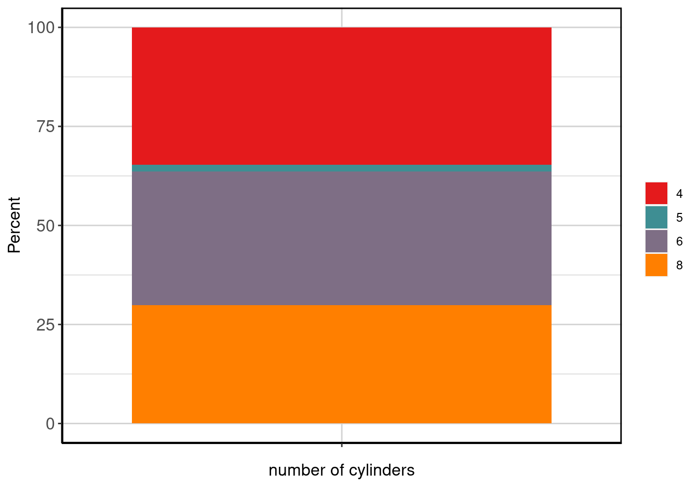
Generate knitr friendly summary table
make_kable_output(cylSummaryExample)| number of cylinders | n (%) |
|---|---|
| 4 | 81 (34.62%) |
| 5 | 4 (1.71%) |
| 6 | 79 (33.76%) |
| 8 | 70 (29.91%) |
Generate knitr friendly output
make_complete_output(cylSummaryExample)| number of cylinders | n (%) |
|---|---|
| 4 | 81 (34.62%) |
| 5 | 4 (1.71%) |
| 6 | 79 (33.76%) |
| 8 | 70 (29.91%) |

Figure 1: Stacked barplot of number of cylinders.
Categorical By
For a categorical variable with by, we need to specify x, a by variable, and the data.
cylByYearSummaryExample <- data_summary(x = "cyl", by = "year", data = mpg)Show method to output table and plot
show(cylByYearSummaryExample)## number of cylinders 1999 2008 Overall
## 1 4 45 (38.46%) 36 (30.77%) 81 (34.62%)
## 2 5 0 (0%) 4 (3.42%) 4 (1.71%)
## 3 6 45 (38.46%) 34 (29.06%) 79 (33.76%)
## 4 8 27 (23.08%) 43 (36.75%) 70 (29.91%)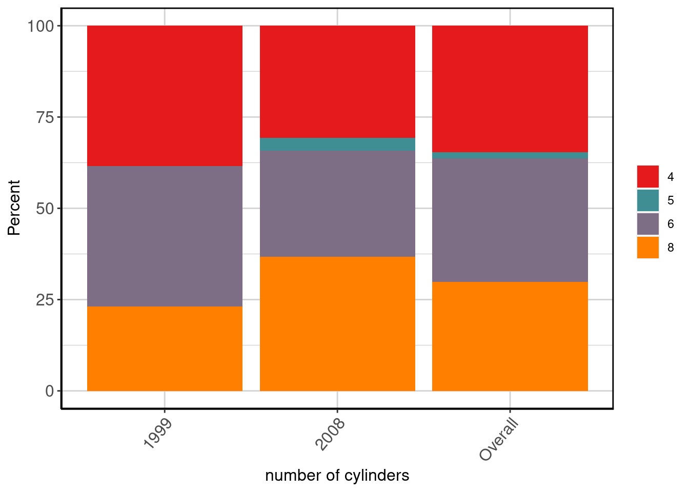
Output the summary table
data_summary_table(cylByYearSummaryExample)## number of cylinders 1999 2008 Overall
## 1 4 45 (38.46%) 36 (30.77%) 81 (34.62%)
## 2 5 0 (0%) 4 (3.42%) 4 (1.71%)
## 3 6 45 (38.46%) 34 (29.06%) 79 (33.76%)
## 4 8 27 (23.08%) 43 (36.75%) 70 (29.91%)Output the plot
data_summary_plot(cylByYearSummaryExample)Generate a knitr friendly summary table
make_kable_output(cylByYearSummaryExample)| number of cylinders | 1999 | 2008 | Overall |
|---|---|---|---|
| 4 | 45 (38.46%) | 36 (30.77%) | 81 (34.62%) |
| 5 | 0 (0%) | 4 (3.42%) | 4 (1.71%) |
| 6 | 45 (38.46%) | 34 (29.06%) | 79 (33.76%) |
| 8 | 27 (23.08%) | 43 (36.75%) | 70 (29.91%) |
Generate knitr friendly output
make_complete_output(cylByYearSummaryExample)| number of cylinders | 1999 | 2008 | Overall |
|---|---|---|---|
| 4 | 45 (38.46%) | 36 (30.77%) | 81 (34.62%) |
| 5 | 0 (0%) | 4 (3.42%) | 4 (1.71%) |
| 6 | 45 (38.46%) | 34 (29.06%) | 79 (33.76%) |
| 8 | 27 (23.08%) | 43 (36.75%) | 70 (29.91%) |

Figure 2: Stacked barplot of number of cylinders by year of manufacture.
Categorical By By
For a categorical variable with two or more by variables, we need to specify x, the by variables as a character string, and the data.
cylByYearByPartySummaryExample <- data_summary(x = "cyl", by = c("year", "party"), data = mpg)Show method to output table and plot
show(cylByYearByPartySummaryExample)## number of cylinders 1999, republican 2008, republican 1999, democrat
## 1 4 10 (31.25%) 7 (25%) 8 (27.59%)
## 2 5 0 (0%) 1 (3.57%) 0 (0%)
## 3 6 12 (37.5%) 8 (28.57%) 12 (41.38%)
## 4 8 10 (31.25%) 12 (42.86%) 9 (31.03%)
## 2008, democrat 1999, independent 2008, independent Overall R NA Value
## 1 10 (32.26%) 14 (48.28%) 11 (39.29%) 81 (34.62%) 21 (36.84%)
## 2 1 (3.23%) 0 (0%) 2 (7.14%) 4 (1.71%) 0 (0%)
## 3 9 (29.03%) 10 (34.48%) 7 (25%) 79 (33.76%) 21 (36.84%)
## 4 11 (35.48%) 5 (17.24%) 8 (28.57%) 70 (29.91%) 15 (26.32%)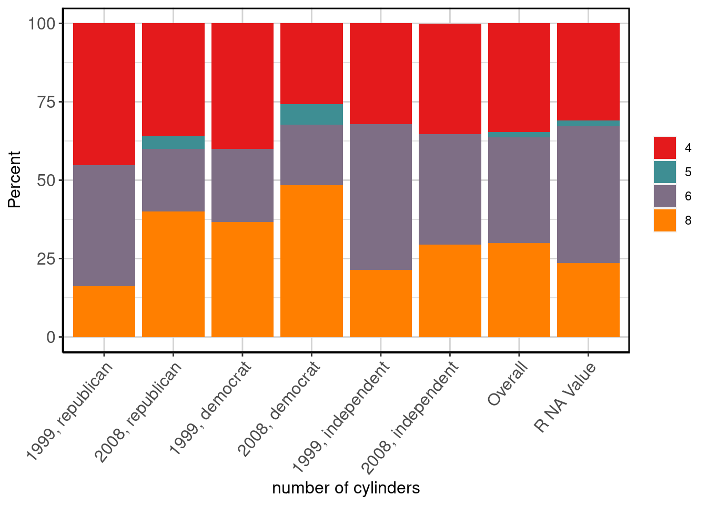
Output the summary table
data_summary_table(cylByYearByPartySummaryExample)## number of cylinders 1999, republican 2008, republican 1999, democrat
## 1 4 10 (31.25%) 7 (25%) 8 (27.59%)
## 2 5 0 (0%) 1 (3.57%) 0 (0%)
## 3 6 12 (37.5%) 8 (28.57%) 12 (41.38%)
## 4 8 10 (31.25%) 12 (42.86%) 9 (31.03%)
## 2008, democrat 1999, independent 2008, independent Overall R NA Value
## 1 10 (32.26%) 14 (48.28%) 11 (39.29%) 81 (34.62%) 21 (36.84%)
## 2 1 (3.23%) 0 (0%) 2 (7.14%) 4 (1.71%) 0 (0%)
## 3 9 (29.03%) 10 (34.48%) 7 (25%) 79 (33.76%) 21 (36.84%)
## 4 11 (35.48%) 5 (17.24%) 8 (28.57%) 70 (29.91%) 15 (26.32%)Output the plot
data_summary_plot(cylByYearByPartySummaryExample)
Generate a knitr friendly summary table
make_kable_output(cylByYearByPartySummaryExample)| number of cylinders | 1999, republican | 2008, republican | 1999, democrat | 2008, democrat | 1999, independent | 2008, independent | Overall | R NA Value |
|---|---|---|---|---|---|---|---|---|
| 4 | 10 (31.25%) | 7 (25%) | 8 (27.59%) | 10 (32.26%) | 14 (48.28%) | 11 (39.29%) | 81 (34.62%) | 21 (36.84%) |
| 5 | 0 (0%) | 1 (3.57%) | 0 (0%) | 1 (3.23%) | 0 (0%) | 2 (7.14%) | 4 (1.71%) | 0 (0%) |
| 6 | 12 (37.5%) | 8 (28.57%) | 12 (41.38%) | 9 (29.03%) | 10 (34.48%) | 7 (25%) | 79 (33.76%) | 21 (36.84%) |
| 8 | 10 (31.25%) | 12 (42.86%) | 9 (31.03%) | 11 (35.48%) | 5 (17.24%) | 8 (28.57%) | 70 (29.91%) | 15 (26.32%) |
Generate knitr friendly output
make_complete_output(cylByYearByPartySummaryExample)| number of cylinders | 1999, republican | 2008, republican | 1999, democrat | 2008, democrat | 1999, independent | 2008, independent | Overall | R NA Value |
|---|---|---|---|---|---|---|---|---|
| 4 | 10 (31.25%) | 7 (25%) | 8 (27.59%) | 10 (32.26%) | 14 (48.28%) | 11 (39.29%) | 81 (34.62%) | 21 (36.84%) |
| 5 | 0 (0%) | 1 (3.57%) | 0 (0%) | 1 (3.23%) | 0 (0%) | 2 (7.14%) | 4 (1.71%) | 0 (0%) |
| 6 | 12 (37.5%) | 8 (28.57%) | 12 (41.38%) | 9 (29.03%) | 10 (34.48%) | 7 (25%) | 79 (33.76%) | 21 (36.84%) |
| 8 | 10 (31.25%) | 12 (42.86%) | 9 (31.03%) | 11 (35.48%) | 5 (17.24%) | 8 (28.57%) | 70 (29.91%) | 15 (26.32%) |
Figure 3: Stacked barplot of number of cylinders by year of manufacture by some random political parties.
Continuous
For a continuous variable x, we only need to specify x and the data.
ctySummaryExample <- data_summary(x = "cty", data = mpg)Show method to output table and plot
show(ctySummaryExample)## Label N P NA Mean S Dev Med MAD 25th P 75th P IQR Min
## 1 city miles per gallon 234 0 16.86 4.26 17 4.45 14 19 5 9
## Max
## 1 35Output the summary table
data_summary_table(ctySummaryExample)## Label N P NA Mean S Dev Med MAD 25th P 75th P IQR Min
## 1 city miles per gallon 234 0 16.86 4.26 17 4.45 14 19 5 9
## Max
## 1 35Output the plot
data_summary_plot(ctySummaryExample)
Generate knitr friendly summary table
make_kable_output(ctySummaryExample)| Label | N | P NA | Mean | S Dev | Med | MAD | 25th P | 75th P | IQR | Min | Max | |
|---|---|---|---|---|---|---|---|---|---|---|---|---|
| city miles per gallon | 234 | 0 | 16.86 | 4.26 | 17 | 4.45 | 14 | 19 | 5 | 9 | 35 |
Generate knitr friendly output
make_complete_output(ctySummaryExample)| Label | N | P NA | Mean | S Dev | Med | MAD | 25th P | 75th P | IQR | Min | Max | |
|---|---|---|---|---|---|---|---|---|---|---|---|---|
| city miles per gallon | 234 | 0 | 16.86 | 4.26 | 17 | 4.45 | 14 | 19 | 5 | 9 | 35 |

Figure 4: Stacked barplot of city miles per gallon.
Continuous By
For a continuous variable with by, we need to specify x, a by variable, and the data.
ctyByCylSummaryExample <- data_summary(x = "cty", by = "cyl", data = mpg)Show method to output table and plot
show(ctyByCylSummaryExample)## number of cylinders Label N P NA Mean S Dev Med MAD
## 1 4 city miles per gallon 81 0 21.01 3.50 21.0 2.97
## 2 5 city miles per gallon 4 0 20.50 0.58 20.5 0.74
## 3 6 city miles per gallon 79 0 16.22 1.77 16.0 1.48
## 4 8 city miles per gallon 70 0 12.57 1.81 13.0 2.22
## 5 Overall city miles per gallon 234 0 16.86 4.26 17.0 4.45
## 25th P 75th P IQR Min Max
## 1 19 22 3 15 35
## 2 20 21 1 20 21
## 3 15 18 3 11 19
## 4 11 14 3 9 16
## 5 14 19 5 9 35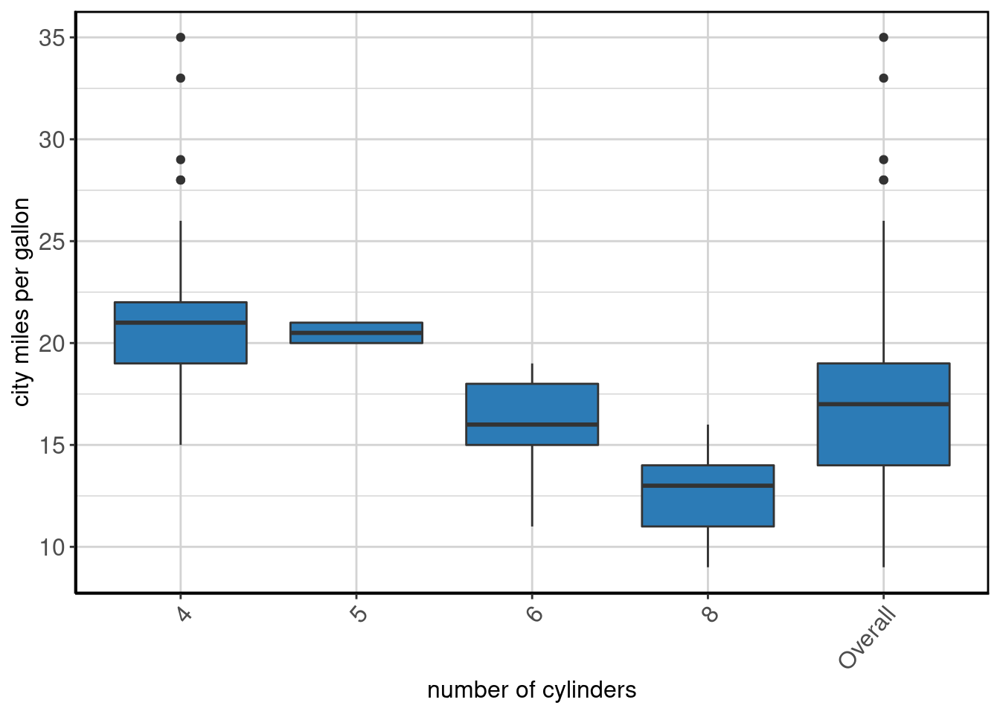
Output the summary table
data_summary_table(ctyByCylSummaryExample)## number of cylinders Label N P NA Mean S Dev Med MAD
## 1 4 city miles per gallon 81 0 21.01 3.50 21.0 2.97
## 2 5 city miles per gallon 4 0 20.50 0.58 20.5 0.74
## 3 6 city miles per gallon 79 0 16.22 1.77 16.0 1.48
## 4 8 city miles per gallon 70 0 12.57 1.81 13.0 2.22
## 5 Overall city miles per gallon 234 0 16.86 4.26 17.0 4.45
## 25th P 75th P IQR Min Max
## 1 19 22 3 15 35
## 2 20 21 1 20 21
## 3 15 18 3 11 19
## 4 11 14 3 9 16
## 5 14 19 5 9 35Output the plot
data_summary_plot(ctyByCylSummaryExample)
Generate a knitr friendly summary table
make_kable_output(ctyByCylSummaryExample)| number of cylinders | Label | N | P NA | Mean | S Dev | Med | MAD | 25th P | 75th P | IQR | Min | Max |
|---|---|---|---|---|---|---|---|---|---|---|---|---|
| 4 | city miles per gallon | 81 | 0 | 21.01 | 3.50 | 21.0 | 2.97 | 19 | 22 | 3 | 15 | 35 |
| 5 | city miles per gallon | 4 | 0 | 20.50 | 0.58 | 20.5 | 0.74 | 20 | 21 | 1 | 20 | 21 |
| 6 | city miles per gallon | 79 | 0 | 16.22 | 1.77 | 16.0 | 1.48 | 15 | 18 | 3 | 11 | 19 |
| 8 | city miles per gallon | 70 | 0 | 12.57 | 1.81 | 13.0 | 2.22 | 11 | 14 | 3 | 9 | 16 |
| Overall | city miles per gallon | 234 | 0 | 16.86 | 4.26 | 17.0 | 4.45 | 14 | 19 | 5 | 9 | 35 |
Generate knitr friendly output
make_complete_output(ctyByCylSummaryExample)| number of cylinders | Label | N | P NA | Mean | S Dev | Med | MAD | 25th P | 75th P | IQR | Min | Max |
|---|---|---|---|---|---|---|---|---|---|---|---|---|
| 4 | city miles per gallon | 81 | 0 | 21.01 | 3.50 | 21.0 | 2.97 | 19 | 22 | 3 | 15 | 35 |
| 5 | city miles per gallon | 4 | 0 | 20.50 | 0.58 | 20.5 | 0.74 | 20 | 21 | 1 | 20 | 21 |
| 6 | city miles per gallon | 79 | 0 | 16.22 | 1.77 | 16.0 | 1.48 | 15 | 18 | 3 | 11 | 19 |
| 8 | city miles per gallon | 70 | 0 | 12.57 | 1.81 | 13.0 | 2.22 | 11 | 14 | 3 | 9 | 16 |
| Overall | city miles per gallon | 234 | 0 | 16.86 | 4.26 | 17.0 | 4.45 | 14 | 19 | 5 | 9 | 35 |
Figure 5: Stacked barplot of city miles per gallon by number of cylinders.
Continuous By By
For a continuous variable with two or more by variables, we need to specify x, the by variables as a character string, and the data.
ctyByCylByYearSummaryExample <- data_summary(x = "cty", by = c("cyl", "year"), data = mpg)Show method to output table and plot
show(ctyByCylByYearSummaryExample)## number of cylinders by year of manufacture Label N P NA
## 1 4, 1999 city miles per gallon 45 0
## 2 6, 1999 city miles per gallon 45 0
## 3 8, 1999 city miles per gallon 27 0
## 4 4, 2008 city miles per gallon 36 0
## 5 5, 2008 city miles per gallon 4 0
## 6 6, 2008 city miles per gallon 34 0
## 7 8, 2008 city miles per gallon 43 0
## 8 Overall city miles per gallon 234 0
## Mean S Dev Med MAD 25th P 75th P IQR Min Max
## 1 20.84 4.24 19.0 2.97 18 21 3.0 15 35
## 2 16.07 1.67 16.0 2.97 15 18 3.0 13 19
## 3 12.22 1.65 11.0 0.00 11 13 2.0 11 16
## 4 21.22 2.29 21.0 1.48 20 22 2.0 17 28
## 5 20.50 0.58 20.5 0.74 20 21 1.0 20 21
## 6 16.41 1.91 17.0 1.48 15 18 2.5 11 19
## 7 12.79 1.88 13.0 1.48 12 14 2.0 9 16
## 8 16.86 4.26 17.0 4.45 14 19 5.0 9 35
Output the summary table
data_summary_table(ctyByCylByYearSummaryExample)## number of cylinders by year of manufacture Label N P NA
## 1 4, 1999 city miles per gallon 45 0
## 2 6, 1999 city miles per gallon 45 0
## 3 8, 1999 city miles per gallon 27 0
## 4 4, 2008 city miles per gallon 36 0
## 5 5, 2008 city miles per gallon 4 0
## 6 6, 2008 city miles per gallon 34 0
## 7 8, 2008 city miles per gallon 43 0
## 8 Overall city miles per gallon 234 0
## Mean S Dev Med MAD 25th P 75th P IQR Min Max
## 1 20.84 4.24 19.0 2.97 18 21 3.0 15 35
## 2 16.07 1.67 16.0 2.97 15 18 3.0 13 19
## 3 12.22 1.65 11.0 0.00 11 13 2.0 11 16
## 4 21.22 2.29 21.0 1.48 20 22 2.0 17 28
## 5 20.50 0.58 20.5 0.74 20 21 1.0 20 21
## 6 16.41 1.91 17.0 1.48 15 18 2.5 11 19
## 7 12.79 1.88 13.0 1.48 12 14 2.0 9 16
## 8 16.86 4.26 17.0 4.45 14 19 5.0 9 35Output the plot
data_summary_plot(ctyByCylByYearSummaryExample)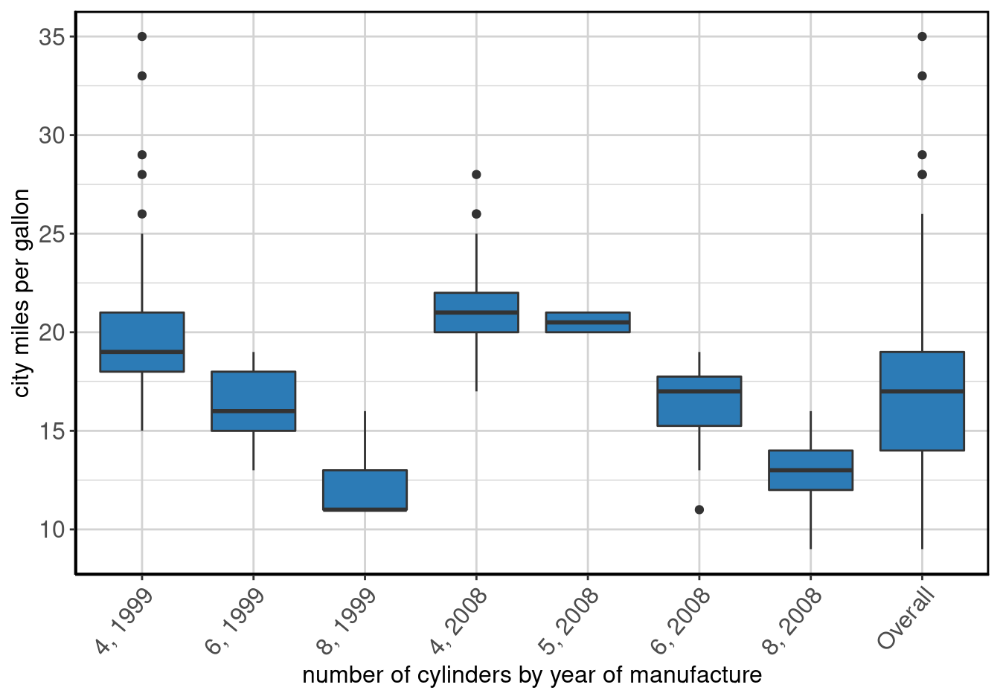
Generate a knitr friendly summary table
make_kable_output(ctyByCylByYearSummaryExample)| number of cylinders by year of manufacture | Label | N | P NA | Mean | S Dev | Med | MAD | 25th P | 75th P | IQR | Min | Max |
|---|---|---|---|---|---|---|---|---|---|---|---|---|
| 4, 1999 | city miles per gallon | 45 | 0 | 20.84 | 4.24 | 19.0 | 2.97 | 18 | 21 | 3.0 | 15 | 35 |
| 6, 1999 | city miles per gallon | 45 | 0 | 16.07 | 1.67 | 16.0 | 2.97 | 15 | 18 | 3.0 | 13 | 19 |
| 8, 1999 | city miles per gallon | 27 | 0 | 12.22 | 1.65 | 11.0 | 0.00 | 11 | 13 | 2.0 | 11 | 16 |
| 4, 2008 | city miles per gallon | 36 | 0 | 21.22 | 2.29 | 21.0 | 1.48 | 20 | 22 | 2.0 | 17 | 28 |
| 5, 2008 | city miles per gallon | 4 | 0 | 20.50 | 0.58 | 20.5 | 0.74 | 20 | 21 | 1.0 | 20 | 21 |
| 6, 2008 | city miles per gallon | 34 | 0 | 16.41 | 1.91 | 17.0 | 1.48 | 15 | 18 | 2.5 | 11 | 19 |
| 8, 2008 | city miles per gallon | 43 | 0 | 12.79 | 1.88 | 13.0 | 1.48 | 12 | 14 | 2.0 | 9 | 16 |
| Overall | city miles per gallon | 234 | 0 | 16.86 | 4.26 | 17.0 | 4.45 | 14 | 19 | 5.0 | 9 | 35 |
Generate knitr friendly output
make_complete_output(ctyByCylByYearSummaryExample)| number of cylinders by year of manufacture | Label | N | P NA | Mean | S Dev | Med | MAD | 25th P | 75th P | IQR | Min | Max |
|---|---|---|---|---|---|---|---|---|---|---|---|---|
| 4, 1999 | city miles per gallon | 45 | 0 | 20.84 | 4.24 | 19.0 | 2.97 | 18 | 21 | 3.0 | 15 | 35 |
| 6, 1999 | city miles per gallon | 45 | 0 | 16.07 | 1.67 | 16.0 | 2.97 | 15 | 18 | 3.0 | 13 | 19 |
| 8, 1999 | city miles per gallon | 27 | 0 | 12.22 | 1.65 | 11.0 | 0.00 | 11 | 13 | 2.0 | 11 | 16 |
| 4, 2008 | city miles per gallon | 36 | 0 | 21.22 | 2.29 | 21.0 | 1.48 | 20 | 22 | 2.0 | 17 | 28 |
| 5, 2008 | city miles per gallon | 4 | 0 | 20.50 | 0.58 | 20.5 | 0.74 | 20 | 21 | 1.0 | 20 | 21 |
| 6, 2008 | city miles per gallon | 34 | 0 | 16.41 | 1.91 | 17.0 | 1.48 | 15 | 18 | 2.5 | 11 | 19 |
| 8, 2008 | city miles per gallon | 43 | 0 | 12.79 | 1.88 | 13.0 | 1.48 | 12 | 14 | 2.0 | 9 | 16 |
| Overall | city miles per gallon | 234 | 0 | 16.86 | 4.26 | 17.0 | 4.45 | 14 | 19 | 5.0 | 9 | 35 |

Figure 6: Stacked barplot of city miles per gallon by number of cylinders by year of manufacture.
Date
For a date variable x, we need to specify x, the data, and difftime_units.
dpSummaryExample <- data_summary(x = "dp", data = mpg[which(mpg$dp != "1000-05-02" | is.na(mpg$dp)), ], difftime_units = "weeks")Show method to output table and plot
show(dpSummaryExample)## Label N P NA Mean S Dev Med MAD
## 1 date of purchase 213 8.58 2003-12-21 236.59 weeks 1999-12-24 74.98 weeks
## 25th P 75th P IQR Min Max
## 1 1999-06-23 2008-07-12 472.43 weeks 1999-01-04 2008-12-23Output the summary table
data_summary_table(dpSummaryExample)## Label N P NA Mean S Dev Med MAD
## 1 date of purchase 213 8.58 2003-12-21 236.59 weeks 1999-12-24 74.98 weeks
## 25th P 75th P IQR Min Max
## 1 1999-06-23 2008-07-12 472.43 weeks 1999-01-04 2008-12-23Output the plot
data_summary_plot(dpSummaryExample)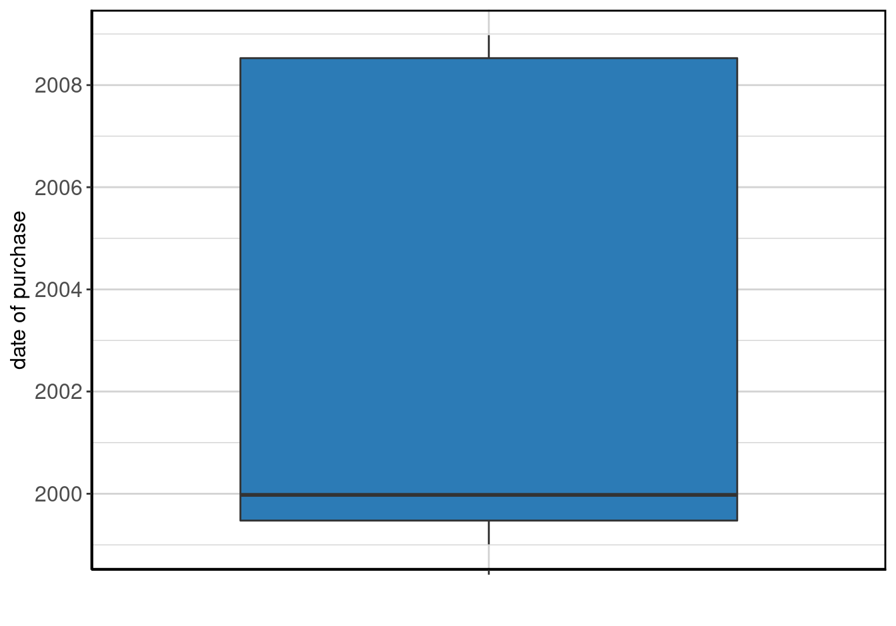
Generate knitr friendly summary table
make_kable_output(dpSummaryExample)| Label | N | P NA | Mean | S Dev | Med | MAD | 25th P | 75th P | IQR | Min | Max | |
|---|---|---|---|---|---|---|---|---|---|---|---|---|
| date of purchase | 213 | 8.58 | 2003-12-21 | 236.59 weeks | 1999-12-24 | 74.98 weeks | 1999-06-23 | 2008-07-12 | 472.43 weeks | 1999-01-04 | 2008-12-23 |
Generate knitr friendly output
make_complete_output(dpSummaryExample)| Label | N | P NA | Mean | S Dev | Med | MAD | 25th P | 75th P | IQR | Min | Max | |
|---|---|---|---|---|---|---|---|---|---|---|---|---|
| date of purchase | 213 | 8.58 | 2003-12-21 | 236.59 weeks | 1999-12-24 | 74.98 weeks | 1999-06-23 | 2008-07-12 | 472.43 weeks | 1999-01-04 | 2008-12-23 |

Figure 7: Stacked barplot of date of purchase.
Date By
For a date variable with by, we need to specify x, a by variable, the data, and difftime_units.
dpByCylSummaryExample <- data_summary(x = "dp", by = "cyl", data = mpg[which(mpg$dp != "1000-05-02" | is.na(mpg$dp)), ], difftime_units = "weeks")Show method to output table and plot
show(dpByCylSummaryExample)## number of cylinders Label N P NA Mean S Dev
## 1 4 date of purchase 73 8.75 2003-03-03 234.04 weeks
## 2 5 date of purchase 3 25.00 2008-09-25 16.08 weeks
## 3 6 date of purchase 71 10.13 2003-06-14 235.29 weeks
## 4 8 date of purchase 66 5.71 2005-03-13 229.06 weeks
## 5 Overall date of purchase 213 8.58 2003-12-21 236.59 weeks
## Med MAD 25th P 75th P IQR Min
## 1 1999-10-11 49.35 weeks 1999-05-16 2008-05-15 469.57 weeks 1999-01-14
## 2 2008-11-13 6.78 weeks 2008-05-20 2008-12-15 14.93 weeks 2008-05-20
## 3 1999-11-02 50.20 weeks 1999-06-27 2008-06-18 467.64 weeks 1999-01-05
## 4 2008-02-10 52.42 weeks 1999-09-20 2008-08-25 465.39 weeks 1999-01-04
## 5 1999-12-24 74.98 weeks 1999-06-23 2008-07-12 472.43 weeks 1999-01-04
## Max
## 1 2008-12-23
## 2 2008-12-15
## 3 2008-12-09
## 4 2008-12-14
## 5 2008-12-23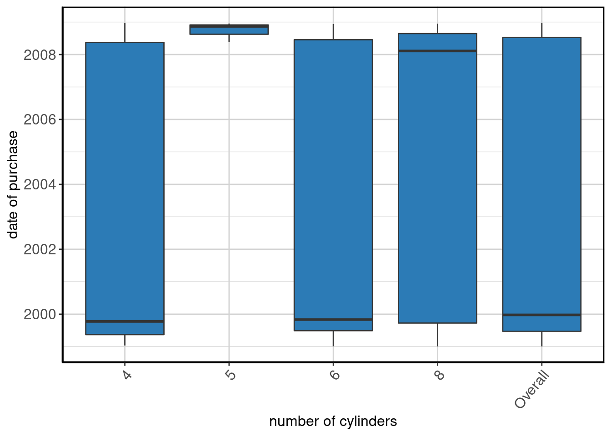
Output the summary table
data_summary_table(dpByCylSummaryExample)## number of cylinders Label N P NA Mean S Dev
## 1 4 date of purchase 73 8.75 2003-03-03 234.04 weeks
## 2 5 date of purchase 3 25.00 2008-09-25 16.08 weeks
## 3 6 date of purchase 71 10.13 2003-06-14 235.29 weeks
## 4 8 date of purchase 66 5.71 2005-03-13 229.06 weeks
## 5 Overall date of purchase 213 8.58 2003-12-21 236.59 weeks
## Med MAD 25th P 75th P IQR Min
## 1 1999-10-11 49.35 weeks 1999-05-16 2008-05-15 469.57 weeks 1999-01-14
## 2 2008-11-13 6.78 weeks 2008-05-20 2008-12-15 14.93 weeks 2008-05-20
## 3 1999-11-02 50.20 weeks 1999-06-27 2008-06-18 467.64 weeks 1999-01-05
## 4 2008-02-10 52.42 weeks 1999-09-20 2008-08-25 465.39 weeks 1999-01-04
## 5 1999-12-24 74.98 weeks 1999-06-23 2008-07-12 472.43 weeks 1999-01-04
## Max
## 1 2008-12-23
## 2 2008-12-15
## 3 2008-12-09
## 4 2008-12-14
## 5 2008-12-23Output the plot
data_summary_plot(dpByCylSummaryExample)
Generate a knitr friendly summary table
make_kable_output(dpByCylSummaryExample)| number of cylinders | Label | N | P NA | Mean | S Dev | Med | MAD | 25th P | 75th P | IQR | Min | Max |
|---|---|---|---|---|---|---|---|---|---|---|---|---|
| 4 | date of purchase | 73 | 8.75 | 2003-03-03 | 234.04 weeks | 1999-10-11 | 49.35 weeks | 1999-05-16 | 2008-05-15 | 469.57 weeks | 1999-01-14 | 2008-12-23 |
| 5 | date of purchase | 3 | 25.00 | 2008-09-25 | 16.08 weeks | 2008-11-13 | 6.78 weeks | 2008-05-20 | 2008-12-15 | 14.93 weeks | 2008-05-20 | 2008-12-15 |
| 6 | date of purchase | 71 | 10.13 | 2003-06-14 | 235.29 weeks | 1999-11-02 | 50.20 weeks | 1999-06-27 | 2008-06-18 | 467.64 weeks | 1999-01-05 | 2008-12-09 |
| 8 | date of purchase | 66 | 5.71 | 2005-03-13 | 229.06 weeks | 2008-02-10 | 52.42 weeks | 1999-09-20 | 2008-08-25 | 465.39 weeks | 1999-01-04 | 2008-12-14 |
| Overall | date of purchase | 213 | 8.58 | 2003-12-21 | 236.59 weeks | 1999-12-24 | 74.98 weeks | 1999-06-23 | 2008-07-12 | 472.43 weeks | 1999-01-04 | 2008-12-23 |
Generate knitr friendly output
make_complete_output(dpByCylSummaryExample)| number of cylinders | Label | N | P NA | Mean | S Dev | Med | MAD | 25th P | 75th P | IQR | Min | Max |
|---|---|---|---|---|---|---|---|---|---|---|---|---|
| 4 | date of purchase | 73 | 8.75 | 2003-03-03 | 234.04 weeks | 1999-10-11 | 49.35 weeks | 1999-05-16 | 2008-05-15 | 469.57 weeks | 1999-01-14 | 2008-12-23 |
| 5 | date of purchase | 3 | 25.00 | 2008-09-25 | 16.08 weeks | 2008-11-13 | 6.78 weeks | 2008-05-20 | 2008-12-15 | 14.93 weeks | 2008-05-20 | 2008-12-15 |
| 6 | date of purchase | 71 | 10.13 | 2003-06-14 | 235.29 weeks | 1999-11-02 | 50.20 weeks | 1999-06-27 | 2008-06-18 | 467.64 weeks | 1999-01-05 | 2008-12-09 |
| 8 | date of purchase | 66 | 5.71 | 2005-03-13 | 229.06 weeks | 2008-02-10 | 52.42 weeks | 1999-09-20 | 2008-08-25 | 465.39 weeks | 1999-01-04 | 2008-12-14 |
| Overall | date of purchase | 213 | 8.58 | 2003-12-21 | 236.59 weeks | 1999-12-24 | 74.98 weeks | 1999-06-23 | 2008-07-12 | 472.43 weeks | 1999-01-04 | 2008-12-23 |
Figure 8: Stacked barplot of date of purchase by number of cylinders.
Date By By
For a date variable with two or more by variables, we need to specify x, the by variables as a character string, the data, and difftime_units.
dpByCylByCommentsSummaryExample <- data_summary(x = "dp", by = c("cyl", "comments"), data = mpg[which(mpg$dp != "1000-05-02" | is.na(mpg$dp)), ], difftime_units = "weeks")Show method to output table and plot
show(dpByCylByCommentsSummaryExample)## number of cylinders by some random comments Label N P NA
## 1 4, . date of purchase 4 20.00
## 2 6, . date of purchase 8 20.00
## 3 8, . date of purchase 8 0.00
## 4 4, Blah, Blah, Blah, Blah, Blah, Blah, Blah, Blah date of purchase 4 0.00
## 5 6, Blah, Blah, Blah, Blah, Blah, Blah, Blah, Blah date of purchase 6 14.29
## 6 8, Blah, Blah, Blah, Blah, Blah, Blah, Blah, Blah date of purchase 4 0.00
## 7 4, Does it also fly? date of purchase 6 14.29
## 8 5, Does it also fly? date of purchase 1 0.00
## 9 6, Does it also fly? date of purchase 13 0.00
## 10 8, Does it also fly? date of purchase 7 0.00
## 11 4, Does it come in green? date of purchase 10 9.09
## 12 6, Does it come in green? date of purchase 3 25.00
## 13 8, Does it come in green? date of purchase 5 0.00
## 14 4, I like this car! date of purchase 15 0.00
## 15 6, I like this car! date of purchase 11 8.33
## 16 8, I like this car! date of purchase 9 0.00
## 17 4, Meh. date of purchase 7 0.00
## 18 5, Meh. date of purchase 1 0.00
## 19 6, Meh. date of purchase 7 0.00
## 20 8, Meh. date of purchase 4 20.00
## 21 4, Missing date of purchase 9 18.18
## 22 5, Missing date of purchase 1 50.00
## 23 6, Missing date of purchase 6 14.29
## 24 8, Missing date of purchase 4 20.00
## 25 4, This is the worst car ever! date of purchase 7 0.00
## 26 6, This is the worst car ever! date of purchase 6 14.29
## 27 8, This is the worst car ever! date of purchase 10 0.00
## 28 4, want cheese flavoured cars. date of purchase 5 28.57
## 29 6, want cheese flavoured cars. date of purchase 5 0.00
## 30 8, want cheese flavoured cars. date of purchase 10 16.67
## 31 Overall date of purchase 213 8.58
## 32 R NA Value date of purchase 17 5.56
## Mean S Dev Med MAD 25th P 75th P
## 1 2001-08-28 221.30 weeks 1999-09-13 28.06 weeks 1999-03-24 1999-12-14
## 2 2000-07-25 173.02 weeks 1999-06-25 20.44 weeks 1999-01-07 1999-08-28
## 3 2005-12-01 221.00 weeks 2008-01-23 11.44 weeks 1999-02-03 2008-02-09
## 4 2001-08-20 243.01 weeks 1999-05-26 18.85 weeks 1999-02-17 1999-08-14
## 5 2007-03-06 191.49 weeks 2008-08-20 9.21 weeks 2008-06-18 2008-09-13
## 6 2008-10-05 9.45 weeks 2008-10-23 5.61 weeks 2008-07-04 2008-11-05
## 7 2005-04-28 239.96 weeks 2008-02-16 25.31 weeks 1999-06-03 2008-03-06
## 8 2008-11-13 NA weeks 2008-11-13 0.00 weeks 2008-11-13 2008-11-13
## 9 2004-05-02 242.35 weeks 2008-03-25 45.54 weeks 1999-06-27 2008-06-07
## 10 2004-07-03 247.38 weeks 2008-01-16 46.38 weeks 1999-07-16 2008-06-02
## 11 2002-01-19 225.00 weeks 1999-07-10 22.77 weeks 1999-04-04 2008-02-26
## 12 2005-07-11 277.35 weeks 2008-06-13 22.24 weeks 1999-05-23 2008-09-26
## 13 2004-10-17 265.43 weeks 2008-04-15 39.39 weeks 1999-03-31 2008-06-08
## 14 2001-05-17 195.60 weeks 1999-10-09 14.40 weeks 1999-03-30 1999-12-06
## 15 2003-09-03 245.49 weeks 1999-10-29 48.71 weeks 1999-08-31 2008-07-12
## 16 2003-06-16 241.59 weeks 1999-10-04 30.08 weeks 1999-07-28 2008-02-23
## 17 2004-11-04 256.62 weeks 2008-06-09 41.72 weeks 1999-08-26 2008-12-10
## 18 2008-12-15 NA weeks 2008-12-15 0.00 weeks 2008-12-15 2008-12-15
## 19 2000-11-23 171.54 weeks 1999-08-17 24.36 weeks 1999-07-30 1999-12-24
## 20 2001-10-17 232.23 weeks 1999-11-01 32.72 weeks 1999-01-23 1999-11-28
## 21 2005-08-25 237.49 weeks 2008-07-17 22.45 weeks 1999-12-15 2008-10-12
## 22 2008-05-20 NA weeks 2008-05-20 0.00 weeks 2008-05-20 2008-05-20
## 23 2000-11-16 193.17 weeks 1999-05-26 20.97 weeks 1999-03-10 1999-10-18
## 24 2006-07-29 234.19 weeks 2008-10-10 8.37 weeks 1999-11-05 2008-11-10
## 25 2003-03-04 256.43 weeks 1999-06-23 33.89 weeks 1999-03-18 2008-03-24
## 26 2007-02-08 192.67 weeks 2008-07-24 8.68 weeks 2008-06-11 2008-09-01
## 27 2005-10-30 233.50 weeks 2008-07-15 22.98 weeks 1999-11-17 2008-09-18
## 28 2002-12-23 262.84 weeks 1999-07-18 33.46 weeks 1999-04-08 2008-02-10
## 29 2003-03-12 241.93 weeks 1999-12-16 24.36 weeks 1999-10-30 2008-04-02
## 30 2005-11-23 225.75 weeks 2008-06-10 33.36 weeks 1999-10-21 2008-09-21
## 31 2003-12-21 236.59 weeks 1999-12-24 74.98 weeks 1999-06-23 2008-07-12
## 32 2003-07-25 240.13 weeks 1999-09-12 48.71 weeks 1999-04-12 2008-02-11
## IQR Min Max
## 1 134.11 weeks 1999-03-24 2008-01-02
## 2 24.29 weeks 1999-01-05 2008-09-28
## 3 123.82 weeks 1999-01-13 2008-08-25
## 4 140.75 weeks 1999-02-17 2008-08-12
## 5 10.46 weeks 1999-09-11 2008-12-09
## 6 8.11 weeks 2008-07-04 2008-12-03
## 7 343.32 weeks 1999-05-16 2008-09-23
## 8 0.00 weeks 2008-11-13 2008-11-13
## 9 466.86 weeks 1999-05-01 2008-10-26
## 10 448.14 weeks 1999-01-04 2008-08-22
## 11 354.21 weeks 1999-01-16 2008-05-15
## 12 243.86 weeks 1999-05-23 2008-09-26
## 13 479.57 weeks 1999-03-17 2008-10-18
## 14 26.07 weeks 1999-02-08 2008-09-07
## 15 460.64 weeks 1999-03-13 2008-10-15
## 16 447.43 weeks 1999-05-15 2008-11-15
## 17 479.64 weeks 1999-06-08 2008-12-23
## 18 0.00 weeks 2008-12-15 2008-12-15
## 19 19.07 weeks 1999-03-19 2008-04-30
## 20 128.21 weeks 1999-01-23 2008-06-12
## 21 460.57 weeks 1999-04-28 2008-12-12
## 22 0.00 weeks 2008-05-20 2008-05-20
## 23 28.46 weeks 1999-01-26 2008-05-31
## 24 124.86 weeks 1999-11-05 2008-11-27
## 25 467.21 weeks 1999-01-14 2008-11-26
## 26 9.39 weeks 1999-07-29 2008-10-28
## 27 353.86 weeks 1999-02-01 2008-12-14
## 28 461.43 weeks 1999-02-10 2008-11-11
## 29 439.57 weeks 1999-08-23 2008-04-16
## 30 356.50 weeks 1999-06-02 2008-12-08
## 31 472.43 weeks 1999-01-04 2008-12-23
## 32 461.00 weeks 1999-01-25 2008-09-29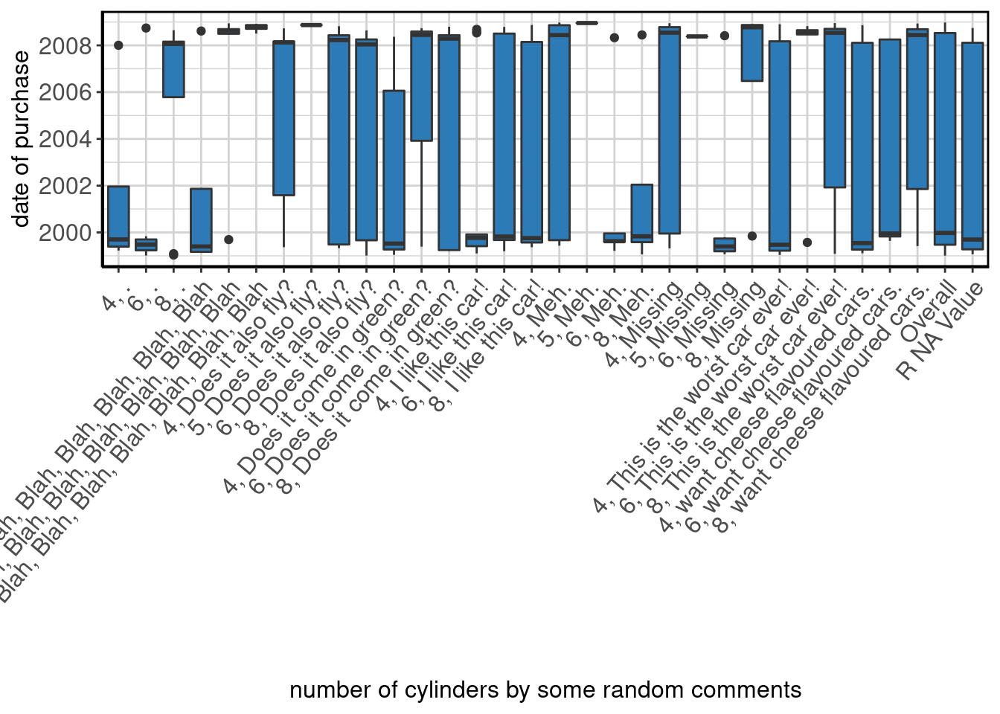
Output the summary table
data_summary_table(dpByCylByCommentsSummaryExample)## number of cylinders by some random comments Label N P NA
## 1 4, . date of purchase 4 20.00
## 2 6, . date of purchase 8 20.00
## 3 8, . date of purchase 8 0.00
## 4 4, Blah, Blah, Blah, Blah, Blah, Blah, Blah, Blah date of purchase 4 0.00
## 5 6, Blah, Blah, Blah, Blah, Blah, Blah, Blah, Blah date of purchase 6 14.29
## 6 8, Blah, Blah, Blah, Blah, Blah, Blah, Blah, Blah date of purchase 4 0.00
## 7 4, Does it also fly? date of purchase 6 14.29
## 8 5, Does it also fly? date of purchase 1 0.00
## 9 6, Does it also fly? date of purchase 13 0.00
## 10 8, Does it also fly? date of purchase 7 0.00
## 11 4, Does it come in green? date of purchase 10 9.09
## 12 6, Does it come in green? date of purchase 3 25.00
## 13 8, Does it come in green? date of purchase 5 0.00
## 14 4, I like this car! date of purchase 15 0.00
## 15 6, I like this car! date of purchase 11 8.33
## 16 8, I like this car! date of purchase 9 0.00
## 17 4, Meh. date of purchase 7 0.00
## 18 5, Meh. date of purchase 1 0.00
## 19 6, Meh. date of purchase 7 0.00
## 20 8, Meh. date of purchase 4 20.00
## 21 4, Missing date of purchase 9 18.18
## 22 5, Missing date of purchase 1 50.00
## 23 6, Missing date of purchase 6 14.29
## 24 8, Missing date of purchase 4 20.00
## 25 4, This is the worst car ever! date of purchase 7 0.00
## 26 6, This is the worst car ever! date of purchase 6 14.29
## 27 8, This is the worst car ever! date of purchase 10 0.00
## 28 4, want cheese flavoured cars. date of purchase 5 28.57
## 29 6, want cheese flavoured cars. date of purchase 5 0.00
## 30 8, want cheese flavoured cars. date of purchase 10 16.67
## 31 Overall date of purchase 213 8.58
## 32 R NA Value date of purchase 17 5.56
## Mean S Dev Med MAD 25th P 75th P
## 1 2001-08-28 221.30 weeks 1999-09-13 28.06 weeks 1999-03-24 1999-12-14
## 2 2000-07-25 173.02 weeks 1999-06-25 20.44 weeks 1999-01-07 1999-08-28
## 3 2005-12-01 221.00 weeks 2008-01-23 11.44 weeks 1999-02-03 2008-02-09
## 4 2001-08-20 243.01 weeks 1999-05-26 18.85 weeks 1999-02-17 1999-08-14
## 5 2007-03-06 191.49 weeks 2008-08-20 9.21 weeks 2008-06-18 2008-09-13
## 6 2008-10-05 9.45 weeks 2008-10-23 5.61 weeks 2008-07-04 2008-11-05
## 7 2005-04-28 239.96 weeks 2008-02-16 25.31 weeks 1999-06-03 2008-03-06
## 8 2008-11-13 NA weeks 2008-11-13 0.00 weeks 2008-11-13 2008-11-13
## 9 2004-05-02 242.35 weeks 2008-03-25 45.54 weeks 1999-06-27 2008-06-07
## 10 2004-07-03 247.38 weeks 2008-01-16 46.38 weeks 1999-07-16 2008-06-02
## 11 2002-01-19 225.00 weeks 1999-07-10 22.77 weeks 1999-04-04 2008-02-26
## 12 2005-07-11 277.35 weeks 2008-06-13 22.24 weeks 1999-05-23 2008-09-26
## 13 2004-10-17 265.43 weeks 2008-04-15 39.39 weeks 1999-03-31 2008-06-08
## 14 2001-05-17 195.60 weeks 1999-10-09 14.40 weeks 1999-03-30 1999-12-06
## 15 2003-09-03 245.49 weeks 1999-10-29 48.71 weeks 1999-08-31 2008-07-12
## 16 2003-06-16 241.59 weeks 1999-10-04 30.08 weeks 1999-07-28 2008-02-23
## 17 2004-11-04 256.62 weeks 2008-06-09 41.72 weeks 1999-08-26 2008-12-10
## 18 2008-12-15 NA weeks 2008-12-15 0.00 weeks 2008-12-15 2008-12-15
## 19 2000-11-23 171.54 weeks 1999-08-17 24.36 weeks 1999-07-30 1999-12-24
## 20 2001-10-17 232.23 weeks 1999-11-01 32.72 weeks 1999-01-23 1999-11-28
## 21 2005-08-25 237.49 weeks 2008-07-17 22.45 weeks 1999-12-15 2008-10-12
## 22 2008-05-20 NA weeks 2008-05-20 0.00 weeks 2008-05-20 2008-05-20
## 23 2000-11-16 193.17 weeks 1999-05-26 20.97 weeks 1999-03-10 1999-10-18
## 24 2006-07-29 234.19 weeks 2008-10-10 8.37 weeks 1999-11-05 2008-11-10
## 25 2003-03-04 256.43 weeks 1999-06-23 33.89 weeks 1999-03-18 2008-03-24
## 26 2007-02-08 192.67 weeks 2008-07-24 8.68 weeks 2008-06-11 2008-09-01
## 27 2005-10-30 233.50 weeks 2008-07-15 22.98 weeks 1999-11-17 2008-09-18
## 28 2002-12-23 262.84 weeks 1999-07-18 33.46 weeks 1999-04-08 2008-02-10
## 29 2003-03-12 241.93 weeks 1999-12-16 24.36 weeks 1999-10-30 2008-04-02
## 30 2005-11-23 225.75 weeks 2008-06-10 33.36 weeks 1999-10-21 2008-09-21
## 31 2003-12-21 236.59 weeks 1999-12-24 74.98 weeks 1999-06-23 2008-07-12
## 32 2003-07-25 240.13 weeks 1999-09-12 48.71 weeks 1999-04-12 2008-02-11
## IQR Min Max
## 1 134.11 weeks 1999-03-24 2008-01-02
## 2 24.29 weeks 1999-01-05 2008-09-28
## 3 123.82 weeks 1999-01-13 2008-08-25
## 4 140.75 weeks 1999-02-17 2008-08-12
## 5 10.46 weeks 1999-09-11 2008-12-09
## 6 8.11 weeks 2008-07-04 2008-12-03
## 7 343.32 weeks 1999-05-16 2008-09-23
## 8 0.00 weeks 2008-11-13 2008-11-13
## 9 466.86 weeks 1999-05-01 2008-10-26
## 10 448.14 weeks 1999-01-04 2008-08-22
## 11 354.21 weeks 1999-01-16 2008-05-15
## 12 243.86 weeks 1999-05-23 2008-09-26
## 13 479.57 weeks 1999-03-17 2008-10-18
## 14 26.07 weeks 1999-02-08 2008-09-07
## 15 460.64 weeks 1999-03-13 2008-10-15
## 16 447.43 weeks 1999-05-15 2008-11-15
## 17 479.64 weeks 1999-06-08 2008-12-23
## 18 0.00 weeks 2008-12-15 2008-12-15
## 19 19.07 weeks 1999-03-19 2008-04-30
## 20 128.21 weeks 1999-01-23 2008-06-12
## 21 460.57 weeks 1999-04-28 2008-12-12
## 22 0.00 weeks 2008-05-20 2008-05-20
## 23 28.46 weeks 1999-01-26 2008-05-31
## 24 124.86 weeks 1999-11-05 2008-11-27
## 25 467.21 weeks 1999-01-14 2008-11-26
## 26 9.39 weeks 1999-07-29 2008-10-28
## 27 353.86 weeks 1999-02-01 2008-12-14
## 28 461.43 weeks 1999-02-10 2008-11-11
## 29 439.57 weeks 1999-08-23 2008-04-16
## 30 356.50 weeks 1999-06-02 2008-12-08
## 31 472.43 weeks 1999-01-04 2008-12-23
## 32 461.00 weeks 1999-01-25 2008-09-29Output the plot
data_summary_plot(dpByCylByCommentsSummaryExample)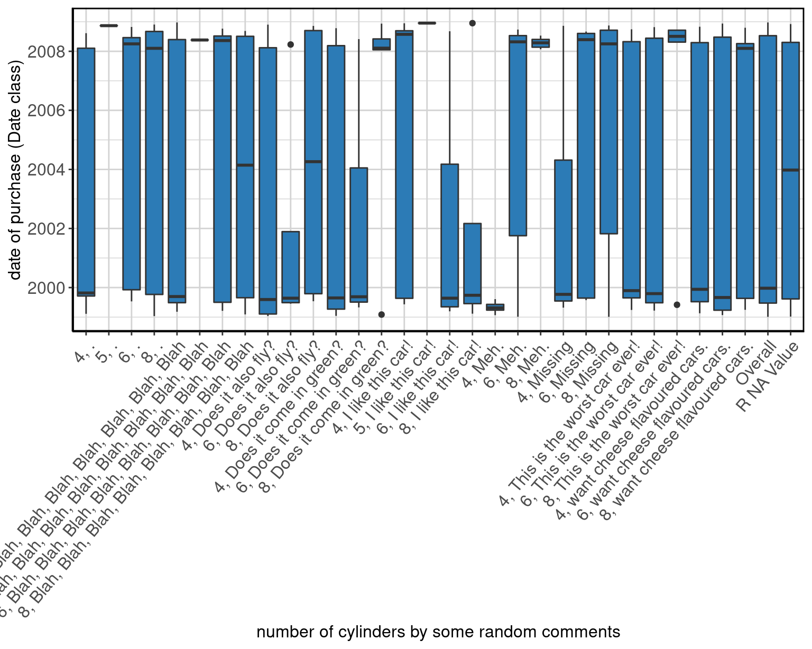
Generate a knitr friendly summary table
make_kable_output(dpByCylByCommentsSummaryExample)| number of cylinders by some random comments | Label | N | P NA | Mean | S Dev | Med | MAD | 25th P | 75th P | IQR | Min | Max |
|---|---|---|---|---|---|---|---|---|---|---|---|---|
| 4, . | date of purchase | 4 | 20.00 | 2001-08-28 | 221.30 weeks | 1999-09-13 | 28.06 weeks | 1999-03-24 | 1999-12-14 | 134.11 weeks | 1999-03-24 | 2008-01-02 |
| 6, . | date of purchase | 8 | 20.00 | 2000-07-25 | 173.02 weeks | 1999-06-25 | 20.44 weeks | 1999-01-07 | 1999-08-28 | 24.29 weeks | 1999-01-05 | 2008-09-28 |
| 8, . | date of purchase | 8 | 0.00 | 2005-12-01 | 221.00 weeks | 2008-01-23 | 11.44 weeks | 1999-02-03 | 2008-02-09 | 123.82 weeks | 1999-01-13 | 2008-08-25 |
| 4, Blah, Blah, Blah, Blah, Blah, Blah, Blah, Blah | date of purchase | 4 | 0.00 | 2001-08-20 | 243.01 weeks | 1999-05-26 | 18.85 weeks | 1999-02-17 | 1999-08-14 | 140.75 weeks | 1999-02-17 | 2008-08-12 |
| 6, Blah, Blah, Blah, Blah, Blah, Blah, Blah, Blah | date of purchase | 6 | 14.29 | 2007-03-06 | 191.49 weeks | 2008-08-20 | 9.21 weeks | 2008-06-18 | 2008-09-13 | 10.46 weeks | 1999-09-11 | 2008-12-09 |
| 8, Blah, Blah, Blah, Blah, Blah, Blah, Blah, Blah | date of purchase | 4 | 0.00 | 2008-10-05 | 9.45 weeks | 2008-10-23 | 5.61 weeks | 2008-07-04 | 2008-11-05 | 8.11 weeks | 2008-07-04 | 2008-12-03 |
| 4, Does it also fly? | date of purchase | 6 | 14.29 | 2005-04-28 | 239.96 weeks | 2008-02-16 | 25.31 weeks | 1999-06-03 | 2008-03-06 | 343.32 weeks | 1999-05-16 | 2008-09-23 |
| 5, Does it also fly? | date of purchase | 1 | 0.00 | 2008-11-13 | NA weeks | 2008-11-13 | 0.00 weeks | 2008-11-13 | 2008-11-13 | 0.00 weeks | 2008-11-13 | 2008-11-13 |
| 6, Does it also fly? | date of purchase | 13 | 0.00 | 2004-05-02 | 242.35 weeks | 2008-03-25 | 45.54 weeks | 1999-06-27 | 2008-06-07 | 466.86 weeks | 1999-05-01 | 2008-10-26 |
| 8, Does it also fly? | date of purchase | 7 | 0.00 | 2004-07-03 | 247.38 weeks | 2008-01-16 | 46.38 weeks | 1999-07-16 | 2008-06-02 | 448.14 weeks | 1999-01-04 | 2008-08-22 |
| 4, Does it come in green? | date of purchase | 10 | 9.09 | 2002-01-19 | 225.00 weeks | 1999-07-10 | 22.77 weeks | 1999-04-04 | 2008-02-26 | 354.21 weeks | 1999-01-16 | 2008-05-15 |
| 6, Does it come in green? | date of purchase | 3 | 25.00 | 2005-07-11 | 277.35 weeks | 2008-06-13 | 22.24 weeks | 1999-05-23 | 2008-09-26 | 243.86 weeks | 1999-05-23 | 2008-09-26 |
| 8, Does it come in green? | date of purchase | 5 | 0.00 | 2004-10-17 | 265.43 weeks | 2008-04-15 | 39.39 weeks | 1999-03-31 | 2008-06-08 | 479.57 weeks | 1999-03-17 | 2008-10-18 |
| 4, I like this car! | date of purchase | 15 | 0.00 | 2001-05-17 | 195.60 weeks | 1999-10-09 | 14.40 weeks | 1999-03-30 | 1999-12-06 | 26.07 weeks | 1999-02-08 | 2008-09-07 |
| 6, I like this car! | date of purchase | 11 | 8.33 | 2003-09-03 | 245.49 weeks | 1999-10-29 | 48.71 weeks | 1999-08-31 | 2008-07-12 | 460.64 weeks | 1999-03-13 | 2008-10-15 |
| 8, I like this car! | date of purchase | 9 | 0.00 | 2003-06-16 | 241.59 weeks | 1999-10-04 | 30.08 weeks | 1999-07-28 | 2008-02-23 | 447.43 weeks | 1999-05-15 | 2008-11-15 |
| 4, Meh. | date of purchase | 7 | 0.00 | 2004-11-04 | 256.62 weeks | 2008-06-09 | 41.72 weeks | 1999-08-26 | 2008-12-10 | 479.64 weeks | 1999-06-08 | 2008-12-23 |
| 5, Meh. | date of purchase | 1 | 0.00 | 2008-12-15 | NA weeks | 2008-12-15 | 0.00 weeks | 2008-12-15 | 2008-12-15 | 0.00 weeks | 2008-12-15 | 2008-12-15 |
| 6, Meh. | date of purchase | 7 | 0.00 | 2000-11-23 | 171.54 weeks | 1999-08-17 | 24.36 weeks | 1999-07-30 | 1999-12-24 | 19.07 weeks | 1999-03-19 | 2008-04-30 |
| 8, Meh. | date of purchase | 4 | 20.00 | 2001-10-17 | 232.23 weeks | 1999-11-01 | 32.72 weeks | 1999-01-23 | 1999-11-28 | 128.21 weeks | 1999-01-23 | 2008-06-12 |
| 4, Missing | date of purchase | 9 | 18.18 | 2005-08-25 | 237.49 weeks | 2008-07-17 | 22.45 weeks | 1999-12-15 | 2008-10-12 | 460.57 weeks | 1999-04-28 | 2008-12-12 |
| 5, Missing | date of purchase | 1 | 50.00 | 2008-05-20 | NA weeks | 2008-05-20 | 0.00 weeks | 2008-05-20 | 2008-05-20 | 0.00 weeks | 2008-05-20 | 2008-05-20 |
| 6, Missing | date of purchase | 6 | 14.29 | 2000-11-16 | 193.17 weeks | 1999-05-26 | 20.97 weeks | 1999-03-10 | 1999-10-18 | 28.46 weeks | 1999-01-26 | 2008-05-31 |
| 8, Missing | date of purchase | 4 | 20.00 | 2006-07-29 | 234.19 weeks | 2008-10-10 | 8.37 weeks | 1999-11-05 | 2008-11-10 | 124.86 weeks | 1999-11-05 | 2008-11-27 |
| 4, This is the worst car ever! | date of purchase | 7 | 0.00 | 2003-03-04 | 256.43 weeks | 1999-06-23 | 33.89 weeks | 1999-03-18 | 2008-03-24 | 467.21 weeks | 1999-01-14 | 2008-11-26 |
| 6, This is the worst car ever! | date of purchase | 6 | 14.29 | 2007-02-08 | 192.67 weeks | 2008-07-24 | 8.68 weeks | 2008-06-11 | 2008-09-01 | 9.39 weeks | 1999-07-29 | 2008-10-28 |
| 8, This is the worst car ever! | date of purchase | 10 | 0.00 | 2005-10-30 | 233.50 weeks | 2008-07-15 | 22.98 weeks | 1999-11-17 | 2008-09-18 | 353.86 weeks | 1999-02-01 | 2008-12-14 |
| 4, want cheese flavoured cars. | date of purchase | 5 | 28.57 | 2002-12-23 | 262.84 weeks | 1999-07-18 | 33.46 weeks | 1999-04-08 | 2008-02-10 | 461.43 weeks | 1999-02-10 | 2008-11-11 |
| 6, want cheese flavoured cars. | date of purchase | 5 | 0.00 | 2003-03-12 | 241.93 weeks | 1999-12-16 | 24.36 weeks | 1999-10-30 | 2008-04-02 | 439.57 weeks | 1999-08-23 | 2008-04-16 |
| 8, want cheese flavoured cars. | date of purchase | 10 | 16.67 | 2005-11-23 | 225.75 weeks | 2008-06-10 | 33.36 weeks | 1999-10-21 | 2008-09-21 | 356.50 weeks | 1999-06-02 | 2008-12-08 |
| Overall | date of purchase | 213 | 8.58 | 2003-12-21 | 236.59 weeks | 1999-12-24 | 74.98 weeks | 1999-06-23 | 2008-07-12 | 472.43 weeks | 1999-01-04 | 2008-12-23 |
| R NA Value | date of purchase | 17 | 5.56 | 2003-07-25 | 240.13 weeks | 1999-09-12 | 48.71 weeks | 1999-04-12 | 2008-02-11 | 461.00 weeks | 1999-01-25 | 2008-09-29 |
Generate knitr friendly output
make_complete_output(dpByCylByCommentsSummaryExample)| number of cylinders by some random comments | Label | N | P NA | Mean | S Dev | Med | MAD | 25th P | 75th P | IQR | Min | Max |
|---|---|---|---|---|---|---|---|---|---|---|---|---|
| 4, . | date of purchase | 4 | 20.00 | 2001-08-28 | 221.30 weeks | 1999-09-13 | 28.06 weeks | 1999-03-24 | 1999-12-14 | 134.11 weeks | 1999-03-24 | 2008-01-02 |
| 6, . | date of purchase | 8 | 20.00 | 2000-07-25 | 173.02 weeks | 1999-06-25 | 20.44 weeks | 1999-01-07 | 1999-08-28 | 24.29 weeks | 1999-01-05 | 2008-09-28 |
| 8, . | date of purchase | 8 | 0.00 | 2005-12-01 | 221.00 weeks | 2008-01-23 | 11.44 weeks | 1999-02-03 | 2008-02-09 | 123.82 weeks | 1999-01-13 | 2008-08-25 |
| 4, Blah, Blah, Blah, Blah, Blah, Blah, Blah, Blah | date of purchase | 4 | 0.00 | 2001-08-20 | 243.01 weeks | 1999-05-26 | 18.85 weeks | 1999-02-17 | 1999-08-14 | 140.75 weeks | 1999-02-17 | 2008-08-12 |
| 6, Blah, Blah, Blah, Blah, Blah, Blah, Blah, Blah | date of purchase | 6 | 14.29 | 2007-03-06 | 191.49 weeks | 2008-08-20 | 9.21 weeks | 2008-06-18 | 2008-09-13 | 10.46 weeks | 1999-09-11 | 2008-12-09 |
| 8, Blah, Blah, Blah, Blah, Blah, Blah, Blah, Blah | date of purchase | 4 | 0.00 | 2008-10-05 | 9.45 weeks | 2008-10-23 | 5.61 weeks | 2008-07-04 | 2008-11-05 | 8.11 weeks | 2008-07-04 | 2008-12-03 |
| 4, Does it also fly? | date of purchase | 6 | 14.29 | 2005-04-28 | 239.96 weeks | 2008-02-16 | 25.31 weeks | 1999-06-03 | 2008-03-06 | 343.32 weeks | 1999-05-16 | 2008-09-23 |
| 5, Does it also fly? | date of purchase | 1 | 0.00 | 2008-11-13 | NA weeks | 2008-11-13 | 0.00 weeks | 2008-11-13 | 2008-11-13 | 0.00 weeks | 2008-11-13 | 2008-11-13 |
| 6, Does it also fly? | date of purchase | 13 | 0.00 | 2004-05-02 | 242.35 weeks | 2008-03-25 | 45.54 weeks | 1999-06-27 | 2008-06-07 | 466.86 weeks | 1999-05-01 | 2008-10-26 |
| 8, Does it also fly? | date of purchase | 7 | 0.00 | 2004-07-03 | 247.38 weeks | 2008-01-16 | 46.38 weeks | 1999-07-16 | 2008-06-02 | 448.14 weeks | 1999-01-04 | 2008-08-22 |
| 4, Does it come in green? | date of purchase | 10 | 9.09 | 2002-01-19 | 225.00 weeks | 1999-07-10 | 22.77 weeks | 1999-04-04 | 2008-02-26 | 354.21 weeks | 1999-01-16 | 2008-05-15 |
| 6, Does it come in green? | date of purchase | 3 | 25.00 | 2005-07-11 | 277.35 weeks | 2008-06-13 | 22.24 weeks | 1999-05-23 | 2008-09-26 | 243.86 weeks | 1999-05-23 | 2008-09-26 |
| 8, Does it come in green? | date of purchase | 5 | 0.00 | 2004-10-17 | 265.43 weeks | 2008-04-15 | 39.39 weeks | 1999-03-31 | 2008-06-08 | 479.57 weeks | 1999-03-17 | 2008-10-18 |
| 4, I like this car! | date of purchase | 15 | 0.00 | 2001-05-17 | 195.60 weeks | 1999-10-09 | 14.40 weeks | 1999-03-30 | 1999-12-06 | 26.07 weeks | 1999-02-08 | 2008-09-07 |
| 6, I like this car! | date of purchase | 11 | 8.33 | 2003-09-03 | 245.49 weeks | 1999-10-29 | 48.71 weeks | 1999-08-31 | 2008-07-12 | 460.64 weeks | 1999-03-13 | 2008-10-15 |
| 8, I like this car! | date of purchase | 9 | 0.00 | 2003-06-16 | 241.59 weeks | 1999-10-04 | 30.08 weeks | 1999-07-28 | 2008-02-23 | 447.43 weeks | 1999-05-15 | 2008-11-15 |
| 4, Meh. | date of purchase | 7 | 0.00 | 2004-11-04 | 256.62 weeks | 2008-06-09 | 41.72 weeks | 1999-08-26 | 2008-12-10 | 479.64 weeks | 1999-06-08 | 2008-12-23 |
| 5, Meh. | date of purchase | 1 | 0.00 | 2008-12-15 | NA weeks | 2008-12-15 | 0.00 weeks | 2008-12-15 | 2008-12-15 | 0.00 weeks | 2008-12-15 | 2008-12-15 |
| 6, Meh. | date of purchase | 7 | 0.00 | 2000-11-23 | 171.54 weeks | 1999-08-17 | 24.36 weeks | 1999-07-30 | 1999-12-24 | 19.07 weeks | 1999-03-19 | 2008-04-30 |
| 8, Meh. | date of purchase | 4 | 20.00 | 2001-10-17 | 232.23 weeks | 1999-11-01 | 32.72 weeks | 1999-01-23 | 1999-11-28 | 128.21 weeks | 1999-01-23 | 2008-06-12 |
| 4, Missing | date of purchase | 9 | 18.18 | 2005-08-25 | 237.49 weeks | 2008-07-17 | 22.45 weeks | 1999-12-15 | 2008-10-12 | 460.57 weeks | 1999-04-28 | 2008-12-12 |
| 5, Missing | date of purchase | 1 | 50.00 | 2008-05-20 | NA weeks | 2008-05-20 | 0.00 weeks | 2008-05-20 | 2008-05-20 | 0.00 weeks | 2008-05-20 | 2008-05-20 |
| 6, Missing | date of purchase | 6 | 14.29 | 2000-11-16 | 193.17 weeks | 1999-05-26 | 20.97 weeks | 1999-03-10 | 1999-10-18 | 28.46 weeks | 1999-01-26 | 2008-05-31 |
| 8, Missing | date of purchase | 4 | 20.00 | 2006-07-29 | 234.19 weeks | 2008-10-10 | 8.37 weeks | 1999-11-05 | 2008-11-10 | 124.86 weeks | 1999-11-05 | 2008-11-27 |
| 4, This is the worst car ever! | date of purchase | 7 | 0.00 | 2003-03-04 | 256.43 weeks | 1999-06-23 | 33.89 weeks | 1999-03-18 | 2008-03-24 | 467.21 weeks | 1999-01-14 | 2008-11-26 |
| 6, This is the worst car ever! | date of purchase | 6 | 14.29 | 2007-02-08 | 192.67 weeks | 2008-07-24 | 8.68 weeks | 2008-06-11 | 2008-09-01 | 9.39 weeks | 1999-07-29 | 2008-10-28 |
| 8, This is the worst car ever! | date of purchase | 10 | 0.00 | 2005-10-30 | 233.50 weeks | 2008-07-15 | 22.98 weeks | 1999-11-17 | 2008-09-18 | 353.86 weeks | 1999-02-01 | 2008-12-14 |
| 4, want cheese flavoured cars. | date of purchase | 5 | 28.57 | 2002-12-23 | 262.84 weeks | 1999-07-18 | 33.46 weeks | 1999-04-08 | 2008-02-10 | 461.43 weeks | 1999-02-10 | 2008-11-11 |
| 6, want cheese flavoured cars. | date of purchase | 5 | 0.00 | 2003-03-12 | 241.93 weeks | 1999-12-16 | 24.36 weeks | 1999-10-30 | 2008-04-02 | 439.57 weeks | 1999-08-23 | 2008-04-16 |
| 8, want cheese flavoured cars. | date of purchase | 10 | 16.67 | 2005-11-23 | 225.75 weeks | 2008-06-10 | 33.36 weeks | 1999-10-21 | 2008-09-21 | 356.50 weeks | 1999-06-02 | 2008-12-08 |
| Overall | date of purchase | 213 | 8.58 | 2003-12-21 | 236.59 weeks | 1999-12-24 | 74.98 weeks | 1999-06-23 | 2008-07-12 | 472.43 weeks | 1999-01-04 | 2008-12-23 |
| R NA Value | date of purchase | 17 | 5.56 | 2003-07-25 | 240.13 weeks | 1999-09-12 | 48.71 weeks | 1999-04-12 | 2008-02-11 | 461.00 weeks | 1999-01-25 | 2008-09-29 |

Figure 9: Stacked barplot of date of purchase by number of cylinders by some random comments.
Difftime
For a difftime variable x, we need to specify x, the data, and difftime_units.
rdifftimeSummaryExample <- data_summary(x = "rdifftime", data = mpg, difftime_units = "weeks")Show method to output table and plot
show(rdifftimeSummaryExample)##
## 1
## Label
## 1 some random numbers that are generated from a normal distrubtion with mean = 10 and sd = 5, and then converted to weeks
## N P NA Mean S Dev Med MAD 25th P 75th P
## 1 184 21.37 9.89 weeks 4.43 weeks 9.84 weeks 4.32 weeks 6.96 weeks 12.79 weeks
## IQR Min Max
## 1 5.79 weeks 0 weeks 25.29 weeks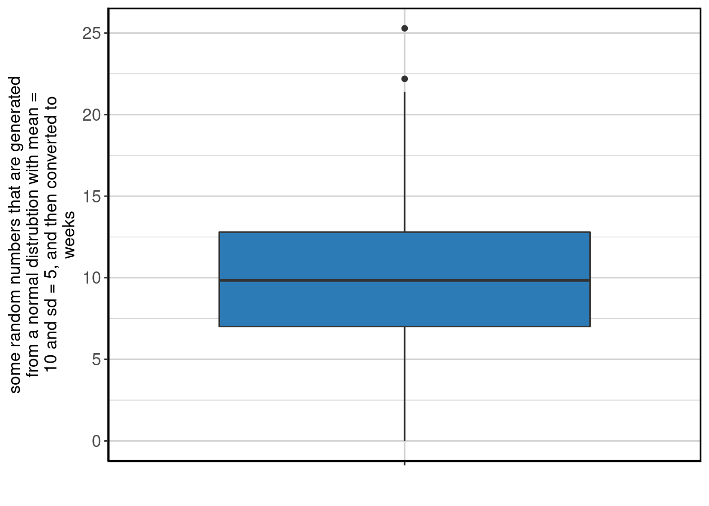
Output the summary table
data_summary_table(rdifftimeSummaryExample)##
## 1
## Label
## 1 some random numbers that are generated from a normal distrubtion with mean = 10 and sd = 5, and then converted to weeks
## N P NA Mean S Dev Med MAD 25th P 75th P
## 1 184 21.37 9.89 weeks 4.43 weeks 9.84 weeks 4.32 weeks 6.96 weeks 12.79 weeks
## IQR Min Max
## 1 5.79 weeks 0 weeks 25.29 weeksOutput the plot
data_summary_plot(rdifftimeSummaryExample)
Generate knitr friendly summary table
make_kable_output(rdifftimeSummaryExample)| Label | N | P NA | Mean | S Dev | Med | MAD | 25th P | 75th P | IQR | Min | Max | |
|---|---|---|---|---|---|---|---|---|---|---|---|---|
| some random numbers that are generated from a normal distrubtion with mean = 10 and sd = 5, and then converted to weeks | 184 | 21.37 | 9.89 weeks | 4.43 weeks | 9.84 weeks | 4.32 weeks | 6.96 weeks | 12.79 weeks | 5.79 weeks | 0 weeks | 25.29 weeks |
Generate knitr friendly output
make_complete_output(rdifftimeSummaryExample)| Label | N | P NA | Mean | S Dev | Med | MAD | 25th P | 75th P | IQR | Min | Max | |
|---|---|---|---|---|---|---|---|---|---|---|---|---|
| some random numbers that are generated from a normal distrubtion with mean = 10 and sd = 5, and then converted to weeks | 184 | 21.37 | 9.89 weeks | 4.43 weeks | 9.84 weeks | 4.32 weeks | 6.96 weeks | 12.79 weeks | 5.79 weeks | 0 weeks | 25.29 weeks |

Figure 10: Stacked barplot of some random numbers that are generated from a normal distrubtion with mean = 10 and sd = 5, and then converted to weeks.
Difftime By
For a date variable with by, we need to specify x, a by variable, the data, and difftime_units.
rdifftimeByDrvSummaryExample <- data_summary(x = "rdifftime", by = "drv", data = mpg, difftime_units = "weeks")Show method to output table and plot
show(rdifftimeByDrvSummaryExample)## drive type
## 1 front-wheel drive
## 2 rear wheel drive
## 3 4wd
## 4 Overall
## Label
## 1 some random numbers that are generated from a normal distrubtion with mean = 10 and sd = 5, and then converted to weeks
## 2 some random numbers that are generated from a normal distrubtion with mean = 10 and sd = 5, and then converted to weeks
## 3 some random numbers that are generated from a normal distrubtion with mean = 10 and sd = 5, and then converted to weeks
## 4 some random numbers that are generated from a normal distrubtion with mean = 10 and sd = 5, and then converted to weeks
## N P NA Mean S Dev Med MAD 25th P
## 1 84 20.75 9.59 weeks 4.62 weeks 9.35 weeks 3.99 weeks 6.42 weeks
## 2 18 28.00 9.14 weeks 3.81 weeks 8.80 weeks 4.40 weeks 5.71 weeks
## 3 82 20.39 10.36 weeks 4.35 weeks 10.41 weeks 3.87 weeks 7.67 weeks
## 4 184 21.37 9.89 weeks 4.43 weeks 9.84 weeks 4.32 weeks 6.96 weeks
## 75th P IQR Min Max
## 1 11.44 weeks 5.00 weeks 0.09 weeks 25.29 weeks
## 2 11.65 weeks 5.54 weeks 3.86 weeks 17.68 weeks
## 3 13.02 weeks 5.27 weeks 0.00 weeks 22.19 weeks
## 4 12.79 weeks 5.79 weeks 0.00 weeks 25.29 weeks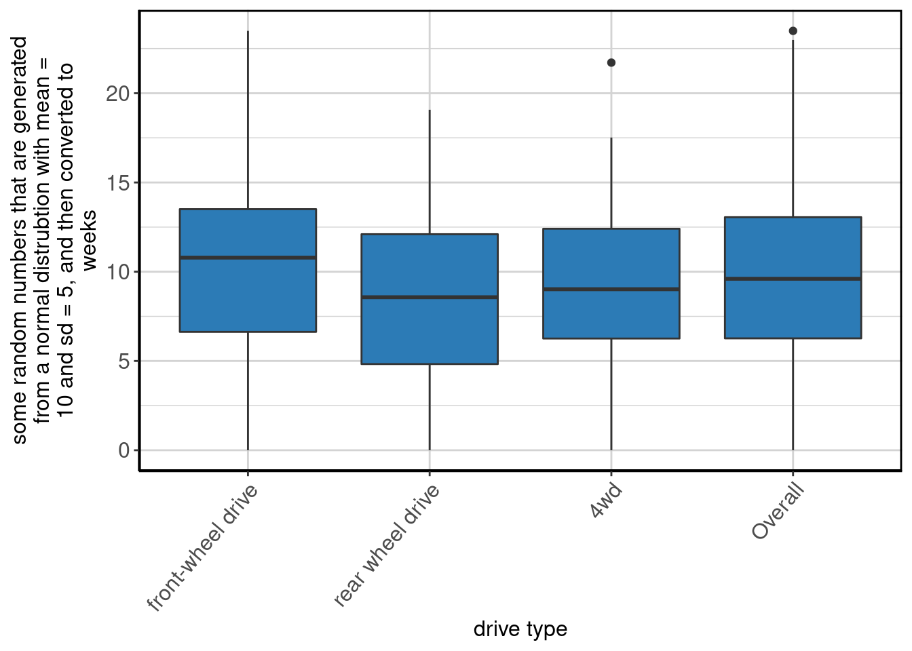
Output the summary table
data_summary_table(rdifftimeByDrvSummaryExample)## drive type
## 1 front-wheel drive
## 2 rear wheel drive
## 3 4wd
## 4 Overall
## Label
## 1 some random numbers that are generated from a normal distrubtion with mean = 10 and sd = 5, and then converted to weeks
## 2 some random numbers that are generated from a normal distrubtion with mean = 10 and sd = 5, and then converted to weeks
## 3 some random numbers that are generated from a normal distrubtion with mean = 10 and sd = 5, and then converted to weeks
## 4 some random numbers that are generated from a normal distrubtion with mean = 10 and sd = 5, and then converted to weeks
## N P NA Mean S Dev Med MAD 25th P
## 1 84 20.75 9.59 weeks 4.62 weeks 9.35 weeks 3.99 weeks 6.42 weeks
## 2 18 28.00 9.14 weeks 3.81 weeks 8.80 weeks 4.40 weeks 5.71 weeks
## 3 82 20.39 10.36 weeks 4.35 weeks 10.41 weeks 3.87 weeks 7.67 weeks
## 4 184 21.37 9.89 weeks 4.43 weeks 9.84 weeks 4.32 weeks 6.96 weeks
## 75th P IQR Min Max
## 1 11.44 weeks 5.00 weeks 0.09 weeks 25.29 weeks
## 2 11.65 weeks 5.54 weeks 3.86 weeks 17.68 weeks
## 3 13.02 weeks 5.27 weeks 0.00 weeks 22.19 weeks
## 4 12.79 weeks 5.79 weeks 0.00 weeks 25.29 weeksOutput the plot
data_summary_plot(rdifftimeByDrvSummaryExample)
Generate a knitr friendly summary table
make_kable_output(rdifftimeByDrvSummaryExample)| drive type | Label | N | P NA | Mean | S Dev | Med | MAD | 25th P | 75th P | IQR | Min | Max |
|---|---|---|---|---|---|---|---|---|---|---|---|---|
| front-wheel drive | some random numbers that are generated from a normal distrubtion with mean = 10 and sd = 5, and then converted to weeks | 84 | 20.75 | 9.59 weeks | 4.62 weeks | 9.35 weeks | 3.99 weeks | 6.42 weeks | 11.44 weeks | 5.00 weeks | 0.09 weeks | 25.29 weeks |
| rear wheel drive | some random numbers that are generated from a normal distrubtion with mean = 10 and sd = 5, and then converted to weeks | 18 | 28.00 | 9.14 weeks | 3.81 weeks | 8.80 weeks | 4.40 weeks | 5.71 weeks | 11.65 weeks | 5.54 weeks | 3.86 weeks | 17.68 weeks |
| 4wd | some random numbers that are generated from a normal distrubtion with mean = 10 and sd = 5, and then converted to weeks | 82 | 20.39 | 10.36 weeks | 4.35 weeks | 10.41 weeks | 3.87 weeks | 7.67 weeks | 13.02 weeks | 5.27 weeks | 0.00 weeks | 22.19 weeks |
| Overall | some random numbers that are generated from a normal distrubtion with mean = 10 and sd = 5, and then converted to weeks | 184 | 21.37 | 9.89 weeks | 4.43 weeks | 9.84 weeks | 4.32 weeks | 6.96 weeks | 12.79 weeks | 5.79 weeks | 0.00 weeks | 25.29 weeks |
Generate knitr friendly output
make_complete_output(rdifftimeByDrvSummaryExample)| drive type | Label | N | P NA | Mean | S Dev | Med | MAD | 25th P | 75th P | IQR | Min | Max |
|---|---|---|---|---|---|---|---|---|---|---|---|---|
| front-wheel drive | some random numbers that are generated from a normal distrubtion with mean = 10 and sd = 5, and then converted to weeks | 84 | 20.75 | 9.59 weeks | 4.62 weeks | 9.35 weeks | 3.99 weeks | 6.42 weeks | 11.44 weeks | 5.00 weeks | 0.09 weeks | 25.29 weeks |
| rear wheel drive | some random numbers that are generated from a normal distrubtion with mean = 10 and sd = 5, and then converted to weeks | 18 | 28.00 | 9.14 weeks | 3.81 weeks | 8.80 weeks | 4.40 weeks | 5.71 weeks | 11.65 weeks | 5.54 weeks | 3.86 weeks | 17.68 weeks |
| 4wd | some random numbers that are generated from a normal distrubtion with mean = 10 and sd = 5, and then converted to weeks | 82 | 20.39 | 10.36 weeks | 4.35 weeks | 10.41 weeks | 3.87 weeks | 7.67 weeks | 13.02 weeks | 5.27 weeks | 0.00 weeks | 22.19 weeks |
| Overall | some random numbers that are generated from a normal distrubtion with mean = 10 and sd = 5, and then converted to weeks | 184 | 21.37 | 9.89 weeks | 4.43 weeks | 9.84 weeks | 4.32 weeks | 6.96 weeks | 12.79 weeks | 5.79 weeks | 0.00 weeks | 25.29 weeks |

Figure 11: Stacked barplot of some random numbers that are generated from a normal distrubtion with mean = 10 and sd = 5, and then converted to weeks by drive type.
Difftime By By
For a date variable with two or more by variables, we need to specify x, the by variables as a character string, the data, and difftime_units.
rdifftimeByDrvBypartySummaryExample <- data_summary(x = "rdifftime", by = c("drv", "party"), data = mpg, difftime_units = "weeks")Show method to output table and plot
show(rdifftimeByDrvBypartySummaryExample)## drive type by some random political parties
## 1 front-wheel drive, republican
## 2 rear wheel drive, republican
## 3 4wd, republican
## 4 front-wheel drive, democrat
## 5 rear wheel drive, democrat
## 6 4wd, democrat
## 7 front-wheel drive, independent
## 8 rear wheel drive, independent
## 9 4wd, independent
## 10 Overall
## 11 R NA Value
## Label
## 1 some random numbers that are generated from a normal distrubtion with mean = 10 and sd = 5, and then converted to weeks
## 2 some random numbers that are generated from a normal distrubtion with mean = 10 and sd = 5, and then converted to weeks
## 3 some random numbers that are generated from a normal distrubtion with mean = 10 and sd = 5, and then converted to weeks
## 4 some random numbers that are generated from a normal distrubtion with mean = 10 and sd = 5, and then converted to weeks
## 5 some random numbers that are generated from a normal distrubtion with mean = 10 and sd = 5, and then converted to weeks
## 6 some random numbers that are generated from a normal distrubtion with mean = 10 and sd = 5, and then converted to weeks
## 7 some random numbers that are generated from a normal distrubtion with mean = 10 and sd = 5, and then converted to weeks
## 8 some random numbers that are generated from a normal distrubtion with mean = 10 and sd = 5, and then converted to weeks
## 9 some random numbers that are generated from a normal distrubtion with mean = 10 and sd = 5, and then converted to weeks
## 10 some random numbers that are generated from a normal distrubtion with mean = 10 and sd = 5, and then converted to weeks
## 11 some random numbers that are generated from a normal distrubtion with mean = 10 and sd = 5, and then converted to weeks
## N P NA Mean S Dev Med MAD 25th P
## 1 19 17.39 9.93 weeks 3.28 weeks 10.69 weeks 4.67 weeks 7.31 weeks
## 2 8 11.11 9.51 weeks 3.38 weeks 9.13 weeks 3.79 weeks 6.54 weeks
## 3 23 17.86 9.21 weeks 4.69 weeks 9.16 weeks 4.99 weeks 5.79 weeks
## 4 22 26.67 11.35 weeks 5.71 weeks 10.57 weeks 5.85 weeks 7.19 weeks
## 5 2 50.00 10.87 weeks 0.01 weeks 10.87 weeks 0.01 weeks 10.86 weeks
## 6 20 23.08 11.32 weeks 4.93 weeks 11.16 weeks 4.06 weeks 8.53 weeks
## 7 24 22.58 8.25 weeks 5.05 weeks 8.16 weeks 4.86 weeks 3.80 weeks
## 8 5 16.67 6.86 weeks 3.48 weeks 5.71 weeks 2.73 weeks 4.05 weeks
## 9 16 20.00 9.94 weeks 4.29 weeks 9.88 weeks 3.34 weeks 7.08 weeks
## 10 184 21.37 9.89 weeks 4.43 weeks 9.84 weeks 4.32 weeks 6.96 weeks
## 11 45 21.05 10.09 weeks 3.55 weeks 9.86 weeks 2.55 weeks 8.17 weeks
## 75th P IQR Min Max
## 1 11.23 weeks 3.89 weeks 5.41 weeks 16.99 weeks
## 2 11.65 weeks 4.62 weeks 4.60 weeks 14.70 weeks
## 3 12.85 weeks 5.63 weeks 0.00 weeks 21.40 weeks
## 4 14.57 weeks 7.35 weeks 2.14 weeks 25.29 weeks
## 5 10.87 weeks 0.01 weeks 10.86 weeks 10.87 weeks
## 6 14.01 weeks 4.87 weeks 1.37 weeks 22.19 weeks
## 7 11.43 weeks 6.73 weeks 0.09 weeks 18.49 weeks
## 8 8.62 weeks 4.57 weeks 3.86 weeks 12.07 weeks
## 9 11.59 weeks 4.03 weeks 0.00 weeks 18.91 weeks
## 10 12.79 weeks 5.79 weeks 0.00 weeks 25.29 weeks
## 11 11.81 weeks 3.64 weeks 1.27 weeks 19.62 weeks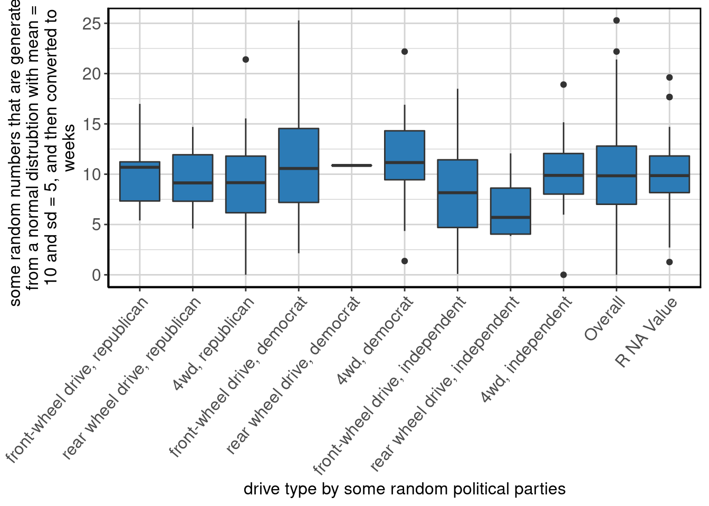
Output the summary table
data_summary_table(rdifftimeByDrvBypartySummaryExample)## drive type by some random political parties
## 1 front-wheel drive, republican
## 2 rear wheel drive, republican
## 3 4wd, republican
## 4 front-wheel drive, democrat
## 5 rear wheel drive, democrat
## 6 4wd, democrat
## 7 front-wheel drive, independent
## 8 rear wheel drive, independent
## 9 4wd, independent
## 10 Overall
## 11 R NA Value
## Label
## 1 some random numbers that are generated from a normal distrubtion with mean = 10 and sd = 5, and then converted to weeks
## 2 some random numbers that are generated from a normal distrubtion with mean = 10 and sd = 5, and then converted to weeks
## 3 some random numbers that are generated from a normal distrubtion with mean = 10 and sd = 5, and then converted to weeks
## 4 some random numbers that are generated from a normal distrubtion with mean = 10 and sd = 5, and then converted to weeks
## 5 some random numbers that are generated from a normal distrubtion with mean = 10 and sd = 5, and then converted to weeks
## 6 some random numbers that are generated from a normal distrubtion with mean = 10 and sd = 5, and then converted to weeks
## 7 some random numbers that are generated from a normal distrubtion with mean = 10 and sd = 5, and then converted to weeks
## 8 some random numbers that are generated from a normal distrubtion with mean = 10 and sd = 5, and then converted to weeks
## 9 some random numbers that are generated from a normal distrubtion with mean = 10 and sd = 5, and then converted to weeks
## 10 some random numbers that are generated from a normal distrubtion with mean = 10 and sd = 5, and then converted to weeks
## 11 some random numbers that are generated from a normal distrubtion with mean = 10 and sd = 5, and then converted to weeks
## N P NA Mean S Dev Med MAD 25th P
## 1 19 17.39 9.93 weeks 3.28 weeks 10.69 weeks 4.67 weeks 7.31 weeks
## 2 8 11.11 9.51 weeks 3.38 weeks 9.13 weeks 3.79 weeks 6.54 weeks
## 3 23 17.86 9.21 weeks 4.69 weeks 9.16 weeks 4.99 weeks 5.79 weeks
## 4 22 26.67 11.35 weeks 5.71 weeks 10.57 weeks 5.85 weeks 7.19 weeks
## 5 2 50.00 10.87 weeks 0.01 weeks 10.87 weeks 0.01 weeks 10.86 weeks
## 6 20 23.08 11.32 weeks 4.93 weeks 11.16 weeks 4.06 weeks 8.53 weeks
## 7 24 22.58 8.25 weeks 5.05 weeks 8.16 weeks 4.86 weeks 3.80 weeks
## 8 5 16.67 6.86 weeks 3.48 weeks 5.71 weeks 2.73 weeks 4.05 weeks
## 9 16 20.00 9.94 weeks 4.29 weeks 9.88 weeks 3.34 weeks 7.08 weeks
## 10 184 21.37 9.89 weeks 4.43 weeks 9.84 weeks 4.32 weeks 6.96 weeks
## 11 45 21.05 10.09 weeks 3.55 weeks 9.86 weeks 2.55 weeks 8.17 weeks
## 75th P IQR Min Max
## 1 11.23 weeks 3.89 weeks 5.41 weeks 16.99 weeks
## 2 11.65 weeks 4.62 weeks 4.60 weeks 14.70 weeks
## 3 12.85 weeks 5.63 weeks 0.00 weeks 21.40 weeks
## 4 14.57 weeks 7.35 weeks 2.14 weeks 25.29 weeks
## 5 10.87 weeks 0.01 weeks 10.86 weeks 10.87 weeks
## 6 14.01 weeks 4.87 weeks 1.37 weeks 22.19 weeks
## 7 11.43 weeks 6.73 weeks 0.09 weeks 18.49 weeks
## 8 8.62 weeks 4.57 weeks 3.86 weeks 12.07 weeks
## 9 11.59 weeks 4.03 weeks 0.00 weeks 18.91 weeks
## 10 12.79 weeks 5.79 weeks 0.00 weeks 25.29 weeks
## 11 11.81 weeks 3.64 weeks 1.27 weeks 19.62 weeksOutput the plot
data_summary_plot(rdifftimeByDrvBypartySummaryExample)
Generate a knitr friendly summary table
make_kable_output(rdifftimeByDrvBypartySummaryExample)| drive type by some random political parties | Label | N | P NA | Mean | S Dev | Med | MAD | 25th P | 75th P | IQR | Min | Max |
|---|---|---|---|---|---|---|---|---|---|---|---|---|
| front-wheel drive, republican | some random numbers that are generated from a normal distrubtion with mean = 10 and sd = 5, and then converted to weeks | 19 | 17.39 | 9.93 weeks | 3.28 weeks | 10.69 weeks | 4.67 weeks | 7.31 weeks | 11.23 weeks | 3.89 weeks | 5.41 weeks | 16.99 weeks |
| rear wheel drive, republican | some random numbers that are generated from a normal distrubtion with mean = 10 and sd = 5, and then converted to weeks | 8 | 11.11 | 9.51 weeks | 3.38 weeks | 9.13 weeks | 3.79 weeks | 6.54 weeks | 11.65 weeks | 4.62 weeks | 4.60 weeks | 14.70 weeks |
| 4wd, republican | some random numbers that are generated from a normal distrubtion with mean = 10 and sd = 5, and then converted to weeks | 23 | 17.86 | 9.21 weeks | 4.69 weeks | 9.16 weeks | 4.99 weeks | 5.79 weeks | 12.85 weeks | 5.63 weeks | 0.00 weeks | 21.40 weeks |
| front-wheel drive, democrat | some random numbers that are generated from a normal distrubtion with mean = 10 and sd = 5, and then converted to weeks | 22 | 26.67 | 11.35 weeks | 5.71 weeks | 10.57 weeks | 5.85 weeks | 7.19 weeks | 14.57 weeks | 7.35 weeks | 2.14 weeks | 25.29 weeks |
| rear wheel drive, democrat | some random numbers that are generated from a normal distrubtion with mean = 10 and sd = 5, and then converted to weeks | 2 | 50.00 | 10.87 weeks | 0.01 weeks | 10.87 weeks | 0.01 weeks | 10.86 weeks | 10.87 weeks | 0.01 weeks | 10.86 weeks | 10.87 weeks |
| 4wd, democrat | some random numbers that are generated from a normal distrubtion with mean = 10 and sd = 5, and then converted to weeks | 20 | 23.08 | 11.32 weeks | 4.93 weeks | 11.16 weeks | 4.06 weeks | 8.53 weeks | 14.01 weeks | 4.87 weeks | 1.37 weeks | 22.19 weeks |
| front-wheel drive, independent | some random numbers that are generated from a normal distrubtion with mean = 10 and sd = 5, and then converted to weeks | 24 | 22.58 | 8.25 weeks | 5.05 weeks | 8.16 weeks | 4.86 weeks | 3.80 weeks | 11.43 weeks | 6.73 weeks | 0.09 weeks | 18.49 weeks |
| rear wheel drive, independent | some random numbers that are generated from a normal distrubtion with mean = 10 and sd = 5, and then converted to weeks | 5 | 16.67 | 6.86 weeks | 3.48 weeks | 5.71 weeks | 2.73 weeks | 4.05 weeks | 8.62 weeks | 4.57 weeks | 3.86 weeks | 12.07 weeks |
| 4wd, independent | some random numbers that are generated from a normal distrubtion with mean = 10 and sd = 5, and then converted to weeks | 16 | 20.00 | 9.94 weeks | 4.29 weeks | 9.88 weeks | 3.34 weeks | 7.08 weeks | 11.59 weeks | 4.03 weeks | 0.00 weeks | 18.91 weeks |
| Overall | some random numbers that are generated from a normal distrubtion with mean = 10 and sd = 5, and then converted to weeks | 184 | 21.37 | 9.89 weeks | 4.43 weeks | 9.84 weeks | 4.32 weeks | 6.96 weeks | 12.79 weeks | 5.79 weeks | 0.00 weeks | 25.29 weeks |
| R NA Value | some random numbers that are generated from a normal distrubtion with mean = 10 and sd = 5, and then converted to weeks | 45 | 21.05 | 10.09 weeks | 3.55 weeks | 9.86 weeks | 2.55 weeks | 8.17 weeks | 11.81 weeks | 3.64 weeks | 1.27 weeks | 19.62 weeks |
Generate knitr friendly output
make_complete_output(rdifftimeByDrvBypartySummaryExample)| drive type by some random political parties | Label | N | P NA | Mean | S Dev | Med | MAD | 25th P | 75th P | IQR | Min | Max |
|---|---|---|---|---|---|---|---|---|---|---|---|---|
| front-wheel drive, republican | some random numbers that are generated from a normal distrubtion with mean = 10 and sd = 5, and then converted to weeks | 19 | 17.39 | 9.93 weeks | 3.28 weeks | 10.69 weeks | 4.67 weeks | 7.31 weeks | 11.23 weeks | 3.89 weeks | 5.41 weeks | 16.99 weeks |
| rear wheel drive, republican | some random numbers that are generated from a normal distrubtion with mean = 10 and sd = 5, and then converted to weeks | 8 | 11.11 | 9.51 weeks | 3.38 weeks | 9.13 weeks | 3.79 weeks | 6.54 weeks | 11.65 weeks | 4.62 weeks | 4.60 weeks | 14.70 weeks |
| 4wd, republican | some random numbers that are generated from a normal distrubtion with mean = 10 and sd = 5, and then converted to weeks | 23 | 17.86 | 9.21 weeks | 4.69 weeks | 9.16 weeks | 4.99 weeks | 5.79 weeks | 12.85 weeks | 5.63 weeks | 0.00 weeks | 21.40 weeks |
| front-wheel drive, democrat | some random numbers that are generated from a normal distrubtion with mean = 10 and sd = 5, and then converted to weeks | 22 | 26.67 | 11.35 weeks | 5.71 weeks | 10.57 weeks | 5.85 weeks | 7.19 weeks | 14.57 weeks | 7.35 weeks | 2.14 weeks | 25.29 weeks |
| rear wheel drive, democrat | some random numbers that are generated from a normal distrubtion with mean = 10 and sd = 5, and then converted to weeks | 2 | 50.00 | 10.87 weeks | 0.01 weeks | 10.87 weeks | 0.01 weeks | 10.86 weeks | 10.87 weeks | 0.01 weeks | 10.86 weeks | 10.87 weeks |
| 4wd, democrat | some random numbers that are generated from a normal distrubtion with mean = 10 and sd = 5, and then converted to weeks | 20 | 23.08 | 11.32 weeks | 4.93 weeks | 11.16 weeks | 4.06 weeks | 8.53 weeks | 14.01 weeks | 4.87 weeks | 1.37 weeks | 22.19 weeks |
| front-wheel drive, independent | some random numbers that are generated from a normal distrubtion with mean = 10 and sd = 5, and then converted to weeks | 24 | 22.58 | 8.25 weeks | 5.05 weeks | 8.16 weeks | 4.86 weeks | 3.80 weeks | 11.43 weeks | 6.73 weeks | 0.09 weeks | 18.49 weeks |
| rear wheel drive, independent | some random numbers that are generated from a normal distrubtion with mean = 10 and sd = 5, and then converted to weeks | 5 | 16.67 | 6.86 weeks | 3.48 weeks | 5.71 weeks | 2.73 weeks | 4.05 weeks | 8.62 weeks | 4.57 weeks | 3.86 weeks | 12.07 weeks |
| 4wd, independent | some random numbers that are generated from a normal distrubtion with mean = 10 and sd = 5, and then converted to weeks | 16 | 20.00 | 9.94 weeks | 4.29 weeks | 9.88 weeks | 3.34 weeks | 7.08 weeks | 11.59 weeks | 4.03 weeks | 0.00 weeks | 18.91 weeks |
| Overall | some random numbers that are generated from a normal distrubtion with mean = 10 and sd = 5, and then converted to weeks | 184 | 21.37 | 9.89 weeks | 4.43 weeks | 9.84 weeks | 4.32 weeks | 6.96 weeks | 12.79 weeks | 5.79 weeks | 0.00 weeks | 25.29 weeks |
| R NA Value | some random numbers that are generated from a normal distrubtion with mean = 10 and sd = 5, and then converted to weeks | 45 | 21.05 | 10.09 weeks | 3.55 weeks | 9.86 weeks | 2.55 weeks | 8.17 weeks | 11.81 weeks | 3.64 weeks | 1.27 weeks | 19.62 weeks |
Figure 12: Stacked barplot of some random numbers that are generated from a normal distrubtion with mean = 10 and sd = 5, and then converted to weeks by drive type by some random political parties.
Data Summaries
Manufacturer
The results are in table 26 and figure 13.
manuSummary <- data_summary(x = "manu", data = mpg)
make_complete_output(manuSummary)| manufacturer | n (%) |
|---|---|
| audi | 18 (7.69%) |
| chevrolet | 19 (8.12%) |
| dodge | 37 (15.81%) |
| ford | 25 (10.68%) |
| honda | 9 (3.85%) |
| hyundai | 14 (5.98%) |
| jeep | 8 (3.42%) |
| land rover | 4 (1.71%) |
| lincoln | 3 (1.28%) |
| mercury | 4 (1.71%) |
| nissan | 13 (5.56%) |
| pontiac | 5 (2.14%) |
| subaru | 14 (5.98%) |
| toyota | 34 (14.53%) |
| volkswagen | 27 (11.54%) |
Figure 13: Stacked barplot of manufacturer.
Model Name
The results are in table 27 and figure 14.
modelSummary <- data_summary(x = "model", data = mpg)
make_complete_output(modelSummary)| model name | n (%) |
|---|---|
| 4runner 4wd | 6 (2.56%) |
| a4 | 7 (2.99%) |
| a4 quattro | 8 (3.42%) |
| a6 quattro | 3 (1.28%) |
| altima | 6 (2.56%) |
| c1500 suburban 2wd | 5 (2.14%) |
| camry | 7 (2.99%) |
| camry solara | 7 (2.99%) |
| caravan 2wd | 11 (4.7%) |
| civic | 9 (3.85%) |
| corolla | 5 (2.14%) |
| corvette | 5 (2.14%) |
| dakota pickup 4wd | 9 (3.85%) |
| durango 4wd | 7 (2.99%) |
| expedition 2wd | 3 (1.28%) |
| explorer 4wd | 6 (2.56%) |
| f150 pickup 4wd | 7 (2.99%) |
| forester awd | 6 (2.56%) |
| grand cherokee 4wd | 8 (3.42%) |
| grand prix | 5 (2.14%) |
| gti | 5 (2.14%) |
| impreza awd | 8 (3.42%) |
| jetta | 9 (3.85%) |
| k1500 tahoe 4wd | 4 (1.71%) |
| land cruiser wagon 4wd | 2 (0.85%) |
| malibu | 5 (2.14%) |
| maxima | 3 (1.28%) |
| mountaineer 4wd | 4 (1.71%) |
| mustang | 9 (3.85%) |
| navigator 2wd | 3 (1.28%) |
| new beetle | 6 (2.56%) |
| passat | 7 (2.99%) |
| pathfinder 4wd | 4 (1.71%) |
| ram 1500 pickup 4wd | 10 (4.27%) |
| range rover | 4 (1.71%) |
| sonata | 7 (2.99%) |
| tiburon | 7 (2.99%) |
| toyota tacoma 4wd | 7 (2.99%) |
Figure 14: Stacked barplot of model name.
Engine Displacement (Litres)
The results are in table 28 and figure 15.
displSummary <- data_summary(x = "displ", data = mpg)
make_complete_output(displSummary)| Label | N | P NA | Mean | S Dev | Med | MAD | 25th P | 75th P | IQR | Min | Max | |
|---|---|---|---|---|---|---|---|---|---|---|---|---|
| engine displacement, in litres | 234 | 0 | 3.47 | 1.29 | 3.3 | 1.33 | 2.4 | 4.6 | 2.2 | 1.6 | 7 |
Figure 15: Boxplot of engine displacement, in litres.
Year of Manufacture
The results are in table 29 and figure 16.
yearSummary <- data_summary(x = "year", data = mpg)
make_complete_output(yearSummary)| year of manufacture | n (%) |
|---|---|
| 1999 | 117 (50%) |
| 2008 | 117 (50%) |
Figure 16: Stacked barplot of year of manufacture.
Date of Purchase
The results are in table 30 and figure 17.
dpSummary <- data_summary(x = "dp", data = mpg[which(mpg$dp != "1000-05-02" | is.na(mpg$dp)), ], difftime_units = "weeks")
make_complete_output(dpSummary)| Label | N | P NA | Mean | S Dev | Med | MAD | 25th P | 75th P | IQR | Min | Max | |
|---|---|---|---|---|---|---|---|---|---|---|---|---|
| date of purchase | 213 | 8.58 | 2003-12-21 | 236.59 weeks | 1999-12-24 | 74.98 weeks | 1999-06-23 | 2008-07-12 | 472.43 weeks | 1999-01-04 | 2008-12-23 |
Figure 17: Boxplot of date of purchase.
Number of Cylinders
The results are in table 31 and figure 18.
cylSummary <- data_summary(x = "cyl", data = mpg)
make_complete_output(cylSummary)| number of cylinders | n (%) |
|---|---|
| 4 | 81 (34.62%) |
| 5 | 4 (1.71%) |
| 6 | 79 (33.76%) |
| 8 | 70 (29.91%) |

Figure 18: Stacked barplot of number of cylinders.
Type of Transmission
The results are in table 32 and figure 19.
transSummary <- data_summary(x = "trans", data = mpg)
make_complete_output(transSummary)| type of transmission | n (%) |
|---|---|
| auto(av) | 5 (2.14%) |
| auto(l3) | 2 (0.85%) |
| auto(l4) | 83 (35.47%) |
| auto(l5) | 39 (16.67%) |
| auto(l6) | 6 (2.56%) |
| auto(s4) | 3 (1.28%) |
| auto(s5) | 3 (1.28%) |
| auto(s6) | 16 (6.84%) |
| manual(m5) | 58 (24.79%) |
| manual(m6) | 19 (8.12%) |
Figure 19: Stacked barplot of type of transmission.
Drive Type
The results are in table 33 and figure 20.
drvSummary <- data_summary(x = "drv", data = mpg)
make_complete_output(drvSummary)| drive type | n (%) |
|---|---|
| front-wheel drive | 106 (45.3%) |
| rear wheel drive | 25 (10.68%) |
| 4wd | 103 (44.02%) |
Figure 20: Stacked barplot of drive type.
City MPG
The results are in table 34 and figure 21.
ctySummary <- data_summary(x = "cty", data = mpg)
make_complete_output(ctySummary)| Label | N | P NA | Mean | S Dev | Med | MAD | 25th P | 75th P | IQR | Min | Max | |
|---|---|---|---|---|---|---|---|---|---|---|---|---|
| city miles per gallon | 234 | 0 | 16.86 | 4.26 | 17 | 4.45 | 14 | 19 | 5 | 9 | 35 |
Figure 21: Boxplot of city miles per gallon.
Highway MPG
The results are in table 35 and figure 22.
hwySummary <- data_summary(x = "hwy", data = mpg)
make_complete_output(hwySummary)| Label | N | P NA | Mean | S Dev | Med | MAD | 25th P | 75th P | IQR | Min | Max | |
|---|---|---|---|---|---|---|---|---|---|---|---|---|
| highway miles per gallon | 234 | 0 | 23.44 | 5.95 | 24 | 7.41 | 18 | 27 | 9 | 12 | 44 |
Figure 22: Boxplot of highway miles per gallon.
Fuel Type
The results are in table 36 and figure 23.
flSummary <- data_summary(x = "fl", data = mpg)
make_complete_output(flSummary)| fuel type | n (%) |
|---|---|
| c | 1 (0.43%) |
| d | 5 (2.14%) |
| e | 8 (3.42%) |
| p | 52 (22.22%) |
| r | 168 (71.79%) |
Figure 23: Stacked barplot of fuel type.
Type of Car
The results are in table 37 and figure 24.
classSummary <- data_summary(x = "class", data = mpg)
make_complete_output(classSummary)| type of car | n (%) |
|---|---|
| 2seater | 5 (2.14%) |
| compact | 47 (20.09%) |
| midsize | 41 (17.52%) |
| minivan | 11 (4.7%) |
| pickup | 33 (14.1%) |
| subcompact | 35 (14.96%) |
| suv | 62 (26.5%) |
Figure 24: Stacked barplot of type of car.
Random Numbers
The results are in table 38 and figure 25.
rnSummary <- data_summary(x = "rn", data = mpg)
make_complete_output(rnSummary)| Label | N | P NA | Mean | S Dev | Med | MAD | 25th P | 75th P | IQR | Min | Max | |
|---|---|---|---|---|---|---|---|---|---|---|---|---|
| some random numbers that are generated from a normal distrubtion with mean = 10 and sd = 5 | 184 | 21.37 | 10.22 | 4.9 | 10.11 | 4.51 | 7.13 | 13.3 | 6.18 | -3.22 | 22.08 |
Figure 25: Boxplot of some random numbers that are generated from a normal distrubtion with mean = 10 and sd = 5.
Random Difference in Time
The results are in table 39 and figure 26.
rdifftimeSummary <- data_summary(x = "rdifftime", difftime_units = "weeks", data = mpg)
make_complete_output(rdifftimeSummary)| Label | N | P NA | Mean | S Dev | Med | MAD | 25th P | 75th P | IQR | Min | Max | |
|---|---|---|---|---|---|---|---|---|---|---|---|---|
| some random numbers that are generated from a normal distrubtion with mean = 10 and sd = 5, and then converted to weeks | 184 | 21.37 | 9.89 weeks | 4.43 weeks | 9.84 weeks | 4.32 weeks | 6.96 weeks | 12.79 weeks | 5.79 weeks | 0 weeks | 25.29 weeks |
Figure 26: Boxplot of some random numbers that are generated from a normal distrubtion with mean = 10 and sd = 5, and then converted to weeks.
Random Difference in Time Greater than 10
The results are in table 40 and figure 27.
logicalSummary <- data_summary(x = "logical", difftime_units = "weeks", data = mpg)
make_complete_output(logicalSummary)| some random numbers that are generated from a normal distrubtion with mean = 10 and sd = 5, and then converted to weeks, and then set to TRUE if the difference is greater than 10 | n (%) |
|---|---|
| FALSE | 95 (40.6%) |
| TRUE | 89 (38.03%) |
| R NA Value | 50 (21.37%) |
Figure 27: Boxplot of some random numbers that are generated from a normal distrubtion with mean = 10 and sd = 5, and then converted to weeks, and then set to TRUE if the difference is greater than 10.
Party
The results are in table 41 and figure 28.
partySummary <- data_summary(x = "party", data = mpg)
make_complete_output(partySummary)| some random political parties | n (%) |
|---|---|
| republican | 60 (25.64%) |
| democrat | 60 (25.64%) |
| independent | 57 (24.36%) |
| R NA Value | 57 (24.36%) |
Figure 28: Stacked barplot of some random political parties.
All Missing
The results are in table 43 and figure 30.
missSummary <- data_summary(x = "miss", data = mpg)
make_complete_output(missSummary)| an all missing variable | n (%) |
|---|---|
| R NA Value | 234 (100%) |
Figure 30: Stacked barplot of an all missing variable.
By Data Summaries
By Drive Type
Number of Cylinders by Drive Type
The results are in table 44 and figure 31.
cylByDrvSummary <- data_summary(x = "cyl", by = "drv", data = mpg)
make_complete_output(cylByDrvSummary)| number of cylinders | front-wheel drive | rear wheel drive | 4wd | Overall |
|---|---|---|---|---|
| 4 | 58 (54.72%) | 0 (0%) | 23 (22.33%) | 81 (34.62%) |
| 5 | 4 (3.77%) | 0 (0%) | 0 (0%) | 4 (1.71%) |
| 6 | 43 (40.57%) | 4 (16%) | 32 (31.07%) | 79 (33.76%) |
| 8 | 1 (0.94%) | 21 (84%) | 48 (46.6%) | 70 (29.91%) |
Figure 31: Stacked barplot of number of cylinders by drive type.
Date of Purchase by Drive Type
The results are in table 45 and figure 32.
dpByDrvSummary <- data_summary(x = "dp", by = "drv", data = mpg[which(mpg$dp != "1000-05-02" | is.na(mpg$dp)), ], difftime_units = "weeks")
make_complete_output(dpByDrvSummary)| drive type | Label | N | P NA | Mean | S Dev | Med | MAD | 25th P | 75th P | IQR | Min | Max |
|---|---|---|---|---|---|---|---|---|---|---|---|---|
| front-wheel drive | date of purchase | 94 | 11.32 | 2003-06-08 | 235.20 weeks | 1999-11-21 | 60.47 weeks | 1999-06-23 | 2008-06-13 | 468.04 weeks | 1999-01-07 | 2008-12-23 |
| rear wheel drive | date of purchase | 24 | 4.00 | 2004-09-28 | 235.47 weeks | 2008-01-21 | 60.57 weeks | 1999-07-29 | 2008-07-03 | 459.18 weeks | 1999-01-13 | 2008-12-14 |
| 4wd | date of purchase | 95 | 6.86 | 2004-04-21 | 237.55 weeks | 2008-01-26 | 64.81 weeks | 1999-06-14 | 2008-08-04 | 476.43 weeks | 1999-01-04 | 2008-12-09 |
| Overall | date of purchase | 213 | 8.58 | 2003-12-21 | 236.59 weeks | 1999-12-24 | 74.98 weeks | 1999-06-23 | 2008-07-12 | 472.43 weeks | 1999-01-04 | 2008-12-23 |
Figure 32: Boxplot of date of purchase by drive type.
Random Numbers by Drive Type
The results are in table 46 and figure 33.
rnByDrvSummary <- data_summary(x = "rn", by = "drv", data = mpg)
make_complete_output(rnByDrvSummary)| drive type | Label | N | P NA | Mean | S Dev | Med | MAD | 25th P | 75th P | IQR | Min | Max |
|---|---|---|---|---|---|---|---|---|---|---|---|---|
| front-wheel drive | some random numbers that are generated from a normal distrubtion with mean = 10 and sd = 5 | 83 | 21.70 | 9.72 | 5.17 | 9.50 | 4.40 | 6.31 | 12.28 | 5.86 | -3.22 | 21.99 |
| rear wheel drive | some random numbers that are generated from a normal distrubtion with mean = 10 and sd = 5 | 22 | 12.00 | 9.81 | 5.49 | 10.20 | 5.81 | 6.41 | 14.25 | 7.53 | -0.26 | 20.01 |
| 4wd | some random numbers that are generated from a normal distrubtion with mean = 10 and sd = 5 | 79 | 23.30 | 10.86 | 4.42 | 10.45 | 4.30 | 7.86 | 13.68 | 5.59 | 0.04 | 22.08 |
| Overall | some random numbers that are generated from a normal distrubtion with mean = 10 and sd = 5 | 184 | 21.37 | 10.22 | 4.90 | 10.11 | 4.51 | 7.13 | 13.30 | 6.18 | -3.22 | 22.08 |
Figure 33: Boxplot of some random numbers that are generated from a normal distrubtion with mean = 10 and sd = 5 by drive type.
Random Difference in Time by Drive Type
The results are in table 47 and figure 34.
rdifftimeByDrvSummary <- data_summary(x = "rdifftime", by = "drv", difftime_units = "weeks", data = mpg)
make_complete_output(rdifftimeByDrvSummary)| drive type | Label | N | P NA | Mean | S Dev | Med | MAD | 25th P | 75th P | IQR | Min | Max |
|---|---|---|---|---|---|---|---|---|---|---|---|---|
| front-wheel drive | some random numbers that are generated from a normal distrubtion with mean = 10 and sd = 5, and then converted to weeks | 84 | 20.75 | 9.59 weeks | 4.62 weeks | 9.35 weeks | 3.99 weeks | 6.42 weeks | 11.44 weeks | 5.00 weeks | 0.09 weeks | 25.29 weeks |
| rear wheel drive | some random numbers that are generated from a normal distrubtion with mean = 10 and sd = 5, and then converted to weeks | 18 | 28.00 | 9.14 weeks | 3.81 weeks | 8.80 weeks | 4.40 weeks | 5.71 weeks | 11.65 weeks | 5.54 weeks | 3.86 weeks | 17.68 weeks |
| 4wd | some random numbers that are generated from a normal distrubtion with mean = 10 and sd = 5, and then converted to weeks | 82 | 20.39 | 10.36 weeks | 4.35 weeks | 10.41 weeks | 3.87 weeks | 7.67 weeks | 13.02 weeks | 5.27 weeks | 0.00 weeks | 22.19 weeks |
| Overall | some random numbers that are generated from a normal distrubtion with mean = 10 and sd = 5, and then converted to weeks | 184 | 21.37 | 9.89 weeks | 4.43 weeks | 9.84 weeks | 4.32 weeks | 6.96 weeks | 12.79 weeks | 5.79 weeks | 0.00 weeks | 25.29 weeks |
Figure 34: Boxplot of some random numbers that are generated from a normal distrubtion with mean = 10 and sd = 5, and then converted to weeks by drive type.
Random Difference in Time Greater than 10 by Drive Type
The results are in table 48 and figure 35.
logicalByDrvSummary <- data_summary(x = "logical", by = "drv", difftime_units = "weeks", data = mpg)
make_complete_output(logicalByDrvSummary)| some random numbers that are generated from a normal distrubtion with mean = 10 and sd = 5, and then converted to weeks, and then set to TRUE if the difference is greater than 10 | front-wheel drive | rear wheel drive | 4wd | Overall |
|---|---|---|---|---|
| FALSE | 46 (43.4%) | 11 (44%) | 38 (36.89%) | 95 (40.6%) |
| TRUE | 38 (35.85%) | 7 (28%) | 44 (42.72%) | 89 (38.03%) |
| R NA Value | 22 (20.75%) | 7 (28%) | 21 (20.39%) | 50 (21.37%) |
Figure 35: Stacked barplot of some random numbers that are generated from a normal distrubtion with mean = 10 and sd = 5, and then converted to weeks, and then set to TRUE if the difference is greater than 10 by drive type.
Comments by Drive Type
The results are in table 49 and figure 36.
commentsByDrvSummary <- data_summary(x = "comments", by = "drv", data = mpg)
make_complete_output(commentsByDrvSummary)| some random comments | front-wheel drive | rear wheel drive | 4wd | Overall |
|---|---|---|---|---|
| . | 11 (10.38%) | 4 (16%) | 8 (7.77%) | 23 (9.83%) |
| Blah, Blah, Blah, Blah, Blah, Blah, Blah, Blah | 6 (5.66%) | 0 (0%) | 9 (8.74%) | 15 (6.41%) |
| Does it also fly? | 10 (9.43%) | 1 (4%) | 17 (16.5%) | 28 (11.97%) |
| Does it come in green? | 11 (10.38%) | 1 (4%) | 8 (7.77%) | 20 (8.55%) |
| I like this car! | 19 (17.92%) | 4 (16%) | 13 (12.62%) | 36 (15.38%) |
| Meh. | 10 (9.43%) | 2 (8%) | 8 (7.77%) | 20 (8.55%) |
| Missing | 12 (11.32%) | 1 (4%) | 12 (11.65%) | 25 (10.68%) |
| This is the worst car ever! | 9 (8.49%) | 4 (16%) | 11 (10.68%) | 24 (10.26%) |
| want cheese flavoured cars. | 9 (8.49%) | 5 (20%) | 10 (9.71%) | 24 (10.26%) |
| R NA Value | 9 (8.49%) | 3 (12%) | 7 (6.8%) | 19 (8.12%) |
Figure 36: Stacked barplot of some random comments by drive type.
All Missing by Drive Type
The results are in table 50 and figure 37.
missByDrvSummary <- data_summary(x = "miss", by = "drv", data = mpg)
make_complete_output(missByDrvSummary)| an all missing variable | front-wheel drive | rear wheel drive | 4wd | Overall |
|---|---|---|---|---|
| R NA Value | 106 (100%) | 25 (100%) | 103 (100%) | 234 (100%) |
Figure 37: Stacked barplot of an all missing variable by drive type.
City and Highway MPG
City MPG by Manufacturer
The results are in table 51 and figure 38.
ctyBymanuSummary <- data_summary(x = "cty", by = "manu", data = mpg)
make_complete_output(ctyBymanuSummary)| manufacturer | Label | N | P NA | Mean | S Dev | Med | MAD | 25th P | 75th P | IQR | Min | Max |
|---|---|---|---|---|---|---|---|---|---|---|---|---|
| audi | city miles per gallon | 18 | 0 | 17.61 | 1.97 | 17.5 | 2.22 | 16 | 19 | 2.75 | 15 | 21 |
| chevrolet | city miles per gallon | 19 | 0 | 15.00 | 2.92 | 15.0 | 2.97 | 13 | 17 | 3.00 | 11 | 22 |
| dodge | city miles per gallon | 37 | 0 | 13.14 | 2.49 | 13.0 | 2.97 | 11 | 15 | 4.00 | 9 | 18 |
| ford | city miles per gallon | 25 | 0 | 14.00 | 1.91 | 14.0 | 1.48 | 13 | 15 | 2.00 | 11 | 18 |
| honda | city miles per gallon | 9 | 0 | 24.44 | 1.94 | 24.0 | 1.48 | 24 | 25 | 1.00 | 21 | 28 |
| hyundai | city miles per gallon | 14 | 0 | 18.64 | 1.50 | 18.5 | 1.48 | 18 | 20 | 1.75 | 16 | 21 |
| jeep | city miles per gallon | 8 | 0 | 13.50 | 2.51 | 14.0 | 1.48 | 11 | 15 | 2.50 | 9 | 17 |
| land rover | city miles per gallon | 4 | 0 | 11.50 | 0.58 | 11.5 | 0.74 | 11 | 12 | 1.00 | 11 | 12 |
| lincoln | city miles per gallon | 3 | 0 | 11.33 | 0.58 | 11.0 | 0.00 | 11 | 12 | 0.50 | 11 | 12 |
| mercury | city miles per gallon | 4 | 0 | 13.25 | 0.50 | 13.0 | 0.00 | 13 | 13 | 0.25 | 13 | 14 |
| nissan | city miles per gallon | 13 | 0 | 18.08 | 3.43 | 19.0 | 2.97 | 15 | 19 | 4.00 | 12 | 23 |
| pontiac | city miles per gallon | 5 | 0 | 17.00 | 1.00 | 17.0 | 1.48 | 16 | 18 | 2.00 | 16 | 18 |
| subaru | city miles per gallon | 14 | 0 | 19.29 | 0.91 | 19.0 | 1.48 | 19 | 20 | 1.00 | 18 | 21 |
| toyota | city miles per gallon | 34 | 0 | 18.53 | 4.05 | 18.0 | 4.45 | 15 | 21 | 6.00 | 11 | 28 |
| volkswagen | city miles per gallon | 27 | 0 | 20.93 | 4.56 | 21.0 | 2.97 | 18 | 21 | 2.50 | 16 | 35 |
| Overall | city miles per gallon | 234 | 0 | 16.86 | 4.26 | 17.0 | 4.45 | 14 | 19 | 5.00 | 9 | 35 |
Figure 38: Boxplot of city miles per gallon by manufacturer.
Highway MPG by Manufacturer
The results are in table 52 and figure 39.
hwyBymanuSummary <- data_summary(x = "hwy", by = "manu", data = mpg)
make_complete_output(hwyBymanuSummary)| manufacturer | Label | N | P NA | Mean | S Dev | Med | MAD | 25th P | 75th P | IQR | Min | Max |
|---|---|---|---|---|---|---|---|---|---|---|---|---|
| audi | highway miles per gallon | 18 | 0 | 26.44 | 2.18 | 26.0 | 1.48 | 25 | 28 | 2.75 | 23 | 31 |
| chevrolet | highway miles per gallon | 19 | 0 | 21.89 | 5.11 | 23.0 | 5.93 | 17 | 26 | 9.00 | 14 | 30 |
| dodge | highway miles per gallon | 37 | 0 | 17.95 | 3.57 | 17.0 | 2.97 | 16 | 21 | 5.00 | 12 | 24 |
| ford | highway miles per gallon | 25 | 0 | 19.36 | 3.33 | 18.0 | 1.48 | 17 | 22 | 5.00 | 15 | 26 |
| honda | highway miles per gallon | 9 | 0 | 32.56 | 2.55 | 32.0 | 2.97 | 32 | 34 | 2.00 | 29 | 36 |
| hyundai | highway miles per gallon | 14 | 0 | 26.86 | 2.18 | 26.5 | 2.22 | 26 | 28 | 2.00 | 24 | 31 |
| jeep | highway miles per gallon | 8 | 0 | 17.62 | 3.25 | 18.5 | 2.22 | 14 | 19 | 3.00 | 12 | 22 |
| land rover | highway miles per gallon | 4 | 0 | 16.50 | 1.73 | 16.5 | 2.22 | 15 | 18 | 3.00 | 15 | 18 |
| lincoln | highway miles per gallon | 3 | 0 | 17.00 | 1.00 | 17.0 | 1.48 | 16 | 18 | 1.00 | 16 | 18 |
| mercury | highway miles per gallon | 4 | 0 | 18.00 | 1.15 | 18.0 | 1.48 | 17 | 19 | 2.00 | 17 | 19 |
| nissan | highway miles per gallon | 13 | 0 | 24.62 | 5.09 | 26.0 | 4.45 | 20 | 27 | 7.00 | 17 | 32 |
| pontiac | highway miles per gallon | 5 | 0 | 26.40 | 1.14 | 26.0 | 1.48 | 26 | 27 | 1.00 | 25 | 28 |
| subaru | highway miles per gallon | 14 | 0 | 25.57 | 1.16 | 26.0 | 1.48 | 25 | 26 | 1.00 | 23 | 27 |
| toyota | highway miles per gallon | 34 | 0 | 24.91 | 6.17 | 26.0 | 8.90 | 20 | 30 | 9.75 | 15 | 37 |
| volkswagen | highway miles per gallon | 27 | 0 | 29.22 | 5.32 | 29.0 | 1.48 | 26 | 29 | 3.00 | 23 | 44 |
| Overall | highway miles per gallon | 234 | 0 | 23.44 | 5.95 | 24.0 | 7.41 | 18 | 27 | 9.00 | 12 | 44 |
Figure 39: Boxplot of highway miles per gallon by manufacturer.
City MPG by Model Name
The results are in table 53 and figure 40.
ctyBymodelSummary <- data_summary(x = "cty", by = "model", data = mpg)
make_complete_output(ctyBymodelSummary)| model name | Label | N | P NA | Mean | S Dev | Med | MAD | 25th P | 75th P | IQR | Min | Max |
|---|---|---|---|---|---|---|---|---|---|---|---|---|
| 4runner 4wd | city miles per gallon | 6 | 0 | 15.17 | 0.75 | 15.0 | 0.74 | 15 | 16 | 0.75 | 14 | 16 |
| a4 | city miles per gallon | 7 | 0 | 18.86 | 1.86 | 18.0 | 2.97 | 18 | 21 | 2.50 | 16 | 21 |
| a4 quattro | city miles per gallon | 8 | 0 | 17.12 | 1.81 | 17.0 | 2.22 | 15 | 18 | 2.50 | 15 | 20 |
| a6 quattro | city miles per gallon | 3 | 0 | 16.00 | 1.00 | 16.0 | 1.48 | 15 | 17 | 1.00 | 15 | 17 |
| altima | city miles per gallon | 6 | 0 | 20.67 | 1.97 | 20.0 | 1.48 | 19 | 23 | 3.50 | 19 | 23 |
| c1500 suburban 2wd | city miles per gallon | 5 | 0 | 12.80 | 1.30 | 13.0 | 1.48 | 12 | 14 | 2.00 | 11 | 14 |
| camry | city miles per gallon | 7 | 0 | 19.86 | 1.46 | 21.0 | 0.00 | 18 | 21 | 2.50 | 18 | 21 |
| camry solara | city miles per gallon | 7 | 0 | 19.86 | 1.77 | 21.0 | 1.48 | 18 | 21 | 3.00 | 18 | 22 |
| caravan 2wd | city miles per gallon | 11 | 0 | 15.82 | 1.83 | 16.0 | 1.48 | 15 | 17 | 1.50 | 11 | 18 |
| civic | city miles per gallon | 9 | 0 | 24.44 | 1.94 | 24.0 | 1.48 | 24 | 25 | 1.00 | 21 | 28 |
| corolla | city miles per gallon | 5 | 0 | 25.60 | 1.67 | 26.0 | 2.97 | 24 | 26 | 2.00 | 24 | 28 |
| corvette | city miles per gallon | 5 | 0 | 15.40 | 0.55 | 15.0 | 0.00 | 15 | 16 | 1.00 | 15 | 16 |
| dakota pickup 4wd | city miles per gallon | 9 | 0 | 12.78 | 1.99 | 14.0 | 1.48 | 11 | 14 | 3.00 | 9 | 15 |
| durango 4wd | city miles per gallon | 7 | 0 | 11.86 | 1.57 | 13.0 | 0.00 | 11 | 13 | 2.00 | 9 | 13 |
| expedition 2wd | city miles per gallon | 3 | 0 | 11.33 | 0.58 | 11.0 | 0.00 | 11 | 12 | 0.50 | 11 | 12 |
| explorer 4wd | city miles per gallon | 6 | 0 | 13.67 | 0.82 | 13.5 | 0.74 | 13 | 14 | 1.00 | 13 | 15 |
| f150 pickup 4wd | city miles per gallon | 7 | 0 | 13.00 | 1.00 | 13.0 | 0.00 | 13 | 14 | 0.50 | 11 | 14 |
| forester awd | city miles per gallon | 6 | 0 | 18.83 | 0.98 | 18.5 | 0.74 | 18 | 20 | 1.75 | 18 | 20 |
| grand cherokee 4wd | city miles per gallon | 8 | 0 | 13.50 | 2.51 | 14.0 | 1.48 | 11 | 15 | 2.50 | 9 | 17 |
| grand prix | city miles per gallon | 5 | 0 | 17.00 | 1.00 | 17.0 | 1.48 | 16 | 18 | 2.00 | 16 | 18 |
| gti | city miles per gallon | 5 | 0 | 20.00 | 2.00 | 21.0 | 1.48 | 19 | 21 | 2.00 | 17 | 22 |
| impreza awd | city miles per gallon | 8 | 0 | 19.62 | 0.74 | 19.5 | 0.74 | 19 | 20 | 1.00 | 19 | 21 |
| jetta | city miles per gallon | 9 | 0 | 21.22 | 4.87 | 21.0 | 1.48 | 19 | 21 | 2.00 | 16 | 33 |
| k1500 tahoe 4wd | city miles per gallon | 4 | 0 | 12.50 | 1.73 | 12.5 | 2.22 | 11 | 14 | 3.00 | 11 | 14 |
| land cruiser wagon 4wd | city miles per gallon | 2 | 0 | 12.00 | 1.41 | 12.0 | 1.48 | 11 | 13 | 1.00 | 11 | 13 |
| malibu | city miles per gallon | 5 | 0 | 18.80 | 1.92 | 18.0 | 1.48 | 18 | 19 | 1.00 | 17 | 22 |
| maxima | city miles per gallon | 3 | 0 | 18.67 | 0.58 | 19.0 | 0.00 | 18 | 19 | 0.50 | 18 | 19 |
| mountaineer 4wd | city miles per gallon | 4 | 0 | 13.25 | 0.50 | 13.0 | 0.00 | 13 | 13 | 0.25 | 13 | 14 |
| mustang | city miles per gallon | 9 | 0 | 15.89 | 1.45 | 15.0 | 1.48 | 15 | 17 | 2.00 | 14 | 18 |
| navigator 2wd | city miles per gallon | 3 | 0 | 11.33 | 0.58 | 11.0 | 0.00 | 11 | 12 | 0.50 | 11 | 12 |
| new beetle | city miles per gallon | 6 | 0 | 24.00 | 6.51 | 20.5 | 1.48 | 20 | 29 | 7.00 | 19 | 35 |
| passat | city miles per gallon | 7 | 0 | 18.57 | 1.90 | 18.0 | 1.48 | 17 | 21 | 2.50 | 16 | 21 |
| pathfinder 4wd | city miles per gallon | 4 | 0 | 13.75 | 1.26 | 14.0 | 0.74 | 12 | 14 | 0.75 | 12 | 15 |
| ram 1500 pickup 4wd | city miles per gallon | 10 | 0 | 11.40 | 1.51 | 11.5 | 1.48 | 11 | 13 | 1.75 | 9 | 13 |
| range rover | city miles per gallon | 4 | 0 | 11.50 | 0.58 | 11.5 | 0.74 | 11 | 12 | 1.00 | 11 | 12 |
| sonata | city miles per gallon | 7 | 0 | 19.00 | 1.41 | 18.0 | 0.00 | 18 | 21 | 2.00 | 18 | 21 |
| tiburon | city miles per gallon | 7 | 0 | 18.29 | 1.60 | 19.0 | 1.48 | 17 | 20 | 2.50 | 16 | 20 |
| toyota tacoma 4wd | city miles per gallon | 7 | 0 | 15.57 | 0.79 | 15.0 | 0.00 | 15 | 16 | 1.00 | 15 | 17 |
| Overall | city miles per gallon | 234 | 0 | 16.86 | 4.26 | 17.0 | 4.45 | 14 | 19 | 5.00 | 9 | 35 |
Figure 40: Boxplot of city miles per gallon by model name.
Highway MPG by Model Name
The results are in table 54 and figure 41.
hwyBymodelSummary <- data_summary(x = "hwy", by = "model", data = mpg)
make_complete_output(hwyBymodelSummary)| model name | Label | N | P NA | Mean | S Dev | Med | MAD | 25th P | 75th P | IQR | Min | Max |
|---|---|---|---|---|---|---|---|---|---|---|---|---|
| 4runner 4wd | highway miles per gallon | 6 | 0 | 18.83 | 1.47 | 19.5 | 0.74 | 17 | 20 | 2.50 | 17 | 20 |
| a4 | highway miles per gallon | 7 | 0 | 28.29 | 1.98 | 29.0 | 2.97 | 26 | 30 | 3.00 | 26 | 31 |
| a4 quattro | highway miles per gallon | 8 | 0 | 25.75 | 1.16 | 25.0 | 0.00 | 25 | 26 | 1.25 | 25 | 28 |
| a6 quattro | highway miles per gallon | 3 | 0 | 24.00 | 1.00 | 24.0 | 1.48 | 23 | 25 | 1.00 | 23 | 25 |
| altima | highway miles per gallon | 6 | 0 | 28.67 | 2.42 | 28.0 | 2.22 | 27 | 31 | 3.50 | 26 | 32 |
| c1500 suburban 2wd | highway miles per gallon | 5 | 0 | 17.80 | 2.17 | 17.0 | 2.97 | 17 | 20 | 3.00 | 15 | 20 |
| camry | highway miles per gallon | 7 | 0 | 28.29 | 2.14 | 28.0 | 2.97 | 26 | 31 | 3.50 | 26 | 31 |
| camry solara | highway miles per gallon | 7 | 0 | 28.14 | 2.19 | 27.0 | 1.48 | 26 | 31 | 3.50 | 26 | 31 |
| caravan 2wd | highway miles per gallon | 11 | 0 | 22.36 | 2.06 | 23.0 | 1.48 | 22 | 24 | 2.00 | 17 | 24 |
| civic | highway miles per gallon | 9 | 0 | 32.56 | 2.55 | 32.0 | 2.97 | 32 | 34 | 2.00 | 29 | 36 |
| corolla | highway miles per gallon | 5 | 0 | 34.00 | 2.65 | 35.0 | 2.97 | 33 | 35 | 2.00 | 30 | 37 |
| corvette | highway miles per gallon | 5 | 0 | 24.80 | 1.30 | 25.0 | 1.48 | 24 | 26 | 2.00 | 23 | 26 |
| dakota pickup 4wd | highway miles per gallon | 9 | 0 | 17.00 | 2.29 | 17.0 | 2.97 | 17 | 19 | 2.00 | 12 | 19 |
| durango 4wd | highway miles per gallon | 7 | 0 | 16.00 | 2.00 | 17.0 | 1.48 | 15 | 17 | 1.50 | 12 | 18 |
| expedition 2wd | highway miles per gallon | 3 | 0 | 17.33 | 0.58 | 17.0 | 0.00 | 17 | 18 | 0.50 | 17 | 18 |
| explorer 4wd | highway miles per gallon | 6 | 0 | 18.00 | 1.10 | 18.0 | 1.48 | 17 | 19 | 2.00 | 17 | 19 |
| f150 pickup 4wd | highway miles per gallon | 7 | 0 | 16.43 | 0.79 | 17.0 | 0.00 | 16 | 17 | 1.00 | 15 | 17 |
| forester awd | highway miles per gallon | 6 | 0 | 25.00 | 1.41 | 25.0 | 1.48 | 24 | 26 | 1.50 | 23 | 27 |
| grand cherokee 4wd | highway miles per gallon | 8 | 0 | 17.62 | 3.25 | 18.5 | 2.22 | 14 | 19 | 3.00 | 12 | 22 |
| grand prix | highway miles per gallon | 5 | 0 | 26.40 | 1.14 | 26.0 | 1.48 | 26 | 27 | 1.00 | 25 | 28 |
| gti | highway miles per gallon | 5 | 0 | 27.40 | 2.30 | 29.0 | 0.00 | 26 | 29 | 3.00 | 24 | 29 |
| impreza awd | highway miles per gallon | 8 | 0 | 26.00 | 0.76 | 26.0 | 0.74 | 25 | 26 | 0.50 | 25 | 27 |
| jetta | highway miles per gallon | 9 | 0 | 29.11 | 6.07 | 29.0 | 0.00 | 26 | 29 | 3.00 | 23 | 44 |
| k1500 tahoe 4wd | highway miles per gallon | 4 | 0 | 16.25 | 2.22 | 16.0 | 2.22 | 14 | 17 | 2.75 | 14 | 19 |
| land cruiser wagon 4wd | highway miles per gallon | 2 | 0 | 16.50 | 2.12 | 16.5 | 2.22 | 15 | 18 | 1.50 | 15 | 18 |
| malibu | highway miles per gallon | 5 | 0 | 27.60 | 1.82 | 27.0 | 1.48 | 26 | 29 | 3.00 | 26 | 30 |
| maxima | highway miles per gallon | 3 | 0 | 25.33 | 0.58 | 25.0 | 0.00 | 25 | 26 | 0.50 | 25 | 26 |
| mountaineer 4wd | highway miles per gallon | 4 | 0 | 18.00 | 1.15 | 18.0 | 1.48 | 17 | 19 | 2.00 | 17 | 19 |
| mustang | highway miles per gallon | 9 | 0 | 23.22 | 2.17 | 23.0 | 2.97 | 22 | 25 | 3.00 | 20 | 26 |
| navigator 2wd | highway miles per gallon | 3 | 0 | 17.00 | 1.00 | 17.0 | 1.48 | 16 | 18 | 1.00 | 16 | 18 |
| new beetle | highway miles per gallon | 6 | 0 | 32.83 | 7.63 | 29.0 | 2.97 | 28 | 41 | 9.75 | 26 | 44 |
| passat | highway miles per gallon | 7 | 0 | 27.57 | 1.51 | 28.0 | 1.48 | 26 | 29 | 3.00 | 26 | 29 |
| pathfinder 4wd | highway miles per gallon | 4 | 0 | 18.00 | 1.41 | 17.5 | 0.74 | 17 | 18 | 1.50 | 17 | 20 |
| ram 1500 pickup 4wd | highway miles per gallon | 10 | 0 | 15.30 | 1.89 | 16.0 | 1.48 | 15 | 17 | 1.75 | 12 | 17 |
| range rover | highway miles per gallon | 4 | 0 | 16.50 | 1.73 | 16.5 | 2.22 | 15 | 18 | 3.00 | 15 | 18 |
| sonata | highway miles per gallon | 7 | 0 | 27.71 | 2.06 | 27.0 | 1.48 | 26 | 30 | 3.00 | 26 | 31 |
| tiburon | highway miles per gallon | 7 | 0 | 26.00 | 2.08 | 26.0 | 2.97 | 24 | 28 | 3.50 | 24 | 29 |
| toyota tacoma 4wd | highway miles per gallon | 7 | 0 | 19.43 | 1.62 | 20.0 | 1.48 | 18 | 20 | 1.50 | 17 | 22 |
| Overall | highway miles per gallon | 234 | 0 | 23.44 | 5.95 | 24.0 | 7.41 | 18 | 27 | 9.00 | 12 | 44 |
Figure 41: Boxplot of highway miles per gallon by model name.
City MPG by Year of Manufacture
The results are in table 55 and figure 42.
ctyByYearSummary <- data_summary(x = "cty", by = "year", data = mpg)
make_complete_output(ctyByYearSummary)| year of manufacture | Label | N | P NA | Mean | S Dev | Med | MAD | 25th P | 75th P | IQR | Min | Max |
|---|---|---|---|---|---|---|---|---|---|---|---|---|
| 1999 | city miles per gallon | 117 | 0 | 17.02 | 4.46 | 17 | 2.97 | 14 | 19 | 5 | 11 | 35 |
| 2008 | city miles per gallon | 117 | 0 | 16.70 | 4.06 | 17 | 4.45 | 13 | 20 | 7 | 9 | 28 |
| Overall | city miles per gallon | 234 | 0 | 16.86 | 4.26 | 17 | 4.45 | 14 | 19 | 5 | 9 | 35 |
Figure 42: Boxplot of city miles per gallon by year of manufacture.
Highway MPG by Year of Manufacture
The results are in table 56 and figure 43.
hwyByYearSummary <- data_summary(x = "hwy", by = "year", data = mpg)
make_complete_output(hwyByYearSummary)| year of manufacture | Label | N | P NA | Mean | S Dev | Med | MAD | 25th P | 75th P | IQR | Min | Max |
|---|---|---|---|---|---|---|---|---|---|---|---|---|
| 1999 | highway miles per gallon | 117 | 0 | 23.43 | 6.08 | 25 | 5.93 | 17 | 26 | 9 | 15 | 44 |
| 2008 | highway miles per gallon | 117 | 0 | 23.45 | 5.85 | 24 | 7.41 | 18 | 28 | 10 | 12 | 37 |
| Overall | highway miles per gallon | 234 | 0 | 23.44 | 5.95 | 24 | 7.41 | 18 | 27 | 9 | 12 | 44 |
Figure 43: Boxplot of highway miles per gallon by year of manufacture.
City MPG by Number of Cylinders
The results are in table 57 and figure 44.
ctyByCylSummary <- data_summary(x = "cty", by = "cyl", data = mpg)
make_complete_output(ctyByCylSummary)| number of cylinders | Label | N | P NA | Mean | S Dev | Med | MAD | 25th P | 75th P | IQR | Min | Max |
|---|---|---|---|---|---|---|---|---|---|---|---|---|
| 4 | city miles per gallon | 81 | 0 | 21.01 | 3.50 | 21.0 | 2.97 | 19 | 22 | 3 | 15 | 35 |
| 5 | city miles per gallon | 4 | 0 | 20.50 | 0.58 | 20.5 | 0.74 | 20 | 21 | 1 | 20 | 21 |
| 6 | city miles per gallon | 79 | 0 | 16.22 | 1.77 | 16.0 | 1.48 | 15 | 18 | 3 | 11 | 19 |
| 8 | city miles per gallon | 70 | 0 | 12.57 | 1.81 | 13.0 | 2.22 | 11 | 14 | 3 | 9 | 16 |
| Overall | city miles per gallon | 234 | 0 | 16.86 | 4.26 | 17.0 | 4.45 | 14 | 19 | 5 | 9 | 35 |

Figure 44: Boxplot of city miles per gallon by number of cylinders.
Highway MPG by Number of Cylinders
The results are in table 58 and figure 45.
hwyByCylSummary <- data_summary(x = "hwy", by = "cyl", data = mpg)
make_complete_output(hwyByCylSummary)| number of cylinders | Label | N | P NA | Mean | S Dev | Med | MAD | 25th P | 75th P | IQR | Min | Max |
|---|---|---|---|---|---|---|---|---|---|---|---|---|
| 4 | highway miles per gallon | 81 | 0 | 28.80 | 4.52 | 29 | 2.97 | 26 | 31 | 5.00 | 20 | 44 |
| 5 | highway miles per gallon | 4 | 0 | 28.75 | 0.50 | 29 | 0.00 | 28 | 29 | 0.25 | 28 | 29 |
| 6 | highway miles per gallon | 79 | 0 | 22.82 | 3.69 | 24 | 2.97 | 19 | 26 | 7.00 | 17 | 29 |
| 8 | highway miles per gallon | 70 | 0 | 17.63 | 3.26 | 17 | 2.97 | 16 | 19 | 3.00 | 12 | 26 |
| Overall | highway miles per gallon | 234 | 0 | 23.44 | 5.95 | 24 | 7.41 | 18 | 27 | 9.00 | 12 | 44 |
Figure 45: Boxplot of highway miles per gallon by number of cylinders.
City MPG by Type of Transmission
The results are in table 59 and figure 46.
ctyBytransSummary <- data_summary(x = "cty", by = "trans", data = mpg)
make_complete_output(ctyBytransSummary)| type of transmission | Label | N | P NA | Mean | S Dev | Med | MAD | 25th P | 75th P | IQR | Min | Max |
|---|---|---|---|---|---|---|---|---|---|---|---|---|
| auto(av) | city miles per gallon | 5 | 0 | 20.00 | 2.00 | 19 | 1.48 | 19 | 21 | 2.0 | 18 | 23 |
| auto(l3) | city miles per gallon | 2 | 0 | 21.00 | 4.24 | 21 | 4.45 | 18 | 24 | 3.0 | 18 | 24 |
| auto(l4) | city miles per gallon | 83 | 0 | 15.94 | 3.98 | 16 | 4.45 | 13 | 18 | 5.0 | 11 | 29 |
| auto(l5) | city miles per gallon | 39 | 0 | 14.72 | 3.49 | 14 | 1.48 | 13 | 16 | 3.0 | 9 | 25 |
| auto(l6) | city miles per gallon | 6 | 0 | 13.67 | 1.86 | 13 | 1.48 | 12 | 16 | 3.0 | 12 | 16 |
| auto(s4) | city miles per gallon | 3 | 0 | 18.67 | 2.31 | 20 | 0.00 | 16 | 20 | 2.0 | 16 | 20 |
| auto(s5) | city miles per gallon | 3 | 0 | 17.33 | 5.03 | 18 | 5.93 | 12 | 22 | 5.0 | 12 | 22 |
| auto(s6) | city miles per gallon | 16 | 0 | 17.38 | 3.22 | 17 | 2.97 | 15 | 19 | 3.5 | 12 | 22 |
| manual(m5) | city miles per gallon | 58 | 0 | 19.26 | 4.56 | 19 | 2.97 | 17 | 21 | 4.0 | 11 | 35 |
| manual(m6) | city miles per gallon | 19 | 0 | 16.89 | 3.83 | 16 | 5.93 | 15 | 21 | 5.5 | 9 | 23 |
| Overall | city miles per gallon | 234 | 0 | 16.86 | 4.26 | 17 | 4.45 | 14 | 19 | 5.0 | 9 | 35 |
Figure 46: Boxplot of city miles per gallon by type of transmission.
Highway MPG by Type of Transmission
The results are in table 60 and figure 47.
hwyBytransSummary <- data_summary(x = "hwy", by = "trans", data = mpg)
make_complete_output(hwyBytransSummary)| type of transmission | Label | N | P NA | Mean | S Dev | Med | MAD | 25th P | 75th P | IQR | Min | Max |
|---|---|---|---|---|---|---|---|---|---|---|---|---|
| auto(av) | highway miles per gallon | 5 | 0 | 27.80 | 2.59 | 27 | 2.97 | 26 | 30 | 4.00 | 25 | 31 |
| auto(l3) | highway miles per gallon | 2 | 0 | 27.00 | 4.24 | 27 | 4.45 | 24 | 30 | 3.00 | 24 | 30 |
| auto(l4) | highway miles per gallon | 83 | 0 | 21.96 | 5.64 | 22 | 7.41 | 17 | 26 | 9.00 | 14 | 41 |
| auto(l5) | highway miles per gallon | 39 | 0 | 20.72 | 6.04 | 19 | 2.97 | 17 | 25 | 7.50 | 12 | 36 |
| auto(l6) | highway miles per gallon | 6 | 0 | 20.00 | 2.37 | 19 | 1.48 | 18 | 23 | 3.75 | 18 | 23 |
| auto(s4) | highway miles per gallon | 3 | 0 | 25.67 | 1.15 | 25 | 0.00 | 25 | 27 | 1.00 | 25 | 27 |
| auto(s5) | highway miles per gallon | 3 | 0 | 25.33 | 6.66 | 27 | 5.93 | 18 | 31 | 6.50 | 18 | 31 |
| auto(s6) | highway miles per gallon | 16 | 0 | 25.19 | 3.99 | 26 | 3.71 | 23 | 28 | 3.75 | 18 | 29 |
| manual(m5) | highway miles per gallon | 58 | 0 | 26.29 | 5.99 | 26 | 4.45 | 24 | 29 | 5.00 | 16 | 44 |
| manual(m6) | highway miles per gallon | 19 | 0 | 24.21 | 5.75 | 26 | 4.45 | 19 | 29 | 9.50 | 12 | 32 |
| Overall | highway miles per gallon | 234 | 0 | 23.44 | 5.95 | 24 | 7.41 | 18 | 27 | 9.00 | 12 | 44 |
Figure 47: Boxplot of highway miles per gallon by type of transmission.
City MPG by Drive Type
The results are in table 61 and figure 48.
ctyByDrvSummary <- data_summary(x = "cty", by = "drv", data = mpg)
make_complete_output(ctyByDrvSummary)| drive type | Label | N | P NA | Mean | S Dev | Med | MAD | 25th P | 75th P | IQR | Min | Max |
|---|---|---|---|---|---|---|---|---|---|---|---|---|
| front-wheel drive | city miles per gallon | 106 | 0 | 19.97 | 3.63 | 19 | 2.97 | 18 | 21 | 3 | 11 | 35 |
| rear wheel drive | city miles per gallon | 25 | 0 | 14.08 | 2.22 | 15 | 1.48 | 12 | 15 | 3 | 11 | 18 |
| 4wd | city miles per gallon | 103 | 0 | 14.33 | 2.87 | 14 | 2.97 | 13 | 16 | 3 | 9 | 21 |
| Overall | city miles per gallon | 234 | 0 | 16.86 | 4.26 | 17 | 4.45 | 14 | 19 | 5 | 9 | 35 |

Figure 48: Boxplot of city miles per gallon by drive type.
Highway MPG by Drive Type
The results are in table 62 and figure 49.
hwyByDrvSummary <- data_summary(x = "hwy", by = "drv", data = mpg)
make_complete_output(hwyByDrvSummary)| drive type | Label | N | P NA | Mean | S Dev | Med | MAD | 25th P | 75th P | IQR | Min | Max |
|---|---|---|---|---|---|---|---|---|---|---|---|---|
| front-wheel drive | highway miles per gallon | 106 | 0 | 28.16 | 4.21 | 28 | 2.97 | 26 | 29 | 3 | 17 | 44 |
| rear wheel drive | highway miles per gallon | 25 | 0 | 21.00 | 3.66 | 21 | 5.93 | 17 | 24 | 7 | 15 | 26 |
| 4wd | highway miles per gallon | 103 | 0 | 19.17 | 4.08 | 18 | 2.97 | 17 | 22 | 5 | 12 | 28 |
| Overall | highway miles per gallon | 234 | 0 | 23.44 | 5.95 | 24 | 7.41 | 18 | 27 | 9 | 12 | 44 |
Figure 49: Boxplot of highway miles per gallon by drive type.
City MPG by Fuel Type
The results are in table 63 and figure 50.
ctyByflSummary <- data_summary(x = "cty", by = "fl", data = mpg)
make_complete_output(ctyByflSummary)| fuel type | Label | N | P NA | Mean | S Dev | Med | MAD | 25th P | 75th P | IQR | Min | Max |
|---|---|---|---|---|---|---|---|---|---|---|---|---|
| c | city miles per gallon | 1 | 0 | 24.00 | NA | 24 | 0.00 | 24 | 24 | 0.0 | 24 | 24 |
| d | city miles per gallon | 5 | 0 | 25.60 | 9.53 | 29 | 8.90 | 17 | 33 | 16.0 | 14 | 35 |
| e | city miles per gallon | 8 | 0 | 9.75 | 1.04 | 9 | 0.00 | 9 | 11 | 2.0 | 9 | 11 |
| p | city miles per gallon | 52 | 0 | 17.37 | 3.04 | 18 | 2.97 | 15 | 19 | 3.5 | 11 | 23 |
| r | city miles per gallon | 168 | 0 | 16.74 | 3.89 | 16 | 4.45 | 14 | 19 | 5.0 | 11 | 28 |
| Overall | city miles per gallon | 234 | 0 | 16.86 | 4.26 | 17 | 4.45 | 14 | 19 | 5.0 | 9 | 35 |
Figure 50: Boxplot of city miles per gallon by fuel type.
Highway MPG by Fuel Type
The results are in table 64 and figure 51.
hwyByflSummary <- data_summary(x = "hwy", by = "fl", data = mpg)
make_complete_output(hwyByflSummary)| fuel type | Label | N | P NA | Mean | S Dev | Med | MAD | 25th P | 75th P | IQR | Min | Max |
|---|---|---|---|---|---|---|---|---|---|---|---|---|
| c | highway miles per gallon | 1 | 0 | 36.00 | NA | 36 | 0.00 | 36 | 36 | 0.00 | 36 | 36 |
| d | highway miles per gallon | 5 | 0 | 33.60 | 13.05 | 41 | 4.45 | 22 | 44 | 22.00 | 17 | 44 |
| e | highway miles per gallon | 8 | 0 | 13.25 | 1.91 | 12 | 0.00 | 12 | 14 | 2.25 | 12 | 17 |
| p | highway miles per gallon | 52 | 0 | 25.23 | 3.93 | 26 | 2.97 | 25 | 28 | 3.25 | 14 | 31 |
| r | highway miles per gallon | 168 | 0 | 22.99 | 5.51 | 23 | 7.41 | 17 | 27 | 9.25 | 15 | 37 |
| Overall | highway miles per gallon | 234 | 0 | 23.44 | 5.95 | 24 | 7.41 | 18 | 27 | 9.00 | 12 | 44 |
Figure 51: Boxplot of highway miles per gallon by fuel type.
City MPG by Type of Car
The results are in table 65 and figure 52.
ctyByclassSummary <- data_summary(x = "cty", by = "class", data = mpg)
make_complete_output(ctyByclassSummary)| type of car | Label | N | P NA | Mean | S Dev | Med | MAD | 25th P | 75th P | IQR | Min | Max |
|---|---|---|---|---|---|---|---|---|---|---|---|---|
| 2seater | city miles per gallon | 5 | 0 | 15.40 | 0.55 | 15 | 0.00 | 15 | 16 | 1.00 | 15 | 16 |
| compact | city miles per gallon | 47 | 0 | 20.13 | 3.39 | 20 | 2.97 | 18 | 21 | 3.00 | 15 | 33 |
| midsize | city miles per gallon | 41 | 0 | 18.76 | 1.95 | 18 | 1.48 | 18 | 21 | 3.00 | 15 | 23 |
| minivan | city miles per gallon | 11 | 0 | 15.82 | 1.83 | 16 | 1.48 | 15 | 17 | 1.50 | 11 | 18 |
| pickup | city miles per gallon | 33 | 0 | 13.00 | 2.05 | 13 | 2.97 | 11 | 14 | 3.00 | 9 | 17 |
| subcompact | city miles per gallon | 35 | 0 | 20.37 | 4.60 | 19 | 2.97 | 17 | 24 | 6.50 | 14 | 35 |
| suv | city miles per gallon | 62 | 0 | 13.50 | 2.42 | 13 | 2.22 | 12 | 15 | 2.75 | 9 | 20 |
| Overall | city miles per gallon | 234 | 0 | 16.86 | 4.26 | 17 | 4.45 | 14 | 19 | 5.00 | 9 | 35 |
Figure 52: Boxplot of city miles per gallon by type of car.
Highway MPG by Type of Car
The results are in table 66 and figure 53.
hwyByclassSummary <- data_summary(x = "hwy", by = "class", data = mpg)
make_complete_output(hwyByclassSummary)| type of car | Label | N | P NA | Mean | S Dev | Med | MAD | 25th P | 75th P | IQR | Min | Max |
|---|---|---|---|---|---|---|---|---|---|---|---|---|
| 2seater | highway miles per gallon | 5 | 0 | 24.80 | 1.30 | 25.0 | 1.48 | 24 | 26 | 2 | 23 | 26 |
| compact | highway miles per gallon | 47 | 0 | 28.30 | 3.78 | 27.0 | 2.97 | 26 | 29 | 3 | 23 | 44 |
| midsize | highway miles per gallon | 41 | 0 | 27.29 | 2.14 | 27.0 | 1.48 | 26 | 29 | 3 | 23 | 32 |
| minivan | highway miles per gallon | 11 | 0 | 22.36 | 2.06 | 23.0 | 1.48 | 22 | 24 | 2 | 17 | 24 |
| pickup | highway miles per gallon | 33 | 0 | 16.88 | 2.27 | 17.0 | 1.48 | 16 | 18 | 2 | 12 | 22 |
| subcompact | highway miles per gallon | 35 | 0 | 28.14 | 5.38 | 26.0 | 4.45 | 24 | 32 | 6 | 20 | 44 |
| suv | highway miles per gallon | 62 | 0 | 18.13 | 2.98 | 17.5 | 2.22 | 17 | 19 | 2 | 12 | 27 |
| Overall | highway miles per gallon | 234 | 0 | 23.44 | 5.95 | 24.0 | 7.41 | 18 | 27 | 9 | 12 | 44 |
Figure 53: Boxplot of highway miles per gallon by type of car.
City MPG by Comments
The results are in table 67 and figure 54.
ctyByCommentsSummary <- data_summary(x = "cty", by = "comments", data = mpg)
make_complete_output(ctyByCommentsSummary)| some random comments | Label | N | P NA | Mean | S Dev | Med | MAD | 25th P | 75th P | IQR | Min | Max |
|---|---|---|---|---|---|---|---|---|---|---|---|---|
| . | city miles per gallon | 23 | 0 | 16.09 | 3.13 | 16.0 | 2.97 | 14 | 18 | 3.50 | 11 | 22 |
| Blah, Blah, Blah, Blah, Blah, Blah, Blah, Blah | city miles per gallon | 15 | 0 | 16.20 | 3.19 | 17.0 | 2.97 | 14 | 18 | 3.50 | 9 | 21 |
| Does it also fly? | city miles per gallon | 28 | 0 | 16.75 | 3.78 | 16.5 | 3.71 | 14 | 19 | 5.00 | 9 | 26 |
| Does it come in green? | city miles per gallon | 20 | 0 | 18.05 | 4.02 | 17.0 | 4.45 | 14 | 21 | 5.50 | 13 | 25 |
| I like this car! | city miles per gallon | 36 | 0 | 17.08 | 4.09 | 17.0 | 4.45 | 14 | 19 | 5.50 | 11 | 29 |
| Meh. | city miles per gallon | 20 | 0 | 17.15 | 5.71 | 15.5 | 5.19 | 13 | 19 | 6.25 | 11 | 33 |
| Missing | city miles per gallon | 25 | 0 | 17.48 | 4.10 | 18.0 | 4.45 | 14 | 21 | 7.00 | 9 | 24 |
| This is the worst car ever! | city miles per gallon | 24 | 0 | 15.62 | 3.95 | 14.5 | 5.19 | 12 | 19 | 6.25 | 9 | 22 |
| want cheese flavoured cars. | city miles per gallon | 24 | 0 | 16.50 | 5.23 | 15.0 | 4.45 | 12 | 18 | 6.00 | 9 | 28 |
| Overall | city miles per gallon | 234 | 0 | 16.86 | 4.26 | 17.0 | 4.45 | 14 | 19 | 5.00 | 9 | 35 |
| R NA Value | city miles per gallon | 19 | 0 | 17.68 | 5.04 | 17.0 | 2.97 | 15 | 20 | 4.50 | 11 | 35 |
Figure 54: Boxplot of city miles per gallon by some random comments.
Highway MPG by Comments
The results are in table 68 and figure 55.
hwyByCommentsSummary <- data_summary(x = "hwy", by = "comments", data = mpg)
make_complete_output(hwyByCommentsSummary)| some random comments | Label | N | P NA | Mean | S Dev | Med | MAD | 25th P | 75th P | IQR | Min | Max |
|---|---|---|---|---|---|---|---|---|---|---|---|---|
| . | highway miles per gallon | 23 | 0 | 23.17 | 4.25 | 25.0 | 4.45 | 19 | 26 | 6.50 | 15 | 29 |
| Blah, Blah, Blah, Blah, Blah, Blah, Blah, Blah | highway miles per gallon | 15 | 0 | 22.27 | 5.11 | 23.0 | 4.45 | 18 | 26 | 7.00 | 12 | 29 |
| Does it also fly? | highway miles per gallon | 28 | 0 | 22.93 | 5.92 | 24.5 | 7.41 | 17 | 26 | 9.00 | 12 | 36 |
| Does it come in green? | highway miles per gallon | 20 | 0 | 24.65 | 5.64 | 25.5 | 6.67 | 19 | 29 | 9.25 | 16 | 36 |
| I like this car! | highway miles per gallon | 36 | 0 | 23.72 | 5.97 | 25.0 | 6.67 | 17 | 27 | 9.25 | 15 | 41 |
| Meh. | highway miles per gallon | 20 | 0 | 24.15 | 7.54 | 24.5 | 6.67 | 17 | 28 | 11.25 | 15 | 44 |
| Missing | highway miles per gallon | 25 | 0 | 24.32 | 6.14 | 26.0 | 5.93 | 19 | 29 | 10.00 | 12 | 32 |
| This is the worst car ever! | highway miles per gallon | 24 | 0 | 21.96 | 5.86 | 19.5 | 6.67 | 17 | 28 | 11.00 | 12 | 31 |
| want cheese flavoured cars. | highway miles per gallon | 24 | 0 | 22.62 | 6.72 | 22.0 | 7.41 | 17 | 26 | 9.75 | 12 | 35 |
| Overall | highway miles per gallon | 234 | 0 | 23.44 | 5.95 | 24.0 | 7.41 | 18 | 27 | 9.00 | 12 | 44 |
| R NA Value | highway miles per gallon | 19 | 0 | 24.63 | 6.25 | 25.0 | 4.45 | 20 | 27 | 6.00 | 15 | 44 |
Figure 55: Boxplot of highway miles per gallon by some random comments.
City MPG by Party
The results are in table 69 and figure 56.
ctyByPartySummary <- data_summary(x = "cty", by = "party", data = mpg)
make_complete_output(ctyByPartySummary)| some random political parties | Label | N | P NA | Mean | S Dev | Med | MAD | 25th P | 75th P | IQR | Min | Max |
|---|---|---|---|---|---|---|---|---|---|---|---|---|
| republican | city miles per gallon | 60 | 0 | 16.62 | 5.12 | 16 | 4.45 | 13 | 19 | 6.00 | 9 | 35 |
| democrat | city miles per gallon | 60 | 0 | 16.67 | 4.28 | 16 | 4.45 | 13 | 19 | 6.25 | 9 | 28 |
| independent | city miles per gallon | 57 | 0 | 17.47 | 3.74 | 18 | 4.45 | 15 | 20 | 5.00 | 9 | 28 |
| Overall | city miles per gallon | 234 | 0 | 16.86 | 4.26 | 17 | 4.45 | 14 | 19 | 5.00 | 9 | 35 |
| R NA Value | city miles per gallon | 57 | 0 | 16.70 | 3.74 | 16 | 4.45 | 14 | 19 | 5.00 | 9 | 26 |
Figure 56: Boxplot of city miles per gallon by .
Highway MPG by Party
The results are in table 70 and figure 57.
hwyByPartySummary <- data_summary(x = "hwy", by = "party", data = mpg)
make_complete_output(hwyByPartySummary)| some random political parties | Label | N | P NA | Mean | S Dev | Med | MAD | 25th P | 75th P | IQR | Min | Max |
|---|---|---|---|---|---|---|---|---|---|---|---|---|
| republican | highway miles per gallon | 60 | 0 | 22.97 | 6.82 | 22 | 5.93 | 17 | 26 | 8.25 | 12 | 44 |
| democrat | highway miles per gallon | 60 | 0 | 23.20 | 5.80 | 24 | 7.41 | 18 | 27 | 9.00 | 12 | 36 |
| independent | highway miles per gallon | 57 | 0 | 24.51 | 5.67 | 26 | 4.45 | 20 | 29 | 9.00 | 12 | 37 |
| Overall | highway miles per gallon | 234 | 0 | 23.44 | 5.95 | 24 | 7.41 | 18 | 27 | 9.00 | 12 | 44 |
| R NA Value | highway miles per gallon | 57 | 0 | 23.12 | 5.41 | 25 | 5.93 | 18 | 27 | 9.00 | 12 | 35 |
Figure 57: Boxplot of highway miles per gallon by .
City MPG by All Missing
The results are in table 71 and figure 58.
ctyByMissSummary <- data_summary(x = "cty", by = "miss", data = mpg)
make_complete_output(ctyByMissSummary)| an all missing variable | Label | N | P NA | Mean | S Dev | Med | MAD | 25th P | 75th P | IQR | Min | Max |
|---|---|---|---|---|---|---|---|---|---|---|---|---|
| Overall | city miles per gallon | 234 | 0 | 16.86 | 4.26 | 17 | 4.45 | 14 | 19 | 5 | 9 | 35 |
| R NA Value | city miles per gallon | 234 | 0 | 16.86 | 4.26 | 17 | 4.45 | 14 | 19 | 5 | 9 | 35 |
Figure 58: Boxplot of city miles per gallon by an all missing variable.
Highway MPG by All Missing
The results are in table 72 and figure 59.
hwyByMissSummary <- data_summary(x = "hwy", by = "miss", data = mpg)
make_complete_output(hwyByMissSummary)| an all missing variable | Label | N | P NA | Mean | S Dev | Med | MAD | 25th P | 75th P | IQR | Min | Max |
|---|---|---|---|---|---|---|---|---|---|---|---|---|
| Overall | highway miles per gallon | 234 | 0 | 23.44 | 5.95 | 24 | 7.41 | 18 | 27 | 9 | 12 | 44 |
| R NA Value | highway miles per gallon | 234 | 0 | 23.44 | 5.95 | 24 | 7.41 | 18 | 27 | 9 | 12 | 44 |
Figure 59: Boxplot of highway miles per gallon by an all missing variable.
Other Examples
Date of Purchase by Year of Manufacture
The results are in table 73 and figure 60.
dpByYearSummary <- data_summary(x = "dp", by = "year", data = mpg[which(mpg$dp != "1000-05-02" | is.na(mpg$dp)), ], difftime_units = "weeks")
make_complete_output(dpByYearSummary)| year of manufacture | Label | N | P NA | Mean | S Dev | Med | MAD | 25th P | 75th P | IQR | Min | Max |
|---|---|---|---|---|---|---|---|---|---|---|---|---|
| 1999 | date of purchase | 107 | 8.55 | 1999-06-23 | 14.72 weeks | 1999-06-23 | 18.64 weeks | 1999-03-24 | 1999-09-13 | 24.50 weeks | 1999-01-04 | 1999-12-24 |
| 2008 | date of purchase | 106 | 8.62 | 2008-07-03 | 14.96 weeks | 2008-07-12 | 18.43 weeks | 2008-04-14 | 2008-09-28 | 23.75 weeks | 2008-01-02 | 2008-12-23 |
| Overall | date of purchase | 213 | 8.58 | 2003-12-21 | 236.59 weeks | 1999-12-24 | 74.98 weeks | 1999-06-23 | 2008-07-12 | 472.43 weeks | 1999-01-04 | 2008-12-23 |

Figure 60: Boxplot of date of purchase by year of manufacture.
Date of Purchase by Comments
The results are in table 74 and figure 61.
dpByCommentsSummary <- data_summary(x = "dp", by = "comments", data = mpg[which(mpg$dp != "1000-05-02" | is.na(mpg$dp)), ], difftime_units = "weeks")
make_complete_output(dpByCommentsSummary)| some random comments | Label | N | P NA | Mean | S Dev | Med | MAD | 25th P | 75th P | IQR | Min | Max |
|---|---|---|---|---|---|---|---|---|---|---|---|---|
| . | date of purchase | 20 | 13.04 | 2002-12-04 | 233.05 weeks | 1999-09-30 | 55.70 weeks | 1999-03-24 | 2008-01-20 | 457.61 weeks | 1999-01-05 | 2008-09-28 |
| Blah, Blah, Blah, Blah, Blah, Blah, Blah, Blah | date of purchase | 14 | 6.67 | 2006-01-17 | 227.69 weeks | 2008-08-08 | 16.20 weeks | 1999-09-11 | 2008-10-11 | 358.61 weeks | 1999-02-17 | 2008-12-09 |
| Does it also fly? | date of purchase | 27 | 3.57 | 2004-10-07 | 233.59 weeks | 2008-02-08 | 48.29 weeks | 1999-06-27 | 2008-06-07 | 466.07 weeks | 1999-01-04 | 2008-11-13 |
| Does it come in green? | date of purchase | 18 | 10.00 | 2003-05-23 | 243.04 weeks | 1999-09-10 | 44.16 weeks | 1999-04-04 | 2008-05-15 | 474.57 weeks | 1999-01-16 | 2008-10-18 |
| I like this car! | date of purchase | 35 | 2.78 | 2002-08-20 | 224.84 weeks | 1999-10-13 | 33.68 weeks | 1999-07-28 | 2008-05-08 | 452.93 weeks | 1999-02-08 | 2008-11-15 |
| Meh. | date of purchase | 19 | 5.00 | 2002-12-18 | 235.12 weeks | 1999-11-28 | 36.64 weeks | 1999-08-12 | 2008-06-12 | 460.43 weeks | 1999-01-23 | 2008-12-23 |
| Missing | date of purchase | 20 | 20.00 | 2004-07-15 | 244.62 weeks | 2008-05-22 | 41.51 weeks | 1999-06-28 | 2008-09-09 | 477.79 weeks | 1999-01-26 | 2008-12-12 |
| This is the worst car ever! | date of purchase | 23 | 4.17 | 2005-05-09 | 235.28 weeks | 2008-06-11 | 29.02 weeks | 1999-06-23 | 2008-09-06 | 477.50 weeks | 1999-01-14 | 2008-12-14 |
| want cheese flavoured cars. | date of purchase | 20 | 16.67 | 2004-06-28 | 238.09 weeks | 2008-01-25 | 65.34 weeks | 1999-08-23 | 2008-06-25 | 460.50 weeks | 1999-02-10 | 2008-12-08 |
| Overall | date of purchase | 213 | 8.58 | 2003-12-21 | 236.59 weeks | 1999-12-24 | 74.98 weeks | 1999-06-23 | 2008-07-12 | 472.43 weeks | 1999-01-04 | 2008-12-23 |
| R NA Value | date of purchase | 17 | 5.56 | 2003-07-25 | 240.13 weeks | 1999-09-12 | 48.71 weeks | 1999-04-12 | 2008-02-11 | 461.00 weeks | 1999-01-25 | 2008-09-29 |
Figure 61: Boxplot of date of purchase by some random comments.
Random Number by Party
The results are in table 75 and figure 62.
rnByPartySummary <- data_summary(x = "rn", by = "party", data = mpg)
make_complete_output(rnByPartySummary)| some random political parties | Label | N | P NA | Mean | S Dev | Med | MAD | 25th P | 75th P | IQR | Min | Max |
|---|---|---|---|---|---|---|---|---|---|---|---|---|
| republican | some random numbers that are generated from a normal distrubtion with mean = 10 and sd = 5 | 44 | 26.67 | 10.42 | 4.74 | 9.88 | 4.52 | 7.05 | 13.27 | 5.96 | 1.23 | 21.47 |
| democrat | some random numbers that are generated from a normal distrubtion with mean = 10 and sd = 5 | 46 | 23.33 | 10.88 | 4.86 | 10.65 | 4.55 | 7.75 | 14.09 | 6.22 | 0.04 | 19.51 |
| independent | some random numbers that are generated from a normal distrubtion with mean = 10 and sd = 5 | 50 | 12.28 | 9.66 | 5.34 | 9.43 | 4.33 | 7.11 | 13.42 | 6.24 | -3.22 | 21.99 |
| Overall | some random numbers that are generated from a normal distrubtion with mean = 10 and sd = 5 | 184 | 21.37 | 10.22 | 4.90 | 10.11 | 4.51 | 7.13 | 13.30 | 6.18 | -3.22 | 22.08 |
| R NA Value | some random numbers that are generated from a normal distrubtion with mean = 10 and sd = 5 | 44 | 22.81 | 9.94 | 4.67 | 10.26 | 3.24 | 6.68 | 12.28 | 4.70 | -2.33 | 22.08 |
Figure 62: Boxplot of some random numbers that are generated from a normal distrubtion with mean = 10 and sd = 5 by some random political parties.
Random Difference in Time by Party
The results are in table 76 and figure 63.
rdifftimeByPartySummary <- data_summary(x = "rdifftime", by = "party", difftime_units = "weeks", data = mpg)
make_complete_output(rdifftimeByPartySummary)| some random political parties | Label | N | P NA | Mean | S Dev | Med | MAD | 25th P | 75th P | IQR | Min | Max |
|---|---|---|---|---|---|---|---|---|---|---|---|---|
| republican | some random numbers that are generated from a normal distrubtion with mean = 10 and sd = 5, and then converted to weeks | 50 | 16.67 | 9.53 weeks | 3.95 weeks | 9.30 weeks | 3.78 weeks | 6.54 weeks | 11.65 weeks | 4.89 weeks | 0.00 weeks | 21.40 weeks |
| democrat | some random numbers that are generated from a normal distrubtion with mean = 10 and sd = 5, and then converted to weeks | 44 | 26.67 | 11.32 weeks | 5.17 weeks | 10.87 weeks | 5.38 weeks | 7.20 weeks | 14.46 weeks | 6.75 weeks | 1.37 weeks | 25.29 weeks |
| independent | some random numbers that are generated from a normal distrubtion with mean = 10 and sd = 5, and then converted to weeks | 45 | 21.05 | 8.70 weeks | 4.67 weeks | 8.70 weeks | 4.28 weeks | 5.71 weeks | 11.44 weeks | 5.74 weeks | 0.00 weeks | 18.91 weeks |
| Overall | some random numbers that are generated from a normal distrubtion with mean = 10 and sd = 5, and then converted to weeks | 184 | 21.37 | 9.89 weeks | 4.43 weeks | 9.84 weeks | 4.32 weeks | 6.96 weeks | 12.79 weeks | 5.79 weeks | 0.00 weeks | 25.29 weeks |
| R NA Value | some random numbers that are generated from a normal distrubtion with mean = 10 and sd = 5, and then converted to weeks | 45 | 21.05 | 10.09 weeks | 3.55 weeks | 9.86 weeks | 2.55 weeks | 8.17 weeks | 11.81 weeks | 3.64 weeks | 1.27 weeks | 19.62 weeks |

Figure 63: Boxplot of some random numbers that are generated from a normal distrubtion with mean = 10 and sd = 5, and then converted to weeks by some random political parties.
Random Difference in Time by Comments
The results are in table 77 and figure 64.
rdifftimeByCommentsSummary <- data_summary(x = "rdifftime", by = "comments", difftime_units = "weeks", data = mpg)
make_complete_output(rdifftimeByCommentsSummary)| some random comments | Label | N | P NA | Mean | S Dev | Med | MAD | 25th P | 75th P | IQR | Min | Max |
|---|---|---|---|---|---|---|---|---|---|---|---|---|
| . | some random numbers that are generated from a normal distrubtion with mean = 10 and sd = 5, and then converted to weeks | 21 | 8.70 | 9.56 weeks | 4.17 weeks | 9.25 weeks | 5.08 weeks | 5.71 weeks | 11.93 weeks | 6.22 weeks | 3.58 weeks | 18.91 weeks |
| Blah, Blah, Blah, Blah, Blah, Blah, Blah, Blah | some random numbers that are generated from a normal distrubtion with mean = 10 and sd = 5, and then converted to weeks | 12 | 20.00 | 9.32 weeks | 5.29 weeks | 9.22 weeks | 6.66 weeks | 4.48 weeks | 13.47 weeks | 6.91 weeks | 0.09 weeks | 15.54 weeks |
| Does it also fly? | some random numbers that are generated from a normal distrubtion with mean = 10 and sd = 5, and then converted to weeks | 22 | 21.43 | 9.75 weeks | 5.40 weeks | 9.03 weeks | 4.31 weeks | 6.71 weeks | 12.99 weeks | 6.10 weeks | 0.00 weeks | 21.40 weeks |
| Does it come in green? | some random numbers that are generated from a normal distrubtion with mean = 10 and sd = 5, and then converted to weeks | 15 | 25.00 | 11.63 weeks | 3.93 weeks | 10.85 weeks | 1.47 weeks | 9.86 weeks | 12.91 weeks | 2.30 weeks | 5.98 weeks | 19.62 weeks |
| I like this car! | some random numbers that are generated from a normal distrubtion with mean = 10 and sd = 5, and then converted to weeks | 27 | 25.00 | 11.68 weeks | 3.31 weeks | 11.22 weeks | 3.58 weeks | 9.69 weeks | 14.76 weeks | 5.01 weeks | 3.80 weeks | 16.90 weeks |
| Meh. | some random numbers that are generated from a normal distrubtion with mean = 10 and sd = 5, and then converted to weeks | 12 | 40.00 | 7.27 weeks | 3.23 weeks | 6.96 weeks | 2.73 weeks | 5.27 weeks | 9.34 weeks | 3.87 weeks | 0.87 weeks | 13.02 weeks |
| Missing | some random numbers that are generated from a normal distrubtion with mean = 10 and sd = 5, and then converted to weeks | 19 | 24.00 | 9.83 weeks | 3.53 weeks | 10.28 weeks | 3.87 weeks | 6.52 weeks | 10.86 weeks | 3.77 weeks | 4.35 weeks | 17.66 weeks |
| This is the worst car ever! | some random numbers that are generated from a normal distrubtion with mean = 10 and sd = 5, and then converted to weeks | 21 | 12.50 | 9.95 weeks | 4.50 weeks | 9.25 weeks | 2.41 weeks | 8.34 weeks | 10.87 weeks | 2.54 weeks | 2.83 weeks | 22.19 weeks |
| want cheese flavoured cars. | some random numbers that are generated from a normal distrubtion with mean = 10 and sd = 5, and then converted to weeks | 19 | 20.83 | 8.95 weeks | 3.16 weeks | 9.73 weeks | 3.51 weeks | 7.02 weeks | 11.26 weeks | 4.17 weeks | 2.14 weeks | 13.41 weeks |
| Overall | some random numbers that are generated from a normal distrubtion with mean = 10 and sd = 5, and then converted to weeks | 184 | 21.37 | 9.89 weeks | 4.43 weeks | 9.84 weeks | 4.32 weeks | 6.96 weeks | 12.79 weeks | 5.79 weeks | 0.00 weeks | 25.29 weeks |
| R NA Value | some random numbers that are generated from a normal distrubtion with mean = 10 and sd = 5, and then converted to weeks | 16 | 15.79 | 9.39 weeks | 6.60 weeks | 8.69 weeks | 5.13 weeks | 5.06 weeks | 9.88 weeks | 5.61 weeks | 0.00 weeks | 25.29 weeks |
Figure 64: Boxplot of some random numbers that are generated from a normal distrubtion with mean = 10 and sd = 5, and then converted to weeks by some random comments.
Comments by Party
The results are in table 78 and figure 65.
commentsByPartySummary <- data_summary(x = "comments", by = "party", data = mpg)
make_complete_output(commentsByPartySummary)| some random comments | republican | democrat | independent | Overall | R NA Value |
|---|---|---|---|---|---|
| . | 7 (11.67%) | 3 (5%) | 5 (8.77%) | 23 (9.83%) | 8 (14.04%) |
| Blah, Blah, Blah, Blah, Blah, Blah, Blah, Blah | 2 (3.33%) | 5 (8.33%) | 4 (7.02%) | 15 (6.41%) | 4 (7.02%) |
| Does it also fly? | 11 (18.33%) | 5 (8.33%) | 5 (8.77%) | 28 (11.97%) | 7 (12.28%) |
| Does it come in green? | 3 (5%) | 7 (11.67%) | 4 (7.02%) | 20 (8.55%) | 6 (10.53%) |
| I like this car! | 9 (15%) | 7 (11.67%) | 11 (19.3%) | 36 (15.38%) | 9 (15.79%) |
| Meh. | 4 (6.67%) | 5 (8.33%) | 6 (10.53%) | 20 (8.55%) | 5 (8.77%) |
| Missing | 5 (8.33%) | 7 (11.67%) | 9 (15.79%) | 25 (10.68%) | 4 (7.02%) |
| This is the worst car ever! | 5 (8.33%) | 7 (11.67%) | 7 (12.28%) | 24 (10.26%) | 5 (8.77%) |
| want cheese flavoured cars. | 9 (15%) | 9 (15%) | 2 (3.51%) | 24 (10.26%) | 4 (7.02%) |
| R NA Value | 5 (8.33%) | 5 (8.33%) | 4 (7.02%) | 19 (8.12%) | 5 (8.77%) |
Figure 65: Barplot of some random comments by some random political parties.
By By Data Summaries
City MPG by Number of Cylinders by Class
The results are in table 57 and figure 44.
ctyByCylByClassSummary <- data_summary(x = "cty", by = c("cyl", "class"), data = mpg)
make_complete_output(ctyByCylByClassSummary)| number of cylinders by type of car | Label | N | P NA | Mean | S Dev | Med | MAD | 25th P | 75th P | IQR | Min | Max |
|---|---|---|---|---|---|---|---|---|---|---|---|---|
| 8, 2seater | city miles per gallon | 5 | 0 | 15.40 | 0.55 | 15.0 | 0.00 | 15 | 16 | 1.00 | 15 | 16 |
| 4, compact | city miles per gallon | 32 | 0 | 21.38 | 3.25 | 21.0 | 1.48 | 19 | 22 | 2.25 | 16 | 33 |
| 5, compact | city miles per gallon | 2 | 0 | 21.00 | 0.00 | 21.0 | 0.00 | 21 | 21 | 0.00 | 21 | 21 |
| 6, compact | city miles per gallon | 13 | 0 | 16.92 | 1.12 | 17.0 | 1.48 | 16 | 18 | 2.00 | 15 | 18 |
| 4, midsize | city miles per gallon | 16 | 0 | 20.50 | 1.63 | 21.0 | 0.74 | 19 | 21 | 2.00 | 18 | 23 |
| 6, midsize | city miles per gallon | 23 | 0 | 17.78 | 1.09 | 18.0 | 1.48 | 17 | 19 | 1.50 | 15 | 19 |
| 8, midsize | city miles per gallon | 2 | 0 | 16.00 | 0.00 | 16.0 | 0.00 | 16 | 16 | 0.00 | 16 | 16 |
| 4, minivan | city miles per gallon | 1 | 0 | 18.00 | NA | 18.0 | 0.00 | 18 | 18 | 0.00 | 18 | 18 |
| 6, minivan | city miles per gallon | 10 | 0 | 15.60 | 1.78 | 16.0 | 1.48 | 15 | 17 | 1.50 | 11 | 17 |
| 4, pickup | city miles per gallon | 3 | 0 | 16.00 | 1.00 | 16.0 | 1.48 | 15 | 17 | 1.00 | 15 | 17 |
| 6, pickup | city miles per gallon | 10 | 0 | 14.50 | 0.85 | 14.5 | 0.74 | 14 | 15 | 1.00 | 13 | 16 |
| 8, pickup | city miles per gallon | 20 | 0 | 11.80 | 1.58 | 12.0 | 1.48 | 11 | 13 | 2.00 | 9 | 14 |
| 4, subcompact | city miles per gallon | 21 | 0 | 22.86 | 4.19 | 21.0 | 2.97 | 19 | 25 | 6.00 | 19 | 35 |
| 5, subcompact | city miles per gallon | 2 | 0 | 20.00 | 0.00 | 20.0 | 0.00 | 20 | 20 | 0.00 | 20 | 20 |
| 6, subcompact | city miles per gallon | 7 | 0 | 17.00 | 0.82 | 17.0 | 1.48 | 16 | 18 | 1.00 | 16 | 18 |
| 8, subcompact | city miles per gallon | 5 | 0 | 14.80 | 0.45 | 15.0 | 0.00 | 15 | 15 | 0.00 | 14 | 15 |
| 4, suv | city miles per gallon | 8 | 0 | 18.00 | 1.77 | 18.0 | 2.22 | 16 | 19 | 1.75 | 15 | 20 |
| 6, suv | city miles per gallon | 16 | 0 | 14.50 | 1.10 | 14.5 | 0.74 | 14 | 15 | 1.00 | 13 | 17 |
| 8, suv | city miles per gallon | 38 | 0 | 12.13 | 1.36 | 12.0 | 1.48 | 11 | 13 | 2.00 | 9 | 14 |
| Overall | city miles per gallon | 234 | 0 | 16.86 | 4.26 | 17.0 | 4.45 | 14 | 19 | 5.00 | 9 | 35 |
Figure 66: Boxplot of city miles per gallon by number of cylinders by type of car.
Highway MPG by Number of Cylinders by Class
The results are in table 58 and figure 45.
hwyByCylByClassSummary <- data_summary(x = "hwy", by = c("cyl", "class"), data = mpg)
make_complete_output(hwyByCylByClassSummary)| number of cylinders by type of car | Label | N | P NA | Mean | S Dev | Med | MAD | 25th P | 75th P | IQR | Min | Max |
|---|---|---|---|---|---|---|---|---|---|---|---|---|
| 8, 2seater | highway miles per gallon | 5 | 0 | 24.80 | 1.30 | 25.0 | 1.48 | 24 | 26 | 2.00 | 23 | 26 |
| 4, compact | highway miles per gallon | 32 | 0 | 29.47 | 3.93 | 29.0 | 2.97 | 27 | 30 | 3.25 | 25 | 44 |
| 5, compact | highway miles per gallon | 2 | 0 | 29.00 | 0.00 | 29.0 | 0.00 | 29 | 29 | 0.00 | 29 | 29 |
| 6, compact | highway miles per gallon | 13 | 0 | 25.31 | 1.18 | 25.0 | 1.48 | 25 | 26 | 1.00 | 23 | 27 |
| 4, midsize | highway miles per gallon | 16 | 0 | 29.19 | 1.80 | 29.0 | 2.97 | 27 | 31 | 3.25 | 26 | 32 |
| 6, midsize | highway miles per gallon | 23 | 0 | 26.26 | 1.14 | 26.0 | 0.00 | 26 | 27 | 0.50 | 24 | 29 |
| 8, midsize | highway miles per gallon | 2 | 0 | 24.00 | 1.41 | 24.0 | 1.48 | 23 | 25 | 1.00 | 23 | 25 |
| 4, minivan | highway miles per gallon | 1 | 0 | 24.00 | NA | 24.0 | 0.00 | 24 | 24 | 0.00 | 24 | 24 |
| 6, minivan | highway miles per gallon | 10 | 0 | 22.20 | 2.10 | 22.5 | 1.48 | 22 | 24 | 1.75 | 17 | 24 |
| 4, pickup | highway miles per gallon | 3 | 0 | 20.67 | 1.15 | 20.0 | 0.00 | 20 | 22 | 1.00 | 20 | 22 |
| 6, pickup | highway miles per gallon | 10 | 0 | 17.90 | 1.10 | 17.5 | 0.74 | 17 | 19 | 1.75 | 17 | 20 |
| 8, pickup | highway miles per gallon | 20 | 0 | 15.80 | 1.99 | 16.0 | 1.48 | 15 | 17 | 2.00 | 12 | 19 |
| 4, subcompact | highway miles per gallon | 21 | 0 | 30.81 | 5.12 | 29.0 | 4.45 | 26 | 33 | 7.00 | 26 | 44 |
| 5, subcompact | highway miles per gallon | 2 | 0 | 28.50 | 0.71 | 28.5 | 0.74 | 28 | 29 | 0.50 | 28 | 29 |
| 6, subcompact | highway miles per gallon | 7 | 0 | 24.71 | 0.95 | 24.0 | 0.00 | 24 | 26 | 1.50 | 24 | 26 |
| 8, subcompact | highway miles per gallon | 5 | 0 | 21.60 | 1.14 | 22.0 | 1.48 | 21 | 22 | 1.00 | 20 | 23 |
| 4, suv | highway miles per gallon | 8 | 0 | 23.75 | 2.60 | 24.5 | 2.22 | 20 | 25 | 3.00 | 20 | 27 |
| 6, suv | highway miles per gallon | 16 | 0 | 18.50 | 1.55 | 19.0 | 2.22 | 17 | 19 | 2.25 | 17 | 22 |
| 8, suv | highway miles per gallon | 38 | 0 | 16.79 | 1.91 | 17.0 | 1.48 | 15 | 18 | 2.75 | 12 | 20 |
| Overall | highway miles per gallon | 234 | 0 | 23.44 | 5.95 | 24.0 | 7.41 | 18 | 27 | 9.00 | 12 | 44 |
Figure 67: Boxplot of highway miles per gallon by number of cylinders by type of car.
Date of Purchase of Cylinders by Comments
The results are in table 81 and figure 68.
dpByCylByCommentsSummary <- data_summary(x = "dp", by = c("cyl", "comments"), difftime_units = "weeks", data = mpg[which(mpg$dp != "1000-05-02" | is.na(mpg$dp)), ])
make_complete_output(dpByCylByCommentsSummary)| number of cylinders by some random comments | Label | N | P NA | Mean | S Dev | Med | MAD | 25th P | 75th P | IQR | Min | Max |
|---|---|---|---|---|---|---|---|---|---|---|---|---|
| 4, . | date of purchase | 4 | 20.00 | 2001-08-28 | 221.30 weeks | 1999-09-13 | 28.06 weeks | 1999-03-24 | 1999-12-14 | 134.11 weeks | 1999-03-24 | 2008-01-02 |
| 6, . | date of purchase | 8 | 20.00 | 2000-07-25 | 173.02 weeks | 1999-06-25 | 20.44 weeks | 1999-01-07 | 1999-08-28 | 24.29 weeks | 1999-01-05 | 2008-09-28 |
| 8, . | date of purchase | 8 | 0.00 | 2005-12-01 | 221.00 weeks | 2008-01-23 | 11.44 weeks | 1999-02-03 | 2008-02-09 | 123.82 weeks | 1999-01-13 | 2008-08-25 |
| 4, Blah, Blah, Blah, Blah, Blah, Blah, Blah, Blah | date of purchase | 4 | 0.00 | 2001-08-20 | 243.01 weeks | 1999-05-26 | 18.85 weeks | 1999-02-17 | 1999-08-14 | 140.75 weeks | 1999-02-17 | 2008-08-12 |
| 6, Blah, Blah, Blah, Blah, Blah, Blah, Blah, Blah | date of purchase | 6 | 14.29 | 2007-03-06 | 191.49 weeks | 2008-08-20 | 9.21 weeks | 2008-06-18 | 2008-09-13 | 10.46 weeks | 1999-09-11 | 2008-12-09 |
| 8, Blah, Blah, Blah, Blah, Blah, Blah, Blah, Blah | date of purchase | 4 | 0.00 | 2008-10-05 | 9.45 weeks | 2008-10-23 | 5.61 weeks | 2008-07-04 | 2008-11-05 | 8.11 weeks | 2008-07-04 | 2008-12-03 |
| 4, Does it also fly? | date of purchase | 6 | 14.29 | 2005-04-28 | 239.96 weeks | 2008-02-16 | 25.31 weeks | 1999-06-03 | 2008-03-06 | 343.32 weeks | 1999-05-16 | 2008-09-23 |
| 5, Does it also fly? | date of purchase | 1 | 0.00 | 2008-11-13 | NA weeks | 2008-11-13 | 0.00 weeks | 2008-11-13 | 2008-11-13 | 0.00 weeks | 2008-11-13 | 2008-11-13 |
| 6, Does it also fly? | date of purchase | 13 | 0.00 | 2004-05-02 | 242.35 weeks | 2008-03-25 | 45.54 weeks | 1999-06-27 | 2008-06-07 | 466.86 weeks | 1999-05-01 | 2008-10-26 |
| 8, Does it also fly? | date of purchase | 7 | 0.00 | 2004-07-03 | 247.38 weeks | 2008-01-16 | 46.38 weeks | 1999-07-16 | 2008-06-02 | 448.14 weeks | 1999-01-04 | 2008-08-22 |
| 4, Does it come in green? | date of purchase | 10 | 9.09 | 2002-01-19 | 225.00 weeks | 1999-07-10 | 22.77 weeks | 1999-04-04 | 2008-02-26 | 354.21 weeks | 1999-01-16 | 2008-05-15 |
| 6, Does it come in green? | date of purchase | 3 | 25.00 | 2005-07-11 | 277.35 weeks | 2008-06-13 | 22.24 weeks | 1999-05-23 | 2008-09-26 | 243.86 weeks | 1999-05-23 | 2008-09-26 |
| 8, Does it come in green? | date of purchase | 5 | 0.00 | 2004-10-17 | 265.43 weeks | 2008-04-15 | 39.39 weeks | 1999-03-31 | 2008-06-08 | 479.57 weeks | 1999-03-17 | 2008-10-18 |
| 4, I like this car! | date of purchase | 15 | 0.00 | 2001-05-17 | 195.60 weeks | 1999-10-09 | 14.40 weeks | 1999-03-30 | 1999-12-06 | 26.07 weeks | 1999-02-08 | 2008-09-07 |
| 6, I like this car! | date of purchase | 11 | 8.33 | 2003-09-03 | 245.49 weeks | 1999-10-29 | 48.71 weeks | 1999-08-31 | 2008-07-12 | 460.64 weeks | 1999-03-13 | 2008-10-15 |
| 8, I like this car! | date of purchase | 9 | 0.00 | 2003-06-16 | 241.59 weeks | 1999-10-04 | 30.08 weeks | 1999-07-28 | 2008-02-23 | 447.43 weeks | 1999-05-15 | 2008-11-15 |
| 4, Meh. | date of purchase | 7 | 0.00 | 2004-11-04 | 256.62 weeks | 2008-06-09 | 41.72 weeks | 1999-08-26 | 2008-12-10 | 479.64 weeks | 1999-06-08 | 2008-12-23 |
| 5, Meh. | date of purchase | 1 | 0.00 | 2008-12-15 | NA weeks | 2008-12-15 | 0.00 weeks | 2008-12-15 | 2008-12-15 | 0.00 weeks | 2008-12-15 | 2008-12-15 |
| 6, Meh. | date of purchase | 7 | 0.00 | 2000-11-23 | 171.54 weeks | 1999-08-17 | 24.36 weeks | 1999-07-30 | 1999-12-24 | 19.07 weeks | 1999-03-19 | 2008-04-30 |
| 8, Meh. | date of purchase | 4 | 20.00 | 2001-10-17 | 232.23 weeks | 1999-11-01 | 32.72 weeks | 1999-01-23 | 1999-11-28 | 128.21 weeks | 1999-01-23 | 2008-06-12 |
| 4, Missing | date of purchase | 9 | 18.18 | 2005-08-25 | 237.49 weeks | 2008-07-17 | 22.45 weeks | 1999-12-15 | 2008-10-12 | 460.57 weeks | 1999-04-28 | 2008-12-12 |
| 5, Missing | date of purchase | 1 | 50.00 | 2008-05-20 | NA weeks | 2008-05-20 | 0.00 weeks | 2008-05-20 | 2008-05-20 | 0.00 weeks | 2008-05-20 | 2008-05-20 |
| 6, Missing | date of purchase | 6 | 14.29 | 2000-11-16 | 193.17 weeks | 1999-05-26 | 20.97 weeks | 1999-03-10 | 1999-10-18 | 28.46 weeks | 1999-01-26 | 2008-05-31 |
| 8, Missing | date of purchase | 4 | 20.00 | 2006-07-29 | 234.19 weeks | 2008-10-10 | 8.37 weeks | 1999-11-05 | 2008-11-10 | 124.86 weeks | 1999-11-05 | 2008-11-27 |
| 4, This is the worst car ever! | date of purchase | 7 | 0.00 | 2003-03-04 | 256.43 weeks | 1999-06-23 | 33.89 weeks | 1999-03-18 | 2008-03-24 | 467.21 weeks | 1999-01-14 | 2008-11-26 |
| 6, This is the worst car ever! | date of purchase | 6 | 14.29 | 2007-02-08 | 192.67 weeks | 2008-07-24 | 8.68 weeks | 2008-06-11 | 2008-09-01 | 9.39 weeks | 1999-07-29 | 2008-10-28 |
| 8, This is the worst car ever! | date of purchase | 10 | 0.00 | 2005-10-30 | 233.50 weeks | 2008-07-15 | 22.98 weeks | 1999-11-17 | 2008-09-18 | 353.86 weeks | 1999-02-01 | 2008-12-14 |
| 4, want cheese flavoured cars. | date of purchase | 5 | 28.57 | 2002-12-23 | 262.84 weeks | 1999-07-18 | 33.46 weeks | 1999-04-08 | 2008-02-10 | 461.43 weeks | 1999-02-10 | 2008-11-11 |
| 6, want cheese flavoured cars. | date of purchase | 5 | 0.00 | 2003-03-12 | 241.93 weeks | 1999-12-16 | 24.36 weeks | 1999-10-30 | 2008-04-02 | 439.57 weeks | 1999-08-23 | 2008-04-16 |
| 8, want cheese flavoured cars. | date of purchase | 10 | 16.67 | 2005-11-23 | 225.75 weeks | 2008-06-10 | 33.36 weeks | 1999-10-21 | 2008-09-21 | 356.50 weeks | 1999-06-02 | 2008-12-08 |
| Overall | date of purchase | 213 | 8.58 | 2003-12-21 | 236.59 weeks | 1999-12-24 | 74.98 weeks | 1999-06-23 | 2008-07-12 | 472.43 weeks | 1999-01-04 | 2008-12-23 |
| R NA Value | date of purchase | 17 | 5.56 | 2003-07-25 | 240.13 weeks | 1999-09-12 | 48.71 weeks | 1999-04-12 | 2008-02-11 | 461.00 weeks | 1999-01-25 | 2008-09-29 |
Figure 68: Boxplot of date of purchase by number of cylinders by type of car.
Comments by Number of Cylinders by Class
The results are in table 82 and figure 69.
commentsByCylByClassSummary <- data_summary(x = "comments", by = c("cyl", "class"), data = mpg)
make_complete_output(commentsByCylByClassSummary)| some random comments | 4, 2seater | 5, 2seater | 6, 2seater | 8, 2seater | 4, compact | 5, compact | 6, compact | 8, compact | 4, midsize | 5, midsize | 6, midsize | 8, midsize | 4, minivan | 5, minivan | 6, minivan | 8, minivan | 4, pickup | 5, pickup | 6, pickup | 8, pickup | 4, subcompact | 5, subcompact | 6, subcompact | 8, subcompact | 4, suv | 5, suv | 6, suv | 8, suv | Overall |
|---|---|---|---|---|---|---|---|---|---|---|---|---|---|---|---|---|---|---|---|---|---|---|---|---|---|---|---|---|---|
| . | 0 (NaN%) | 0 (NaN%) | 0 (NaN%) | 0 (0%) | 2 (6.25%) | 0 (0%) | 5 (38.46%) | 0 (NaN%) | 1 (6.25%) | 0 (NaN%) | 2 (8.7%) | 1 (50%) | 0 (0%) | 0 (NaN%) | 1 (10%) | 0 (NaN%) | 0 (0%) | 0 (NaN%) | 1 (10%) | 0 (0%) | 2 (9.52%) | 0 (0%) | 0 (0%) | 1 (20%) | 0 (0%) | 0 (NaN%) | 1 (6.25%) | 6 (15.79%) | 23 (9.83%) |
| Blah, Blah, Blah, Blah, Blah, Blah, Blah, Blah | 0 (NaN%) | 0 (NaN%) | 0 (NaN%) | 0 (0%) | 0 (0%) | 0 (0%) | 2 (15.38%) | 0 (NaN%) | 1 (6.25%) | 0 (NaN%) | 2 (8.7%) | 1 (50%) | 0 (0%) | 0 (NaN%) | 1 (10%) | 0 (NaN%) | 0 (0%) | 0 (NaN%) | 1 (10%) | 1 (5%) | 1 (4.76%) | 0 (0%) | 0 (0%) | 0 (0%) | 2 (25%) | 0 (NaN%) | 1 (6.25%) | 2 (5.26%) | 15 (6.41%) |
| Does it also fly? | 0 (NaN%) | 0 (NaN%) | 0 (NaN%) | 0 (0%) | 4 (12.5%) | 0 (0%) | 1 (7.69%) | 0 (NaN%) | 0 (0%) | 0 (NaN%) | 5 (21.74%) | 0 (0%) | 0 (0%) | 0 (NaN%) | 1 (10%) | 0 (NaN%) | 0 (0%) | 0 (NaN%) | 1 (10%) | 1 (5%) | 2 (9.52%) | 1 (50%) | 1 (14.29%) | 0 (0%) | 1 (12.5%) | 0 (NaN%) | 4 (25%) | 6 (15.79%) | 28 (11.97%) |
| Does it come in green? | 0 (NaN%) | 0 (NaN%) | 0 (NaN%) | 1 (20%) | 2 (6.25%) | 0 (0%) | 0 (0%) | 0 (NaN%) | 1 (6.25%) | 0 (NaN%) | 1 (4.35%) | 0 (0%) | 0 (0%) | 0 (NaN%) | 0 (0%) | 0 (NaN%) | 1 (33.33%) | 0 (NaN%) | 0 (0%) | 2 (10%) | 6 (28.57%) | 0 (0%) | 2 (28.57%) | 0 (0%) | 1 (12.5%) | 0 (NaN%) | 1 (6.25%) | 2 (5.26%) | 20 (8.55%) |
| I like this car! | 0 (NaN%) | 0 (NaN%) | 0 (NaN%) | 1 (20%) | 7 (21.88%) | 0 (0%) | 2 (15.38%) | 0 (NaN%) | 4 (25%) | 0 (NaN%) | 3 (13.04%) | 0 (0%) | 1 (100%) | 0 (NaN%) | 1 (10%) | 0 (NaN%) | 0 (0%) | 0 (NaN%) | 2 (20%) | 3 (15%) | 2 (9.52%) | 0 (0%) | 1 (14.29%) | 1 (20%) | 1 (12.5%) | 0 (NaN%) | 3 (18.75%) | 4 (10.53%) | 36 (15.38%) |
| Meh. | 0 (NaN%) | 0 (NaN%) | 0 (NaN%) | 0 (0%) | 4 (12.5%) | 0 (0%) | 1 (7.69%) | 0 (NaN%) | 1 (6.25%) | 0 (NaN%) | 2 (8.7%) | 0 (0%) | 0 (0%) | 0 (NaN%) | 2 (20%) | 0 (NaN%) | 0 (0%) | 0 (NaN%) | 1 (10%) | 2 (10%) | 1 (4.76%) | 1 (50%) | 0 (0%) | 0 (0%) | 1 (12.5%) | 0 (NaN%) | 1 (6.25%) | 3 (7.89%) | 20 (8.55%) |
| Missing | 0 (NaN%) | 0 (NaN%) | 0 (NaN%) | 0 (0%) | 7 (21.88%) | 2 (100%) | 1 (7.69%) | 0 (NaN%) | 2 (12.5%) | 0 (NaN%) | 2 (8.7%) | 0 (0%) | 0 (0%) | 0 (NaN%) | 1 (10%) | 0 (NaN%) | 1 (33.33%) | 0 (NaN%) | 2 (20%) | 3 (15%) | 1 (4.76%) | 0 (0%) | 0 (0%) | 1 (20%) | 0 (0%) | 0 (NaN%) | 1 (6.25%) | 1 (2.63%) | 25 (10.68%) |
| This is the worst car ever! | 0 (NaN%) | 0 (NaN%) | 0 (NaN%) | 0 (0%) | 2 (6.25%) | 0 (0%) | 0 (0%) | 0 (NaN%) | 3 (18.75%) | 0 (NaN%) | 2 (8.7%) | 0 (0%) | 0 (0%) | 0 (NaN%) | 1 (10%) | 0 (NaN%) | 0 (0%) | 0 (NaN%) | 1 (10%) | 5 (25%) | 2 (9.52%) | 0 (0%) | 1 (14.29%) | 0 (0%) | 0 (0%) | 0 (NaN%) | 2 (12.5%) | 5 (13.16%) | 24 (10.26%) |
| want cheese flavoured cars. | 0 (NaN%) | 0 (NaN%) | 0 (NaN%) | 1 (20%) | 1 (3.12%) | 0 (0%) | 1 (7.69%) | 0 (NaN%) | 3 (18.75%) | 0 (NaN%) | 1 (4.35%) | 0 (0%) | 0 (0%) | 0 (NaN%) | 1 (10%) | 0 (NaN%) | 0 (0%) | 0 (NaN%) | 1 (10%) | 3 (15%) | 2 (9.52%) | 0 (0%) | 1 (14.29%) | 2 (40%) | 1 (12.5%) | 0 (NaN%) | 0 (0%) | 6 (15.79%) | 24 (10.26%) |
| R NA Value | 0 (NaN%) | 0 (NaN%) | 0 (NaN%) | 2 (40%) | 3 (9.38%) | 0 (0%) | 0 (0%) | 0 (NaN%) | 0 (0%) | 0 (NaN%) | 3 (13.04%) | 0 (0%) | 0 (0%) | 0 (NaN%) | 1 (10%) | 0 (NaN%) | 1 (33.33%) | 0 (NaN%) | 0 (0%) | 0 (0%) | 2 (9.52%) | 0 (0%) | 1 (14.29%) | 0 (0%) | 1 (12.5%) | 0 (NaN%) | 2 (12.5%) | 3 (7.89%) | 19 (8.12%) |
Figure 69: Stacked barplot of some random comments by number of cylinders by type of car.
Summary Tables
The full summaries with plots are useful for understanding the data and diagnosing issues, but eventually, you will want to summarise the data in a more digestible form.
Univariate Data Summaries
invisible(setGeneric(name = "univariate_data_summary", def = function(object) standardGeneric("univariate_data_summary")))
setMethod(f = "univariate_data_summary",
signature = "dataSummaries",
definition = function(object)
{
if(all(c("Mean", "S Dev") %in% colnames(object@table))) {
xlab <- paste("<b>", object@xLab, ", Mean (SD)</b>", sep = "")
if(length(object@difftime_units) > 0) {
res <- paste(object@table[, "Mean"], " (", object@table[, "S Dev"], " ", object@difftime_units, ")", sep = "")
} else {
res <- paste(object@table[, "Mean"], " (", object@table[, "S Dev"], ")", sep = "")
}
res <- data.frame(res)
res$rname <- xlab
res <- res[, c(2, 1)]
colnames(res) <- c("", "")
rownames(res) <- NULL
} else {
xlab <- paste("<b>", object@xLab, ", n (%)", "</b>", sep = "")
res <- c("", object@table[, -1])
res <- data.frame(res, stringsAsFactors = FALSE)
res$rnames <- c(xlab, paste(" ", as.character(object@table[, 1]), sep = ""))
res <- res[, c(2, 1)]
colnames(res) <- c("", "")
rownames(res) <- NULL
}
return(res)
}
)
univariateDataSummaryList <- list(
manuSummary,
modelSummary,
displSummary,
yearSummary,
dpSummary,
cylSummary,
transSummary,
drvSummary,
ctySummary,
hwySummary,
flSummary,
classSummary,
rnSummary,
rdifftimeSummary,
logicalSummary,
partySummary,
commentsSummary,
missSummary
)
cars_univariate_data_summary <- do.call("rbind", lapply(univariateDataSummaryList, univariate_data_summary))
kable(cars_univariate_data_summary, caption = "Data summaries", booktabs = TRUE, escape = FALSE) %>% kable_styling(bootstrap_options = c("striped", "hover", "condensed", "responsive"))| manufacturer, n (%) | |
| audi | 18 (7.69%) |
| chevrolet | 19 (8.12%) |
| dodge | 37 (15.81%) |
| ford | 25 (10.68%) |
| honda | 9 (3.85%) |
| hyundai | 14 (5.98%) |
| jeep | 8 (3.42%) |
| land rover | 4 (1.71%) |
| lincoln | 3 (1.28%) |
| mercury | 4 (1.71%) |
| nissan | 13 (5.56%) |
| pontiac | 5 (2.14%) |
| subaru | 14 (5.98%) |
| toyota | 34 (14.53%) |
| volkswagen | 27 (11.54%) |
| model name, n (%) | |
| 4runner 4wd | 6 (2.56%) |
| a4 | 7 (2.99%) |
| a4 quattro | 8 (3.42%) |
| a6 quattro | 3 (1.28%) |
| altima | 6 (2.56%) |
| c1500 suburban 2wd | 5 (2.14%) |
| camry | 7 (2.99%) |
| camry solara | 7 (2.99%) |
| caravan 2wd | 11 (4.7%) |
| civic | 9 (3.85%) |
| corolla | 5 (2.14%) |
| corvette | 5 (2.14%) |
| dakota pickup 4wd | 9 (3.85%) |
| durango 4wd | 7 (2.99%) |
| expedition 2wd | 3 (1.28%) |
| explorer 4wd | 6 (2.56%) |
| f150 pickup 4wd | 7 (2.99%) |
| forester awd | 6 (2.56%) |
| grand cherokee 4wd | 8 (3.42%) |
| grand prix | 5 (2.14%) |
| gti | 5 (2.14%) |
| impreza awd | 8 (3.42%) |
| jetta | 9 (3.85%) |
| k1500 tahoe 4wd | 4 (1.71%) |
| land cruiser wagon 4wd | 2 (0.85%) |
| malibu | 5 (2.14%) |
| maxima | 3 (1.28%) |
| mountaineer 4wd | 4 (1.71%) |
| mustang | 9 (3.85%) |
| navigator 2wd | 3 (1.28%) |
| new beetle | 6 (2.56%) |
| passat | 7 (2.99%) |
| pathfinder 4wd | 4 (1.71%) |
| ram 1500 pickup 4wd | 10 (4.27%) |
| range rover | 4 (1.71%) |
| sonata | 7 (2.99%) |
| tiburon | 7 (2.99%) |
| toyota tacoma 4wd | 7 (2.99%) |
| engine displacement, in litres, Mean (SD) | 3.47 (1.29) |
| year of manufacture, n (%) | |
| 1999 | 117 (50%) |
| 2008 | 117 (50%) |
| date of purchase, Mean (SD) | 2003-12-21 (236.59 weeks) |
| number of cylinders, n (%) | |
| 4 | 81 (34.62%) |
| 5 | 4 (1.71%) |
| 6 | 79 (33.76%) |
| 8 | 70 (29.91%) |
| type of transmission, n (%) | |
| auto(av) | 5 (2.14%) |
| auto(l3) | 2 (0.85%) |
| auto(l4) | 83 (35.47%) |
| auto(l5) | 39 (16.67%) |
| auto(l6) | 6 (2.56%) |
| auto(s4) | 3 (1.28%) |
| auto(s5) | 3 (1.28%) |
| auto(s6) | 16 (6.84%) |
| manual(m5) | 58 (24.79%) |
| manual(m6) | 19 (8.12%) |
| drive type, n (%) | |
| front-wheel drive | 106 (45.3%) |
| rear wheel drive | 25 (10.68%) |
| 4wd | 103 (44.02%) |
| city miles per gallon, Mean (SD) | 16.86 (4.26) |
| highway miles per gallon, Mean (SD) | 23.44 (5.95) |
| fuel type, n (%) | |
| c | 1 (0.43%) |
| d | 5 (2.14%) |
| e | 8 (3.42%) |
| p | 52 (22.22%) |
| r | 168 (71.79%) |
| type of car, n (%) | |
| 2seater | 5 (2.14%) |
| compact | 47 (20.09%) |
| midsize | 41 (17.52%) |
| minivan | 11 (4.7%) |
| pickup | 33 (14.1%) |
| subcompact | 35 (14.96%) |
| suv | 62 (26.5%) |
| some random numbers that are generated from a normal distrubtion with mean = 10 and sd = 5, Mean (SD) | 10.22 (4.9) |
| some random numbers that are generated from a normal distrubtion with mean = 10 and sd = 5, and then converted to weeks, Mean (SD) | 9.89 (4.43 weeks) |
| some random numbers that are generated from a normal distrubtion with mean = 10 and sd = 5, and then converted to weeks, and then set to TRUE if the difference is greater than 10, n (%) | |
| FALSE | 95 (40.6%) |
| TRUE | 89 (38.03%) |
| R NA Value | 50 (21.37%) |
| some random political parties, n (%) | |
| republican | 60 (25.64%) |
| democrat | 60 (25.64%) |
| independent | 57 (24.36%) |
| R NA Value | 57 (24.36%) |
| some random comments, n (%) | |
| . | 23 (9.83%) |
| Blah, Blah, Blah, Blah, Blah, Blah, Blah, Blah | 15 (6.41%) |
| Does it also fly? | 28 (11.97%) |
| Does it come in green? | 20 (8.55%) |
| I like this car! | 36 (15.38%) |
| Meh. | 20 (8.55%) |
| Missing | 25 (10.68%) |
| This is the worst car ever! | 24 (10.26%) |
| want cheese flavoured cars. | 24 (10.26%) |
| R NA Value | 19 (8.12%) |
| an all missing variable, n (%) | |
| R NA Value | 234 (100%) |
By Data Summaries
invisible(setGeneric(name = "by_data_summary", def = function(object) standardGeneric("by_data_summary")))
setMethod(f = "by_data_summary",
signature = "dataSummaries",
definition = function(object)
{
if(all(c("Mean", "S Dev") %in% colnames(object@table))) {
res <- t(object@table[, c("Mean", "S Dev")])
if(length(object@difftime_units) > 0) {
res <- paste(object@table[, "Mean"], " (", object@table[, "S Dev"], " ", object@difftime_units, ")", sep = "")
} else {
res <- paste(object@table[, "Mean"], " (", object@table[, "S Dev"], ")", sep = "")
}
res <- data.frame(t(res))
res$label <- paste("<b>", object@xLab, ", Mean (SD)</b>", sep = "")
rownames(res) <- NULL
res <- res[, c(which(colnames(res) == "label"), which(!(1:dim(res)[2] %in% which(colnames(res) == "label"))))]
colnames(res) <- c("", as.character(object@table[, 1]))
} else {
res <- object@table
res[, 1] <- paste(" ", res[, 1], sep = "")
res <- rbind("", res)
res[1,1] <- paste("<b>", object@xLab, ", N (%)</b>", sep = "")
colnames(res)[1] <- ""
}
return(res)
}
)
byDataSummaryList <- list(
ctyByDrvSummary,
hwyByDrvSummary,
cylByDrvSummary,
dpByDrvSummary,
rnByDrvSummary,
rdifftimeByDrvSummary,
logicalByDrvSummary,
commentsByDrvSummary,
missByDrvSummary
)
cars_by_data_summary <- do.call("rbind", lapply(byDataSummaryList, by_data_summary))
kable(cars_by_data_summary, caption = "Data summaries", booktabs = TRUE, escape = FALSE) %>% kable_styling(bootstrap_options = c("striped", "hover", "condensed", "responsive"))| front-wheel drive | rear wheel drive | 4wd | Overall | |
|---|---|---|---|---|
| city miles per gallon, Mean (SD) | 19.97 (3.63) | 14.08 (2.22) | 14.33 (2.87) | 16.86 (4.26) |
| highway miles per gallon, Mean (SD) | 28.16 (4.21) | 21 (3.66) | 19.17 (4.08) | 23.44 (5.95) |
| number of cylinders, N (%) | ||||
| 4 | 58 (54.72%) | 0 (0%) | 23 (22.33%) | 81 (34.62%) |
| 5 | 4 (3.77%) | 0 (0%) | 0 (0%) | 4 (1.71%) |
| 6 | 43 (40.57%) | 4 (16%) | 32 (31.07%) | 79 (33.76%) |
| 8 | 1 (0.94%) | 21 (84%) | 48 (46.6%) | 70 (29.91%) |
| date of purchase, Mean (SD) | 2003-06-08 (235.2 weeks) | 2004-09-28 (235.47 weeks) | 2004-04-21 (237.55 weeks) | 2003-12-21 (236.59 weeks) |
| some random numbers that are generated from a normal distrubtion with mean = 10 and sd = 5, Mean (SD) | 9.72 (5.17) | 9.81 (5.49) | 10.86 (4.42) | 10.22 (4.9) |
| some random numbers that are generated from a normal distrubtion with mean = 10 and sd = 5, and then converted to weeks, Mean (SD) | 9.59 (4.62 weeks) | 9.14 (3.81 weeks) | 10.36 (4.35 weeks) | 9.89 (4.43 weeks) |
| some random numbers that are generated from a normal distrubtion with mean = 10 and sd = 5, and then converted to weeks, and then set to TRUE if the difference is greater than 10, N (%) | ||||
| FALSE | 46 (43.4%) | 11 (44%) | 38 (36.89%) | 95 (40.6%) |
| TRUE | 38 (35.85%) | 7 (28%) | 44 (42.72%) | 89 (38.03%) |
| R NA Value | 22 (20.75%) | 7 (28%) | 21 (20.39%) | 50 (21.37%) |
| some random comments, N (%) | ||||
| . | 11 (10.38%) | 4 (16%) | 8 (7.77%) | 23 (9.83%) |
| Blah, Blah, Blah, Blah, Blah, Blah, Blah, Blah | 6 (5.66%) | 0 (0%) | 9 (8.74%) | 15 (6.41%) |
| Does it also fly? | 10 (9.43%) | 1 (4%) | 17 (16.5%) | 28 (11.97%) |
| Does it come in green? | 11 (10.38%) | 1 (4%) | 8 (7.77%) | 20 (8.55%) |
| I like this car! | 19 (17.92%) | 4 (16%) | 13 (12.62%) | 36 (15.38%) |
| Meh. | 10 (9.43%) | 2 (8%) | 8 (7.77%) | 20 (8.55%) |
| Missing | 12 (11.32%) | 1 (4%) | 12 (11.65%) | 25 (10.68%) |
| This is the worst car ever! | 9 (8.49%) | 4 (16%) | 11 (10.68%) | 24 (10.26%) |
| want cheese flavoured cars. | 9 (8.49%) | 5 (20%) | 10 (9.71%) | 24 (10.26%) |
| R NA Value | 9 (8.49%) | 3 (12%) | 7 (6.8%) | 19 (8.12%) |
| an all missing variable, N (%) | ||||
| R NA Value | 106 (100%) | 25 (100%) | 103 (100%) | 234 (100%) |
Bivariate Data Summaries
invisible(setGeneric(name = "bivariate_data_summary", def = function(object1, object2) standardGeneric("bivariate_data_summary")))
setMethod(f = "bivariate_data_summary",
signature = "dataSummaries",
definition = function(object1, object2)
{
rnames <- c(paste("<b>", object1@byLab, "</b>", sep = ""), paste(" ", object1@table[, 1], sep = ""))
if(length(object1@difftime_units) > 0) {
object1Res <- data.frame(c("", paste(object1@table[, "Mean"], " (", object1@table[, "S Dev"], " ", object1@difftime_units, ")", sep = "")), stringsAsFactors = FALSE)
} else {
object1Res <- data.frame(c("", paste(object1@table[, "Mean"], " (", object1@table[, "S Dev"], ")", sep = "")), stringsAsFactors = FALSE)
}
if(length(object2@difftime_units) > 0) {
object2Res <- data.frame(c("", paste(object2@table[, "Mean"], " (", object1@table[, "S Dev"], " ", object2@difftime_units, ")", sep = "")), stringsAsFactors = FALSE)
} else {
object2Res <- data.frame(c("", paste(object2@table[, "Mean"], " (", object2@table[, "S Dev"], ")", sep = "")), stringsAsFactors = FALSE)
}
res <- cbind(object1Res, object2Res)
res <- cbind(rnames, res)
colnames(res) <- c("", paste(object1@xLab, ", Mean (SD)", sep = ""), paste(object2@xLab, ", Mean (SD)", sep = ""))
return(res)
}
)
cars_bivariate_data_summary <- rbind(
bivariate_data_summary(ctyBymanuSummary, hwyBymanuSummary),
bivariate_data_summary(ctyBymodelSummary, hwyBymodelSummary),
bivariate_data_summary(ctyByYearSummary, hwyByYearSummary),
bivariate_data_summary(ctyByCylSummary, hwyByCylSummary),
bivariate_data_summary(ctyBytransSummary, hwyBytransSummary),
bivariate_data_summary(ctyByDrvSummary, hwyByDrvSummary),
bivariate_data_summary(ctyByflSummary, hwyByflSummary),
bivariate_data_summary(ctyByclassSummary, hwyByclassSummary),
bivariate_data_summary(ctyByPartySummary, hwyByPartySummary),
bivariate_data_summary(ctyByCommentsSummary, hwyByCommentsSummary),
bivariate_data_summary(ctyByMissSummary, hwyByMissSummary)
)
kable(cars_bivariate_data_summary, caption = "By data summaries of miles per gallons for city and highway.", booktabs = TRUE, escape = FALSE) %>% kable_styling(bootstrap_options = c("striped", "hover", "condensed", "responsive"))| city miles per gallon, Mean (SD) | highway miles per gallon, Mean (SD) | |
|---|---|---|
| manufacturer | ||
| audi | 17.61 (1.97) | 26.44 (2.18) |
| chevrolet | 15 (2.92) | 21.89 (5.11) |
| dodge | 13.14 (2.49) | 17.95 (3.57) |
| ford | 14 (1.91) | 19.36 (3.33) |
| honda | 24.44 (1.94) | 32.56 (2.55) |
| hyundai | 18.64 (1.5) | 26.86 (2.18) |
| jeep | 13.5 (2.51) | 17.62 (3.25) |
| land rover | 11.5 (0.58) | 16.5 (1.73) |
| lincoln | 11.33 (0.58) | 17 (1) |
| mercury | 13.25 (0.5) | 18 (1.15) |
| nissan | 18.08 (3.43) | 24.62 (5.09) |
| pontiac | 17 (1) | 26.4 (1.14) |
| subaru | 19.29 (0.91) | 25.57 (1.16) |
| toyota | 18.53 (4.05) | 24.91 (6.17) |
| volkswagen | 20.93 (4.56) | 29.22 (5.32) |
| Overall | 16.86 (4.26) | 23.44 (5.95) |
| model name | ||
| 4runner 4wd | 15.17 (0.75) | 18.83 (1.47) |
| a4 | 18.86 (1.86) | 28.29 (1.98) |
| a4 quattro | 17.12 (1.81) | 25.75 (1.16) |
| a6 quattro | 16 (1) | 24 (1) |
| altima | 20.67 (1.97) | 28.67 (2.42) |
| c1500 suburban 2wd | 12.8 (1.3) | 17.8 (2.17) |
| camry | 19.86 (1.46) | 28.29 (2.14) |
| camry solara | 19.86 (1.77) | 28.14 (2.19) |
| caravan 2wd | 15.82 (1.83) | 22.36 (2.06) |
| civic | 24.44 (1.94) | 32.56 (2.55) |
| corolla | 25.6 (1.67) | 34 (2.65) |
| corvette | 15.4 (0.55) | 24.8 (1.3) |
| dakota pickup 4wd | 12.78 (1.99) | 17 (2.29) |
| durango 4wd | 11.86 (1.57) | 16 (2) |
| expedition 2wd | 11.33 (0.58) | 17.33 (0.58) |
| explorer 4wd | 13.67 (0.82) | 18 (1.1) |
| f150 pickup 4wd | 13 (1) | 16.43 (0.79) |
| forester awd | 18.83 (0.98) | 25 (1.41) |
| grand cherokee 4wd | 13.5 (2.51) | 17.62 (3.25) |
| grand prix | 17 (1) | 26.4 (1.14) |
| gti | 20 (2) | 27.4 (2.3) |
| impreza awd | 19.62 (0.74) | 26 (0.76) |
| jetta | 21.22 (4.87) | 29.11 (6.07) |
| k1500 tahoe 4wd | 12.5 (1.73) | 16.25 (2.22) |
| land cruiser wagon 4wd | 12 (1.41) | 16.5 (2.12) |
| malibu | 18.8 (1.92) | 27.6 (1.82) |
| maxima | 18.67 (0.58) | 25.33 (0.58) |
| mountaineer 4wd | 13.25 (0.5) | 18 (1.15) |
| mustang | 15.89 (1.45) | 23.22 (2.17) |
| navigator 2wd | 11.33 (0.58) | 17 (1) |
| new beetle | 24 (6.51) | 32.83 (7.63) |
| passat | 18.57 (1.9) | 27.57 (1.51) |
| pathfinder 4wd | 13.75 (1.26) | 18 (1.41) |
| ram 1500 pickup 4wd | 11.4 (1.51) | 15.3 (1.89) |
| range rover | 11.5 (0.58) | 16.5 (1.73) |
| sonata | 19 (1.41) | 27.71 (2.06) |
| tiburon | 18.29 (1.6) | 26 (2.08) |
| toyota tacoma 4wd | 15.57 (0.79) | 19.43 (1.62) |
| Overall | 16.86 (4.26) | 23.44 (5.95) |
| year of manufacture | ||
| 1999 | 17.02 (4.46) | 23.43 (6.08) |
| 2008 | 16.7 (4.06) | 23.45 (5.85) |
| Overall | 16.86 (4.26) | 23.44 (5.95) |
| number of cylinders | ||
| 4 | 21.01 (3.5) | 28.8 (4.52) |
| 5 | 20.5 (0.58) | 28.75 (0.5) |
| 6 | 16.22 (1.77) | 22.82 (3.69) |
| 8 | 12.57 (1.81) | 17.63 (3.26) |
| Overall | 16.86 (4.26) | 23.44 (5.95) |
| type of transmission | ||
| auto(av) | 20 (2) | 27.8 (2.59) |
| auto(l3) | 21 (4.24) | 27 (4.24) |
| auto(l4) | 15.94 (3.98) | 21.96 (5.64) |
| auto(l5) | 14.72 (3.49) | 20.72 (6.04) |
| auto(l6) | 13.67 (1.86) | 20 (2.37) |
| auto(s4) | 18.67 (2.31) | 25.67 (1.15) |
| auto(s5) | 17.33 (5.03) | 25.33 (6.66) |
| auto(s6) | 17.38 (3.22) | 25.19 (3.99) |
| manual(m5) | 19.26 (4.56) | 26.29 (5.99) |
| manual(m6) | 16.89 (3.83) | 24.21 (5.75) |
| Overall | 16.86 (4.26) | 23.44 (5.95) |
| drive type | ||
| front-wheel drive | 19.97 (3.63) | 28.16 (4.21) |
| rear wheel drive | 14.08 (2.22) | 21 (3.66) |
| 4wd | 14.33 (2.87) | 19.17 (4.08) |
| Overall | 16.86 (4.26) | 23.44 (5.95) |
| fuel type | ||
| c | 24 (NA) | 36 (NA) |
| d | 25.6 (9.53) | 33.6 (13.05) |
| e | 9.75 (1.04) | 13.25 (1.91) |
| p | 17.37 (3.04) | 25.23 (3.93) |
| r | 16.74 (3.89) | 22.99 (5.51) |
| Overall | 16.86 (4.26) | 23.44 (5.95) |
| type of car | ||
| 2seater | 15.4 (0.55) | 24.8 (1.3) |
| compact | 20.13 (3.39) | 28.3 (3.78) |
| midsize | 18.76 (1.95) | 27.29 (2.14) |
| minivan | 15.82 (1.83) | 22.36 (2.06) |
| pickup | 13 (2.05) | 16.88 (2.27) |
| subcompact | 20.37 (4.6) | 28.14 (5.38) |
| suv | 13.5 (2.42) | 18.13 (2.98) |
| Overall | 16.86 (4.26) | 23.44 (5.95) |
| some random political parties | ||
| republican | 16.62 (5.12) | 22.97 (6.82) |
| democrat | 16.67 (4.28) | 23.2 (5.8) |
| independent | 17.47 (3.74) | 24.51 (5.67) |
| Overall | 16.86 (4.26) | 23.44 (5.95) |
| R NA Value | 16.7 (3.74) | 23.12 (5.41) |
| some random comments | ||
| . | 16.09 (3.13) | 23.17 (4.25) |
| Blah, Blah, Blah, Blah, Blah, Blah, Blah, Blah | 16.2 (3.19) | 22.27 (5.11) |
| Does it also fly? | 16.75 (3.78) | 22.93 (5.92) |
| Does it come in green? | 18.05 (4.02) | 24.65 (5.64) |
| I like this car! | 17.08 (4.09) | 23.72 (5.97) |
| Meh. | 17.15 (5.71) | 24.15 (7.54) |
| Missing | 17.48 (4.1) | 24.32 (6.14) |
| This is the worst car ever! | 15.62 (3.95) | 21.96 (5.86) |
| want cheese flavoured cars. | 16.5 (5.23) | 22.62 (6.72) |
| Overall | 16.86 (4.26) | 23.44 (5.95) |
| R NA Value | 17.68 (5.04) | 24.63 (6.25) |
| an all missing variable | ||
| Overall | 16.86 (4.26) | 23.44 (5.95) |
| R NA Value | 16.86 (4.26) | 23.44 (5.95) |
cars_bivariate_time_data_summary <- rbind(
bivariate_data_summary(ctyByPartySummary, rdifftimeByPartySummary),
bivariate_data_summary(ctyByCommentsSummary, rdifftimeByCommentsSummary)
)
kable(cars_bivariate_time_data_summary, caption = "By data summaries of miles per gallons for city and random difference in time.", booktabs = TRUE, escape = FALSE) %>% kable_styling(bootstrap_options = c("striped", "hover", "condensed", "responsive"))| city miles per gallon, Mean (SD) | some random numbers that are generated from a normal distrubtion with mean = 10 and sd = 5, and then converted to weeks, Mean (SD) | |
|---|---|---|
| some random political parties | ||
| republican | 16.62 (5.12) | 9.53 (5.12 weeks) |
| democrat | 16.67 (4.28) | 11.32 (4.28 weeks) |
| independent | 17.47 (3.74) | 8.7 (3.74 weeks) |
| Overall | 16.86 (4.26) | 9.89 (4.26 weeks) |
| R NA Value | 16.7 (3.74) | 10.09 (3.74 weeks) |
| some random comments | ||
| . | 16.09 (3.13) | 9.56 (3.13 weeks) |
| Blah, Blah, Blah, Blah, Blah, Blah, Blah, Blah | 16.2 (3.19) | 9.32 (3.19 weeks) |
| Does it also fly? | 16.75 (3.78) | 9.75 (3.78 weeks) |
| Does it come in green? | 18.05 (4.02) | 11.63 (4.02 weeks) |
| I like this car! | 17.08 (4.09) | 11.68 (4.09 weeks) |
| Meh. | 17.15 (5.71) | 7.27 (5.71 weeks) |
| Missing | 17.48 (4.1) | 9.83 (4.1 weeks) |
| This is the worst car ever! | 15.62 (3.95) | 9.95 (3.95 weeks) |
| want cheese flavoured cars. | 16.5 (5.23) | 8.95 (5.23 weeks) |
| Overall | 16.86 (4.26) | 9.89 (4.26 weeks) |
| R NA Value | 17.68 (5.04) | 9.39 (5.04 weeks) |
Session Info
sessionInfo()## R version 4.0.3 (2020-10-10)
## Platform: x86_64-pc-linux-gnu (64-bit)
## Running under: Ubuntu 20.04.1 LTS
##
## Matrix products: default
## BLAS: /usr/lib/x86_64-linux-gnu/blas/libblas.so.3.9.0
## LAPACK: /usr/lib/x86_64-linux-gnu/lapack/liblapack.so.3.9.0
##
## locale:
## [1] LC_CTYPE=C.UTF-8 LC_NUMERIC=C LC_TIME=C.UTF-8
## [4] LC_COLLATE=C.UTF-8 LC_MONETARY=C.UTF-8 LC_MESSAGES=C.UTF-8
## [7] LC_PAPER=C.UTF-8 LC_NAME=C LC_ADDRESS=C
## [10] LC_TELEPHONE=C LC_MEASUREMENT=C.UTF-8 LC_IDENTIFICATION=C
##
## attached base packages:
## [1] stats graphics grDevices datasets utils methods base
##
## other attached packages:
## [1] dplyr_1.0.2 reshape2_1.4.4 Hmisc_4.4-1 Formula_1.2-4
## [5] survival_3.2-7 lattice_0.20-41 ggplot2_3.3.2 kableExtra_1.3.1
## [9] bookdown_0.21 knitr_1.30
##
## loaded via a namespace (and not attached):
## [1] tidyselect_1.1.0 xfun_0.19 purrr_0.3.4
## [4] splines_4.0.3 colorspace_2.0-0 vctrs_0.3.4
## [7] generics_0.1.0 htmltools_0.5.0 viridisLite_0.3.0
## [10] yaml_2.2.1 base64enc_0.1-3 rlang_0.4.8
## [13] pillar_1.4.6 foreign_0.8-80 glue_1.4.2
## [16] withr_2.3.0 RColorBrewer_1.1-2 plyr_1.8.6
## [19] jpeg_0.1-8.1 lifecycle_0.2.0 stringr_1.4.0
## [22] munsell_0.5.0 gtable_0.3.0 rvest_0.3.6
## [25] htmlwidgets_1.5.2 evaluate_0.14 labeling_0.4.2
## [28] latticeExtra_0.6-29 highr_0.8 htmlTable_2.1.0
## [31] Rcpp_1.0.5 backports_1.2.0 checkmate_2.0.0
## [34] renv_0.12.2 scales_1.1.1 webshot_0.5.2
## [37] farver_2.0.3 gridExtra_2.3 png_0.1-7
## [40] digest_0.6.27 stringi_1.5.3 grid_4.0.3
## [43] tools_4.0.3 magrittr_1.5 tibble_3.0.4
## [46] cluster_2.1.0 crayon_1.3.4 pkgconfig_2.0.3
## [49] ellipsis_0.3.1 Matrix_1.2-18 data.table_1.13.2
## [52] xml2_1.3.2 rmarkdown_2.5 httr_1.4.2
## [55] rstudioapi_0.13 R6_2.5.0 rpart_4.1-15
## [58] nnet_7.3-14 compiler_4.0.3References
Harrell Jr, Frank E, with contributions from Charles Dupont, and many others. 2019. Hmisc: Harrell Miscellaneous. https://CRAN.R-project.org/package=Hmisc.
R Core Team. 2019. R: A Language and Environment for Statistical Computing. Vienna, Austria: R Foundation for Statistical Computing. https://www.R-project.org/.
RStudio Team. 2016. RStudio: Integrated Development Environment for R. Boston, MA: RStudio, Inc. http://www.rstudio.com/.
Wickham, Hadley. 2007. “Reshaping Data with the reshape Package.” Journal of Statistical Software 21 (12): 1–20. http://www.jstatsoft.org/v21/i12/.
———. 2016. Ggplot2: Elegant Graphics for Data Analysis. Springer-Verlag New York. http://ggplot2.org.
Wickham, Hadley, Romain François, Lionel Henry, and Kirill Müller. 2019. Dplyr: A Grammar of Data Manipulation. https://CRAN.R-project.org/package=dplyr.
Xie, Yihui. 2018. Bookdown: Authoring Books and Technical Documents with R Markdown. https://github.com/rstudio/bookdown.
———. 2019. Knitr: A General-Purpose Package for Dynamic Report Generation in R. https://yihui.name/knitr/.
Zhu, Hao. 2019. KableExtra: Construct Complex Table with ’Kable’ and Pipe Syntax. https://CRAN.R-project.org/package=kableExtra.
Comments
The results are in table 42 and figure 29.
Figure 29: Stacked barplot of some random comments.